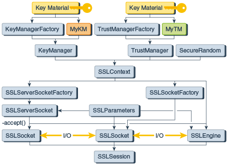

8 Java Secure Socket Extension (JSSE) Reference Guide
The Java Secure Socket Extension (JSSE) enables secure Internet communications. It provides a framework and an implementation for a Java version of the TLS and DTLS protocols and includes functionality for data encryption, server authentication, message integrity, and optional client authentication.
Introduction to JSSE
Data that travels across a network can easily be accessed by someone who is not the intended recipient. When the data includes private information, such as passwords and credit card numbers, steps must be taken to make the data unintelligible to unauthorized parties. It is also important to ensure that the data has not been modified, either intentionally or unintentionally, during transport. The Transport Layer Security (TLS) protocol was designed to help protect the privacy and integrity of data while it is being transferred across a network.
The Java Secure Socket Extension (JSSE) enables secure Internet communications. It provides a framework and an implementation for a Java version of the TLS protocol and includes functionality for data encryption, server authentication, message integrity, and optional client authentication. Using JSSE, developers can provide for the secure passage of data between a client and a server running any application protocol (such as HTTP, Telnet, or FTP) over TCP/IP.
By abstracting the complex underlying security algorithms and handshaking mechanisms, JSSE minimizes the risk of creating subtle but dangerous security vulnerabilities. Furthermore, it simplifies application development by serving as a building block that developers can integrate directly into their applications.
JSSE provides both an application programming interface (API) framework and an implementation of that API. The JSSE API supplements the core network and cryptographic services defined by the java.security and java.net packages by providing extended networking socket classes, trust managers, key managers, SSL contexts, and a socket factory framework for encapsulating socket creation behavior. Because the SSLSocket class is based on a blocking I/O model, the Java Development Kit (JDK) includes a nonblocking SSLEngine class to enable implementations to choose their own I/O methods.
The JSSE API supports the following security protocols:
-
DTLS: versions 1.0 and 1.2
-
TLS: version 1.0, 1.1, 1.2, and 1.3
-
SSL (Secure Socket Layer): version 3.0
These security protocols encapsulate a normal bidirectional stream socket, and the JSSE API adds transparent support for authentication, encryption, and integrity protection.
JSSE is a security component of the Java SE platform, and is based on the same design principles found elsewhere in the Java Cryptography Architecture (JCA) Reference Guide framework. This framework for cryptography-related security components allows them to have implementation independence and, whenever possible, algorithm independence. JSSE uses the Cryptographic Service Providers defined by the JCA framework.
Other security components in the Java SE platform include the Java Authentication and Authorization Service (JAAS) Reference Guide and the Java Security Tools. JSSE encompasses many of the same concepts and algorithms as those in JCA but automatically applies them underneath a simple stream socket API.
The JSSE API was designed to allow other SSL/TLS/DTLS protocols and Public Key Infrastructure (PKI) implementations to be plugged in seamlessly. Developers can also provide alternative logic to determine if remote hosts should be trusted or what authentication key material should be sent to a remote host.
JSSE Features and Benefits
JSSE includes the following important benefits and features:
- Included as a standard component of the JDK
- Extensible, provider-based architecture
- Implemented in 100% pure Java
- Provides API support for TLS/DTLS
- Provides implementations of SSL 3.0, TLS (versions 1.0, 1.1, 1.2, and 1.3), and DTLS (versions 1.0 and 1.2)
- Includes classes that can be instantiated to create secure channels (
SSLSocket,SSLServerSocket, andSSLEngine) - Provides support for cipher suite negotiation, which is part of the TLS/DTLS handshaking used to initiate or verify secure communications
- Provides support for client and server authentication, which is part of the normal TLS/DTLS handshaking
- Provides support for HTTP encapsulated in the TLS protocol, which allows access to data such as web pages using HTTPS
- Provides server session management APIs to manage memory-resident SSL sessions
- Provides support for the certificate status request extension (OCSP stapling), which saves client certificate validation round-trips and resources
- Provides support for the Server Name Indication (SNI) rxtension, which extends the TLS/DTLS protocols to indicate what server name the client is attempting to connect to during handshaking
- Provides support for endpoint identification during handshaking, which prevents man-in-the-middle attacks
- Provides support for cryptographic algorithm constraints, which provides fine-grained control over algorithms negotiated by JSSE
JSSE Standard API
The JSSE standard API, available in the javax.net and javax.net.ssl packages, provides:
- Secure sockets tailored to client and server-side applications.
- A non-blocking engine for producing and consuming streams of TLS/DTLS data (
SSLEngine). - Factories for creating sockets, server sockets, SSL sockets, and SSL server sockets. By using socket factories, you can encapsulate socket creation and configuration behavior.
- A class representing a secure socket context that acts as a factory for secure socket factories and engines.
- Key and trust manager interfaces (including X.509-specific key and trust managers), and factories that can be used for creating them.
- A class for secure HTTP URL connections (HTTPS).
SunJSSE Provider
Oracle's implementation of Java SE includes a JSSE provider named SunJSSE, which comes preinstalled and preregistered with the JCA. This provider supplies the following cryptographic services:
- An implementation of the SSL 3.0, TLS (versions 1.0, 1.1, 1.2, and 1.3), and DTLS (versions 1.0 and 1.2) security protocols.
- An implementation of the most common TLS and DTLS cipher suites. This implementation encompasses a combination of authentication, key agreement, encryption, and integrity protection.
- An implementation of an X.509-based key manager that chooses appropriate authentication keys from a standard JCA keystore.
- An implementation of an X.509-based trust manager that implements rules for certificate chain validation.
See The SunJSSE Provider.
JSSE Related Documentation
The following list contains links to online documentation and names of books about related subjects:
JSSE API Documentation
-
javax.net package
-
javax.net.ssl package
Java SE Security
-
The Java SE Security home page
-
The Security Features in Java SE trail of the Java Tutorial
-
Inside Java 2 Platform Security, Second Edition: Architecture, API Design and Implementation
Transport Layer Security (TLS)
Datagram Transport Layer Security (DTLS)
U.S. Encryption Policies
JSSE Classes and Interfaces
To communicate securely, both sides of the connection must be SSL-enabled. In the JSSE API, the endpoint classes of the connection are SSLSocket and SSLEngine. In Figure 8-1, the major classes used to create SSLSocket and SSLEngine are laid out in a logical ordering.
Figure 8-1 JSSE Classes Used to Create SSLSocket and SSLEngine
Description of "Figure 8-1 JSSE Classes Used to Create SSLSocket and SSLEngine"
An SSLSocket is created either by an SSLSocketFactory or by an SSLServerSocket accepting an inbound connection. In turn, an SSLServerSocket is created by an SSLServerSocketFactory. Both SSLSocketFactory and SSLServerSocketFactory objects are created by an SSLContext. An SSLEngine is created directly by an SSLContext, and relies on the application to handle all I/O.
Note:
When using rawSSLSocket or SSLEngine classes, you should always check the peer's credentials before sending any data. Since JDK 7, endpoint identification/verification procedures can be handled during SSL/TLS handshaking. See the method SSLParameters.setEndpointIdentificationAlgorithm.
For example, the host name in a URL should match the host name in the peer's credentials. An application could be exploited with URL spoofing if the host name is not verified.
JSSE Core Classes and Interfaces
The core JSSE classes are part of the javax.net and javax.net.ssl packages.
SocketFactory and ServerSocketFactory Classes
The abstract javax.net.SocketFactory class is used to create sockets. Subclasses of this class are factories that create particular subclasses of sockets and thus provide a general framework for the addition of public socket-level functionality. For example, see SSLSocketFactory and SSLServerSocketFactory Classes.
The abstract javax.net.ServerSocketFactory class is analogous to the SocketFactory class, but is used specifically for creating server sockets.
Socket factories are a simple way to capture a variety of policies related to the sockets being constructed, producing such sockets in a way that does not require special configuration of the code that asks for the sockets:
- Due to polymorphism of both factories and sockets, different kinds of sockets can be used by the same application code just by passing different kinds of factories.
- Factories can themselves be customized with parameters used in socket construction. For example, factories could be customized to return sockets with different networking timeouts or security parameters already configured.
- The sockets returned to the application can be subclasses of
java.net.Socket(orjavax.net.ssl.SSLSocket), so that they can directly expose new APIs for features such as compression, security, record marking, statistics collection, or firewall tunneling.
SSLSocketFactory and SSLServerSocketFactory Classes
The javax.net.ssl.SSLSocketFactory class acts as a factory for creating secure sockets. This class is an abstract subclass of javax.net.SocketFactory.
Secure socket factories encapsulate the details of creating and initially configuring secure sockets. This includes authentication keys, peer certificate validation, enabled cipher suites, and the like.
The javax.net.ssl.SSLServerSocketFactory class is analogous to the SSLSocketFactory class, but is used specifically for creating server sockets.
Obtaining an SSLSocketFactory
The following ways can be used to obtain an SSLSocketFactory:
- Get the default factory by calling the
SSLSocketFactory.getDefault()static method. - Receive a factory as an API parameter. That is, code that must create sockets but does not care about the details of how the sockets are configured can include a method with an
SSLSocketFactoryparameter that can be called by clients to specify whichSSLSocketFactoryto use when creating sockets (for example,javax.net.ssl.HttpsURLConnection). - Construct a new factory with specifically configured behavior.
The default factory is typically configured to support server authentication only so that sockets created by the default factory do not leak any more information about the client than a normal TCP socket would.
Many classes that create and use sockets do not need to know the details of socket creation behavior. Creating sockets through a socket factory passed in as a parameter is a good way of isolating the details of socket configuration, and increases the reusability of classes that create and use sockets.
You can create new socket factory instances either by implementing your own socket factory subclass or by using another class which acts as a factory for socket factories. One example of such a class is SSLContext, which is provided with the JSSE implementation as a provider-based configuration class.
SSLSocket and SSLServerSocket Classes
The javax.net.ssl.SSLSocket class is a subclass of the standard Java java.net.Socket class. It supports all of the standard socket methods and adds methods specific to secure sockets. Instances of this class encapsulate the SSLContext under which they were created. See SSLContext Class. There are APIs to control the creation of secure socket sessions for a socket instance, but trust and key management are not directly exposed.
The javax.net.ssl.SSLServerSocket class is analogous to the SSLSocket class, but is used specifically for creating server sockets.
To prevent peer spoofing, you should always verify the credentials presented to an SSLSocket. See Cipher Suite Choice and Remote Entity Verification.
Note:
Due to the complexity of the SSL and TLS protocols, it is difficult to predict whether incoming bytes on a connection are handshake or application data, and how that data might affect the current connection state (even causing the process to block). In the Oracle JSSE implementation, theavailable() method on the object obtained by SSLSocket.getInputStream() returns a count of the number of application data bytes successfully decrypted from the SSL connection but not yet read by the application.
Obtaining an SSLSocket
Instances of SSLSocket can be obtained in one of the following ways:
- An SSLSocket can be created by an instance of SSLSocketFactory via one of the several createSocket methods of that class.
- An SSLSocket can be created through the accept method of the SSLServerSocket class.
Cipher Suite Choice and Remote Entity Verification
The SSL/TLS protocols define a specific series of steps to ensure a protected connection. However, the choice of cipher suite directly affects the type of security that the connection enjoys. For example, if an anonymous cipher suite is selected, then the application has no way to verify the remote peer's identity. If a suite with no encryption is selected, then the privacy of the data cannot be protected. Additionally, the SSL/TLS protocols do not specify that the credentials received must match those that peer might be expected to send. If the connection were somehow redirected to a rogue peer, but the rogue's credentials were acceptable based on the current trust material, then the connection would be considered valid.
When using raw SSLSocket and SSLEngine classes, you should always check the peer's credentials before sending any data. The SSLSocket and SSLEngine classes do not automatically verify that the host name in a URL matches the host name in the peer's credentials. An application could be exploited with URL spoofing if the host name is not verified. Since JDK 7, endpoint identification/verification procedures can be handled during SSL/TLS handshaking. See the SSLParameters.getEndpointIdentificationAlgorithm method.
Protocols such as HTTPS (HTTP Over TLS) do require host name verification. Since JDK 7, the HTTPS endpoint identification is enforced during handshaking for HttpsURLConnection by default. See the SSLParameters.getEndpointIdentificationAlgorithm method. Alternatively, applications can use the HostnameVerifier interface to override the default HTTPS host name rules. See HostnameVerifier Interface and HttpsURLConnection Class.
SSLEngine Class
TLS/DTLS is becoming increasingly popular. It is being used in a wide variety of applications across a wide range of computing platforms and devices. Along with this popularity come demands to use TLS/DTLS with different I/O and threading models to satisfy the applications' performance, scalability, footprint, and other requirements. There are demands to use TLS/DTLS with blocking and nonblocking I/O channels, asynchronous I/O, arbitrary input and output streams, and byte buffers. There are demands to use it in highly scalable, performance-critical environments, requiring management of thousands of network connections.
Abstraction of the I/O transport mechanism using the SSLEngine class in Java SE allows applications to use the TLS/DTLS protocols in a transport-independent way, and thus frees application developers to choose transport and computing models that best meet their needs. Not only does this abstraction allow applications to use nonblocking I/O channels and other I/O models, it also accommodates different threading models. This effectively leaves the I/O and threading decisions up to the application developer. Because of this flexibility, the application developer must manage I/O and threading (complex topics in and of themselves), as well as have some understanding of the TLS/DTLS protocols. The abstraction is therefore an advanced API: beginners should use SSLSocket.
Users of other Java programming language APIs such as the Java Generic Security Services (Java GSS-API) and the Java Simple Authentication Security Layer (Java SASL) will notice similarities in that the application is also responsible for transporting data.
The core class is javax.net.ssl.SSLEngine. It encapsulates a TLS/DTLS state machine and operates on inbound and outbound byte buffers supplied by the user of the SSLEngine class. Figure 8-2 illustrates the flow of data from the application, through SSLEngine, to the transport mechanism, and back.
Figure 8-2 Flow of Data Through SSLEngine

The application, shown on the left, supplies application (plaintext) data in an application buffer and passes it to SSLEngine. The SSLEngine object processes the data contained in the buffer, or any handshaking data, to produce TLS/DTLS encoded data and places it to the network buffer supplied by the application. The application is then responsible for using an appropriate transport (shown on the right) to send the contents of the network buffer to its peer. Upon receiving TLS/DTLS encoded data from its peer (via the transport), the application places the data into a network buffer and passes it to SSLEngine. The SSLEngine object processes the network buffer's contents to produce handshaking data or application data.
An instance of the SSLEngine class can be in one of the following states:
- Creation
- The
SSLEnginehas been created and initialized, but has not yet been used. During this phase, an application may set anySSLEngine-specific settings (enabled cipher suites, whether theSSLEngineshould handshake in client or server mode, and so on). Once handshaking has begun, though, any new settings (except client/server mode) will be used for the next handshake. - Initial handshaking
- The initial handshake is a procedure by which the two peers exchange communication parameters until an
SSLSessionis established. Application data can’t be sent during this phase. - Application data
- After the communication parameters have been established and the handshake is complete, application data can flow through the
SSLEngine. Outbound application messages are encrypted and integrity protected, and inbound messages reverse the process. - Rehandshaking
- Either side can request a renegotiation of the session at any time during the Application Data phase. New handshaking data can be intermixed among the application data. Before starting the rehandshake phase, the application may reset the TLS/DTLS communication parameters such as the list of enabled cipher suites and whether to use client authentication, but can not change between client/server modes. As before, after handshaking has begun, any new
SSLEngineconfiguration settings won’t be used until the next handshake. - Closure
- When the connection is no longer needed, the application should close the
SSLEngineand should send/receive any remaining messages to the peer before closing the underlying transport mechanism. Once an engine is closed, it is not reusable: a newSSLEnginemust be created.
Understanding SSLEngine Operation Statuses
The status of the SSLEngine is represented by SSLEngineResult.Status.
To indicate the status of the engine and what actions the application should take, the SSLEngine.wrap() and SSLEngine.unwrap() methods return an SSLEngineResult instance, as shown in Example 8-5. This SSLEngineResult object contains two pieces of status information: the overall status of the engine and the handshaking status.
The possible overall statuses are represented by the SSLEngineResult.Status enum. The following statuses are available:
-
OK - There was no error.
-
CLOSED - The operation closed the
SSLEngineor the operation could not be completed because it was already closed. -
BUFFER_UNDERFLOW - The input buffer had insufficient data, indicating that the application must obtain more data from the peer (for example, by reading more data from the network).
-
BUFFER_OVERFLOW - The output buffer had insufficient space to hold the result, indicating that the application must clear or enlarge the destination buffer.
Example 8-1 illustrates how to handle the BUFFER_UNDERFLOW and BUFFER_OVERFLOW statuses of the SSLEngine.unwrap() method. It uses SSLSession.getApplicationBufferSize() and SSLSession.getPacketBufferSize() to determine how large to make the byte buffers.
The possible handshaking statuses are represented by the SSLEngineResult.HandshakeStatus enum. They represent whether handshaking has completed, whether the caller must obtain more handshaking data from the peer or send more handshaking data to the peer, and so on. The following handshake statuses are available:
-
FINISHED - The
SSLEnginehas just finished handshaking. -
NEED_TASK - The
SSLEngineneeds the results of one (or more) delegated tasks before handshaking can continue. -
NEED_UNWRAP - The
SSLEngineneeds to receive data from the remote side before handshaking can continue. -
NEED_UNWRAP_AGAIN - The
SSLEngineneeds to unwrap before handshaking can continue. This value indicates that not-yet-interpreted data has been previously received from the remote side and does not need to be received again; the data has been brought into the JSSE framework but has not been processed yet. -
NEED_WRAP - The
SSLEnginemust send data to the remote side before handshaking can continue, so SSLEngine.wrap() should be called. -
NOT_HANDSHAKING - The
SSLEngineis not currently handshaking.
Having two statuses per result allows the SSLEngine to indicate that the application must take two actions: one in response to the handshaking and one representing the overall status of the wrap() and unwrap() methods. For example, the engine might, as the result of a single SSLEngine.unwrap() call, return SSLEngineResult.Status.OK to indicate that the input data was processed successfully and SSLEngineResult.HandshakeStatus.NEED_UNWRAP to indicate that the application should obtain more TLS/DTLS encoded data from the peer and supply it to SSLEngine.unwrap() again so that handshaking can continue. As you can see, the previous examples were greatly simplified; they would need to be expanded significantly to properly handle all of these statuses.
Example 8-3 and Example 8-2 illustrate how to process handshaking data by checking handshaking status and the overall status of the wrap() and unwrap() methods.
Example 8-1 Sample Code for Handling BUFFER_UNDERFLOW and BUFFER_OVERFLOW
The following code sample illustrates how to handle BUFFER_UNDERFLOW and BUFFER_OVERFLOW status:
SSLEngineResult res = engine.unwrap(peerNetData, peerAppData);
switch (res.getStatus()) {
case BUFFER_OVERFLOW:
// Maybe need to enlarge the peer application data buffer.
if (engine.getSession().getApplicationBufferSize() > peerAppData.capacity()) {
// enlarge the peer application data buffer
} else {
// compact or clear the buffer
}
// retry the operation
break;
case BUFFER_UNDERFLOW:
// Maybe need to enlarge the peer network packet buffer
if (engine.getSession().getPacketBufferSize() > peerNetData.capacity()) {
// enlarge the peer network packet buffer
} else {
// compact or clear the buffer
}
// obtain more inbound network data and then retry the operation
break;
// Handle other status: CLOSED, OK
// ...
}
Example 8-2 Sample Code for Checking and Processing Handshaking Statuses and Overall Statuses
The following code sample illustrates how to process handshaking data by checking handshaking status and the overall status of the wrap() and unwrap() methods:
void doHandshake(SocketChannel socketChannel, SSLEngine engine,
ByteBuffer myNetData, ByteBuffer peerNetData) throws Exception {
// Create byte buffers to use for holding application data
int appBufferSize = engine.getSession().getApplicationBufferSize();
ByteBuffer myAppData = ByteBuffer.allocate(appBufferSize);
ByteBuffer peerAppData = ByteBuffer.allocate(appBufferSize);
// Begin handshake
engine.beginHandshake();
SSLEngineResult.HandshakeStatus hs = engine.getHandshakeStatus();
// Process handshaking message
while (hs != SSLEngineResult.HandshakeStatus.FINISHED &&
hs != SSLEngineResult.HandshakeStatus.NOT_HANDSHAKING) {
switch (hs) {
case NEED_UNWRAP:
// Receive handshaking data from peer
if (socketChannel.read(peerNetData) < 0) {
// The channel has reached end-of-stream
}
// Process incoming handshaking data
peerNetData.flip();
SSLEngineResult res = engine.unwrap(peerNetData, peerAppData);
peerNetData.compact();
hs = res.getHandshakeStatus();
// Check status
switch (res.getStatus()) {
case OK :
// Handle OK status
break;
// Handle other status: BUFFER_UNDERFLOW, BUFFER_OVERFLOW, CLOSED
// ...
}
break;
case NEED_WRAP :
// Empty the local network packet buffer.
myNetData.clear();
// Generate handshaking data
res = engine.wrap(myAppData, myNetData);
hs = res.getHandshakeStatus();
// Check status
switch (res.getStatus()) {
case OK :
myNetData.flip();
// Send the handshaking data to peer
while (myNetData.hasRemaining()) {
socketChannel.write(myNetData);
}
break;
// Handle other status: BUFFER_OVERFLOW, BUFFER_UNDERFLOW, CLOSED
// ...
}
break;
case NEED_TASK :
// Handle blocking tasks
break;
// Handle other status: // FINISHED or NOT_HANDSHAKING
// ...
}
}
// Processes after handshaking
// ...
}
Example 8-3 Sample Code for Handling DTLS handshake Status and Overall Status
The following code sample illustrates how to handle DTLS handshake status:
void handshake(SSLEngine engine, DatagramSocket socket,
SocketAddress peerAddr) throws Exception {
boolean endLoops = false;
// private static int MAX_HANDSHAKE_LOOPS = 60;
int loops = MAX_HANDSHAKE_LOOPS;
engine.beginHandshake();
while (!endLoops && (serverException == null) && (clientException == null)) {
if (--loops < 0) {
throw new RuntimeException("Too many loops to produce handshake packets");
}
SSLEngineResult.HandshakeStatus hs = engine.getHandshakeStatus();
if (hs == SSLEngineResult.HandshakeStatus.NEED_UNWRAP ||
hs == SSLEngineResult.HandshakeStatus.NEED_UNWRAP_AGAIN) {
ByteBuffer iNet;
ByteBuffer iApp;
if (hs == SSLEngineResult.HandshakeStatus.NEED_UNWRAP) {
// receive ClientHello request and other SSL/TLS/DTLS records
byte[] buf = new byte[1024];
DatagramPacket packet = new DatagramPacket(buf, buf.length);
try {
socket.receive(packet);
} catch (SocketTimeoutException ste) {
// retransmit the packet if timeout
List <Datagrampacket> packets =
onReceiveTimeout(engine, peerAddr);
for (DatagramPacket p : packets) {
socket.send(p);
}
continue;
}
iNet = ByteBuffer.wrap(buf, 0, packet.getLength());
iApp = ByteBuffer.allocate(1024);
} else {
iNet = ByteBuffer.allocate(0);
iApp = ByteBuffer.allocate(1024);
}
SSLEngineResult r = engine.unwrap(iNet, iApp);
SSLEngineResult.Status rs = r.getStatus();
hs = r.getHandshakeStatus();
if (rs == SSLEngineResult.Status.BUFFER_OVERFLOW) {
// the client maximum fragment size config does not work?
throw new Exception("Buffer overflow: " +
"incorrect client maximum fragment size");
} else if (rs == SSLEngineResult.Status.BUFFER_UNDERFLOW) {
// bad packet, or the client maximum fragment size
// config does not work?
if (hs != SSLEngineResult.HandshakeStatus.NOT_HANDSHAKING) {
throw new Exception("Buffer underflow: " +
"incorrect client maximum fragment size");
} // otherwise, ignore this packet
} else if (rs == SSLEngineResult.Status.CLOSED) {
endLoops = true;
} // otherwise, SSLEngineResult.Status.OK:
if (rs != SSLEngineResult.Status.OK) {
continue;
}
} else if (hs == SSLEngineResult.HandshakeStatus.NEED_WRAP) {
List <DatagramPacket> packets =
// Call a function to produce handshake packets
produceHandshakePackets(engine, peerAddr);
for (DatagramPacket p : packets) {
socket.send(p);
}
} else if (hs == SSLEngineResult.HandshakeStatus.NEED_TASK) {
runDelegatedTasks(engine);
} else if (hs == SSLEngineResult.HandshakeStatus.NOT_HANDSHAKING) {
// OK, time to do application data exchange.
endLoops = true;
} else if (hs == SSLEngineResult.HandshakeStatus.FINISHED) {
endLoops = true;
}
}
SSLEngineResult.HandshakeStatus hs = engine.getHandshakeStatus();
if (hs != SSLEngineResult.HandshakeStatus.NOT_HANDSHAKING) {
throw new Exception("Not ready for application data yet");
}
}SSLEngine for TLS Protocols
This section shows you how to create an SSLEngine object and use it to generate and process TLS data.
Creating an SSLEngine Object
Use the SSLContext.createSSLEngine() method to create an SSLEngine object.
Before you create an SSLEngine object, you must configure the engine to act as a client or a server, and set other configuration parameters, such as which cipher suites to use and whether client authentication is required. The SSLContext.createSSLEngine method creates an javax.net.ssl.SSLEngine object.
Example 8-4 Sample Code for Creating an SSLEngine Client for TLS with JKS as Keystore
The following sample code creates an SSLEngine client for TLS that uses JKS as keystore.
Note:
In this sample, the server name and port number are not used for communicating with the server (all transport is the responsibility of the application). They are hints to the JSSE provider to use for TLS session caching. import javax.net.ssl.*;
import java.security.*;
// Create and initialize the SSLContext with key material
char[] passphrase = "passphrase".toCharArray();
// First initialize the key and trust material
KeyStore ksKeys = KeyStore.getInstance("JKS");
ksKeys.load(new FileInputStream("testKeys"), passphrase);
KeyStore ksTrust = KeyStore.getInstance("JKS");
ksTrust.load(new FileInputStream("testTrust"), passphrase);
// KeyManagers decide which key material to use
KeyManagerFactory kmf = KeyManagerFactory.getInstance("PKIX");
kmf.init(ksKeys, passphrase);
// TrustManagers decide whether to allow connections
TrustManagerFactory tmf = TrustManagerFactory.getInstance("PKIX");
tmf.init(ksTrust);
// Get an instance of SSLContext for TLS protocols
sslContext = SSLContext.getInstance("TLS");
sslContext.init(kmf.getKeyManagers(), tmf.getTrustManagers(), null);
// Create the engine
SSLEngine engine = sslContext.createSSLengine(hostname, port);
// Use as client
engine.setUseClientMode(true);
Generating and Processing TLS Data
The two main SSLEngine methods are wrap() and unwrap(). They are responsible for generating and consuming network data respectively. Depending on the state of the SSLEngine object, this data might be handshake or application data.
Each SSLEngine object has several phases during its lifetime. Before application data can be sent or received, the TLS protocol requires a handshake to establish cryptographic parameters. This handshake requires a series of back-and-forth steps by the SSLEngine object.
During the initial handshaking, the wrap() and unwrap() methods generate and consume handshake data, and the application is responsible for transporting the data. The wrap() and unwrap() method sequence is repeated until the handshake is finished. Each SSLEngine operation generates an instance of the SSLEngineResult class, in which the SSLEngineResult.HandshakeStatus field is used to determine what operation must occur next to move the handshake along.
Figure 8-3 shows the state machine during a typical TLS handshake, with corresponding messages and statuses:
Figure 8-3 State Machine during TLS Handshake

Description of "Figure 8-3 State Machine during TLS Handshake"
When handshaking is complete, further calls to wrap() will attempt to consume application data and package it for transport. The unwrap() method will attempt the opposite.
To send data to the peer, the application first supplies the data that it wants to send via SSLEngine.wrap() to obtain the corresponding TLS encoded data. The application then sends the encoded data to the peer using its chosen transport mechanism. When the application receives the TLS encoded data from the peer via the transport mechanism, it supplies this data to the SSLEngine via SSLEngine.unwrap() to obtain the plaintext data sent by the peer.
Example 8-5 Sample Code for Creating a Nonblocking SocketChannel
The following example is an SSL application that uses a non-blocking SocketChannel to communicate with its peer. It sends the string "hello" to the peer by encoding it using the SSLEngine created in Example 8-4 . It uses information from the SSLSession to determine how large to make the byte buffers.
Note:
The example can be made more robust and scalable by using aSelector with the nonblocking SocketChannel.
// Create a nonblocking socket channel
SocketChannel socketChannel = SocketChannel.open();
socketChannel.configureBlocking(false);
socketChannel.connect(new InetSocketAddress(hostname, port));
// Complete connection
while (!socketChannel.finishedConnect()) {
// do something until connect completed
}
//Create byte buffers for holding application and encoded data
SSLSession session = engine.getSession();
ByteBuffer myAppData = ByteBuffer.allocate(session.getApplicationBufferSize());
ByteBuffer myNetData = ByteBuffer.allocate(session.getPacketBufferSize());
ByteBuffer peerAppData = ByteBuffer.allocate(session.getApplicationBufferSize());
ByteBuffer peerNetData = ByteBuffer.allocate(session.getPacketBufferSize());
// Do initial handshake
doHandshake(socketChannel, engine, myNetData, peerNetData);
myAppData.put("hello".getBytes());
myAppData.flip();
while (myAppData.hasRemaining()) {
// Generate TLS/DTLS encoded data (handshake or application data)
SSLEngineResult res = engine.wrap(myAppData, myNetData);
// Process status of call
if (res.getStatus() == SSLEngineResult.Status.OK) {
myAppData.compact();
// Send TLS/DTLS encoded data to peer
while(myNetData.hasRemaining()) {
int num = socketChannel.write(myNetData);
if (num == 0) {
// no bytes written; try again later
}
}
}
// Handle other status: BUFFER_OVERFLOW, CLOSED
...
}Example 8-6 Sample Code for Reading Data From Nonblocking SocketChannel
The following sample code illustrates how to read data from the same nonblockingSocketChannel and extract the plaintext data from it by using SSLEngine created in Example 8-4. Each iteration of this code may or may not produce plaintext data, depending on whether handshaking is in progress.
// Read TLS/DTLS encoded data from peer
int num = socketChannel.read(peerNetData);
if (num == -1) {
// The channel has reached end-of-stream
} else if (num == 0) {
// No bytes read; try again ...
} else {
// Process incoming data
peerNetData.flip();
res = engine.unwrap(peerNetData, peerAppData);
if (res.getStatus() == SSLEngineResult.Status.OK) {
peerNetData.compact();
if (peerAppData.hasRemaining()) {
// Use peerAppData
}
}
// Handle other status: BUFFER_OVERFLOW, BUFFER_UNDERFLOW, CLOSED
...
}
SSLEngine for DTLS Protocols
This section shows you how to create an SSLEngine object and use it to handle a DTLS handshake, generate and process DTLS data, and handle retransmissions in DTLS connections.
Creating an SSLEngine Object for DTLS
The following examples illustrate how to create an SSLEngine object for DTLS.
Note:
The server name and port number are not used for communicating with the server (all transport is the responsibility of the application). They are hints to the JSSE provider to use for DTLS session caching, and for Kerberos-based cipher suite implementations to determine which server credentials should be obtained.Example 8-7 Sample Code for Creating an SSLEngine Client for DTLS with PKCS12 as Keystore
The following sample code creates an SSLEngine client for DTLS that uses PKCS12 as keystore:
import javax.net.ssl.*;
import java.security.*;
// Create and initialize the SSLContext with key material
char[] passphrase = "passphrase".toCharArray();
// First initialize the key and trust material
KeyStore ksKeys = KeyStore.getInstance("PKCS12");
ksKeys.load(new FileInputStream("testKeys"), passphrase);
KeyStore ksTrust = KeyStore.getInstance("PKCS12");
ksTrust.load(new FileInputStream("testTrust"), passphrase);
// KeyManagers decide which key material to use
KeyManagerFactory kmf = KeyManagerFactory.getInstance("PKIX");
kmf.init(ksKeys, passphrase);
// TrustManagers decide whether to allow connections
TrustManagerFactory tmf = TrustManagerFactory.getInstance("PKIX");
tmf.init(ksTrust);
// Get an instance of SSLContext for DTLS protocols
sslContext = SSLContext.getInstance("DTLS");
sslContext.init(kmf.getKeyManagers(), tmf.getTrustManagers(), null);
// Create the engine
SSLEngine engine = sslContext.createSSLengine(hostname, port);
// Use engine as client
engine.setUseClientMode(true);
Example 8-8 Sample Code for Creating an SSLEngine Server for DTLS with PKCS12 as Keystore
The following sample code creates an SSLEngine server for DTLS that uses PKCS12 as keystore: import javax.net.ssl.*;
import java.security.*;
// Create and initialize the SSLContext with key material
char[] passphrase = "passphrase".toCharArray();
// First initialize the key and trust material
KeyStore ksKeys = KeyStore.getInstance("PKCS12");
ksKeys.load(new FileInputStream("testKeys"), passphrase);
KeyStore ksTrust = KeyStore.getInstance("PKCS12");
ksTrust.load(new FileInputStream("testTrust"), passphrase);
// KeyManagers decide which key material to use
KeyManagerFactory kmf = KeyManagerFactory.getInstance("PKIX");
kmf.init(ksKeys, passphrase);
// TrustManagers decide whether to allow connections
TrustManagerFactory tmf = TrustManagerFactory.getInstance("PKIX");
tmf.init(ksTrust);
// Get an SSLContext for DTLS Protocol without authentication
sslContext = SSLContext.getInstance("DTLS");
sslContext.init(null, null, null);
// Create the engine
SSLEngine engine = sslContext.createSSLeEngine(hostname, port);
// Use the engine as server
engine.setUseClientMode(false);
// Require client authentication
engine.setNeedClientAuth(true);Generating and Processing DTLS Data
A DTLS handshake and a TLS handshake generate and process data similarly. (See Generating and Processing TLS Data.) They both use the SSLEngine.wrap() and SSLEngine.wrap() methods to generate and consume network data, respectively.
The following diagram shows the state machine during a typical DTLS handshake, with corresponding messages and statuses:
Figure 8-4 State Machine during DTLS Handshake

Description of "Figure 8-4 State Machine during DTLS Handshake"
Example 8-9 Sample Code for Handling DTLS Handshake Status and Overall Status
This sample demonstrates how to handle DTLS handshake status (from the SSLEngine.getHandshakeStatus method) and overall status (from the SSLEngineResult.getStatus method).
void handshake(SSLEngine engine, DatagramSocket socket, SocketAddress peerAddr) throws Exception {
boolean endLoops = false;
// private static int MAX_HANDSHAKE_LOOPS = 60;
int loops = MAX_HANDSHAKE_LOOPS;
engine.beginHandshake();
while (!endLoops && (serverException == null) && (clientException == null)) {
if (--loops < 0) {
throw new RuntimeException("Too many loops to produce handshake packets");
}
SSLEngineResult.HandshakeStatus hs = engine.getHandshakeStatus();
if (hs == SSLEngineResult.HandshakeStatus.NEED_UNWRAP ||
hs == SSLEngineResult.HandshakeStatus.NEED_UNWRAP_AGAIN) {
ByteBuffer iNet;
ByteBuffer iApp;
if (hs == SSLEngineResult.HandshakeStatus.NEED_UNWRAP) {
// Receive ClientHello request and other SSL/TLS/DTLS records
byte[] buf = new byte[1024];
DatagramPacket packet = new DatagramPacket(buf, buf.length);
try {
socket.receive(packet);
} catch (SocketTimeoutException ste) {
// Retransmit the packet if timeout
List <Datagrampacket> packets = onReceiveTimeout(engine, peerAddr);
for (DatagramPacket p : packets) {
socket.send(p);
}
continue;
}
iNet = ByteBuffer.wrap(buf, 0, packet.getLength());
iApp = ByteBuffer.allocate(1024);
} else {
iNet = ByteBuffer.allocate(0);
iApp = ByteBuffer.allocate(1024);
}
SSLEngineResult r = engine.unwrap(iNet, iApp);
SSLEngineResult.Status rs = r.getStatus();
hs = r.getHandshakeStatus();
if (rs == SSLEngineResult.Status.BUFFER_OVERFLOW) {
// The client maximum fragment size config does not work?
throw new Exception("Buffer overflow: " +
"incorrect client maximum fragment size");
} else if (rs == SSLEngineResult.Status.BUFFER_UNDERFLOW) {
// Bad packet, or the client maximum fragment size
// config does not work?
if (hs != SSLEngineResult.HandshakeStatus.NOT_HANDSHAKING) {
throw new Exception("Buffer underflow: " +
"incorrect client maximum fragment size");
} // Otherwise, ignore this packet
} else if (rs == SSLEngineResult.Status.CLOSED) {
endLoops = true;
} // Otherwise, SSLEngineResult.Status.OK
if (rs != SSLEngineResult.Status.OK) {
continue;
}
} else if (hs == SSLEngineResult.HandshakeStatus.NEED_WRAP) {
// Call a function to produce handshake packets
List <DatagramPacket> packets = produceHandshakePackets(engine, peerAddr);
for (DatagramPacket p : packets) {
socket.send(p);
}
} else if (hs == SSLEngineResult.HandshakeStatus.NEED_TASK) {
runDelegatedTasks(engine);
} else if (hs == SSLEngineResult.HandshakeStatus.NOT_HANDSHAKING) {
// OK, time to do application data exchange
endLoops = true;
} else if (hs == SSLEngineResult.HandshakeStatus.FINISHED) {
endLoops = true;
}
}
SSLEngineResult.HandshakeStatus hs = engine.getHandshakeStatus();
if (hs != SSLEngineResult.HandshakeStatus.NOT_HANDSHAKING) {
throw new Exception("Not ready for application data yet");
}
}Difference Between the TLS and DTLS SSLEngine.wrap() Methods
SSLEngine.wrap() method for DTLS is different from TLS as follows:
-
In the TLS implementation of
SSLEngine, the output buffer ofSSLEngine.wrap()contains one or more TLS records (due to the TLSv1 BEAST Cipher Block Chaining vulnerability). -
In the DTLS implementation of
SSLEngine, the output buffer ofSSLEngine.wrap()contains at most one record, so that every DTLS record can be marshaled and delivered to the datagram layer individually.
Note:
Each record produced bySSLEngine.wrap() should comply to the maximum packet size limitation as specified by SSLParameters.getMaximumPacketSize().
Handling Retransmissions in DTLS Connections
In SSL/TLS over a reliable connection, data is guaranteed to arrive in the proper order, and retransmission is unnecessary. However, for DTLS, which often works over unreliable media, missing or delayed handshake messages must be retransmitted.
The SSLEngine class operates in a completely transport-neutral manner, and the application layer performs all I/O. Because the SSLEngine class isn’t responsible for I/O, the application instead is responsible for providing timers and signalling the SSLEngine class when a retransmission is needed. The application layer must determine the right timeout value and when to trigger the timeout event. During handshaking, if an SSLEngine object is in HandshakeStatus.NEED_UNWRAP state, a call to SSLEngine.wrap() means that the previous packets were lost, and must be retransmitted. For such cases, the DTLS implementation of the SSLEngine class takes the responsibility to wrap the previous necessary handshaking messages again if necessary.
Note:
In a DTLS engine, only handshake messages must be properly exchanged. Application data can handle packet loss without the need for timers.Handling Retransmission in an Application
SSLEngine.unwrap() and SSLEngine.wrap() can be used together to handle retransmission in an application.
Figure 8-5 shows a typical scenario for handling DTLS handshaking retransmission:
Figure 8-5 DTLS Handshake Retransmission State Flow

Handling a Buffered Handshake Message in an Application
Datagram transport doesn’t require or provide reliable or in-order delivery of data. Handshake messages may be lost or need to be reordered. In the DTLS implementation, a handshake message may need to be buffered for future handling before all previous messages have been received.
The DTLS implementation of SSLEngine takes the responsibility to reorder handshake messages. Handshake message buffering and reordering are transparent to applications.
However, applications must manage HandshakeStatus.NEED_UNWRAP_AGAIN status. This status indicates that for the next SSLEngine.unwrap() operation no additional data from the remote side is required.
Figure 8-6 shows a typical scenario for using the HandshakeStatus.NEED_UNWRAP_AGAIN.
Figure 8-6 State Machine of DTLS Buffered Handshake with NEED_UNWRAP_AGAIN

Dealing With Blocking Tasks
During handshaking, an SSLEngine might encounter tasks that can block or take a long time. For example, a TrustManager may need to connect to a remote certificate validation service, or a KeyManager might need to prompt a user to determine which certificate to use as part of client authentication. To preserve the nonblocking nature of SSLEngine, when the engine encounters such a task, it will return SSLEngineResult.HandshakeStatus.NEED_TASK. Upon receiving this status, the application should invoke SSLEngine.getDelegatedTask() to get the task, and then, using the threading model appropriate for its requirements, process the task. The application might, for example, obtain threads from a thread pool to process the tasks, while the main thread handles other I/O.
The following code executes each task in a newly created thread:
if (res.getHandshakeStatus() == SSLEngineResult.HandshakeStatus.NEED_TASK) {
Runnable task;
while ((task = engine.getDelegatedTask()) != null) {
new Thread(task).start();
}
}
The SSLEngine will block future wrap() and unwrap() calls until all of the outstanding tasks are completed.
Shutting Down a TLS/DTLS Connection
For an orderly shutdown of a TLS/DTLS connection, the TLS/DTLS protocols require transmission of close messages. Therefore, when an application is done with the TLS/DTLS connection, it should first obtain the close messages from the SSLEngine, then transmit them to the peer using its transport mechanism, and finally shut down the transport mechanism. Example 8-10 illustrates this.
In addition to an application explicitly closing the SSLEngine, the SSLEngine might be closed by the peer (via receipt of a close message while it is processing handshake data), or by the SSLEngine encountering an error while processing application or handshake data, indicated by throwing an SSLException. In such cases, the application should invoke SSLEngine.wrap() to get the close message and send it to the peer until SSLEngine.isOutboundDone() returns true (as shown in Example 8-10), or until the SSLEngineResult.getStatus() returns CLOSED.
In addition to orderly shutdowns, there can also be unexpected shutdowns when the transport link is severed before close messages are exchanged. In the previous examples, the application might get -1 or IOException when trying to read from the nonblocking SocketChannel, or get IOException when trying to write to the non-blocking SocketChannel. When you get to the end of your input data, you should call engine.closeInbound(), which will verify with the SSLEngine that the remote peer has closed cleanly from the TLS/DTLS perspective. Then the application should still try to shut down cleanly by using the procedure in Example 8-10. Obviously, unlike SSLSocket, the application using SSLEngine must deal with more state transitions, statuses, and programming. See Sample Code Illustrating the Use of an SSLEngine.
Example 8-10 Sample Code for Shutting Down a SSL/TLS/DTLS Connection
The following code sample illustrates how to shut down a TLS/DTLS connection:
// Indicate that application is done with engine
engine.closeOutbound();
while (!engine.isOutboundDone()) {
// Get close message
SSLEngineResult res = engine.wrap(empty, myNetData);
// Check res statuses
// Send close message to peer
while(myNetData.hasRemaining()) {
int num = socketChannel.write(myNetData);
if (num == 0) {
// no bytes written; try again later
}
myNetData().compact();
}
}
// Close transport
socketChannel.close();
SSLSession and ExtendedSSLSession
The javax.net.ssl.SSLSession interface represents a security context negotiated between the two peers of an SSLSocket or SSLEngine connection. After a session has been arranged, it can be shared by future SSLSocket or SSLEngine objects connected between the same two peers.
In some cases, parameters negotiated during the handshake are needed later in the handshake to make decisions about trust. For example, the list of valid signature algorithms might restrict the certificate types that can be used for authentication. The SSLSession can be retrieved during the handshake by calling getHandshakeSession() on an SSLSocket or SSLEngine. Implementations of TrustManager or KeyManager can use the getHandshakeSession() method to get information about session parameters to help them make decisions.
A fully initialized SSLSession contains the cipher suite that will be used for communications over a secure socket as well as a nonauthoritative hint as to the network address of the remote peer, and management information such as the time of creation and last use. A session also contains a shared master secret negotiated between the peers that is used to create cryptographic keys for encrypting and guaranteeing the integrity of the communications over an SSLSocket or SSLEngine connection. The value of this master secret is known only to the underlying secure socket implementation and is not exposed through the SSLSession API.
ExtendedSSLSession extends the SSLSession interface to support additional session attributes. The ExtendedSSLSession class adds methods that describe the signature algorithms that are supported by the local implementation and the peer. The getRequestedServerNames() method called on an ExtendedSSLSession instance is used to obtain a list of SNIServerName objects in the requested Server Name Indication (SNI) Extension. The server should use the requested server names to guide its selection of an appropriate authentication certificate, and/or other aspects of the security policy. The client should use the requested server names to guide its endpoint identification of the peer's identity, and/or other aspects of the security policy.
Calls to the getPacketBufferSize() and getApplicationBufferSize() methods on SSLSession are used to determine the appropriate buffer sizes used by SSLEngine.
Note:
The TLS protocols specify that implementations are to produce packets containing at most 16 kilobytes (KB) of plain text. However, some implementations violate the specification and generate large records up to 32 KB. If theSSLEngine.unwrap() code detects large inbound packets, then the buffer sizes returned by SSLSession will be updated dynamically. Applications should always check the BUFFER_OVERFLOW and BUFFER_UNDERFLOW statuses and enlarge the corresponding buffers if necessary. See Understanding SSLEngine Operation Statuses. SunJSSE will always send standard compliant 16 KB records and allow incoming 32 KB records. For a workaround, see the System property jsse.SSLEngine.acceptLargeFragments in Customizing JSSE.
HttpsURLConnection Class
The javax.net.ssl.HttpsURLConnection class extends the java.net.HttpURLConnection class and adds support for HTTPS-specific features.
The HTTPS protocol is similar to HTTP, but HTTPS first establishes a secure channel through TLS sockets and then verifies the identity of the peer (see Cipher Suite Choice and Remote Entity Verification) before requesting or receiving data. The javax.net.ssl.HttpsURLConnection class extends the java.net.HttpURLConnection class and adds support for HTTPS-specific features. To know more about how HTTPS URLs are constructed and used, see thejava.net.URL, java.net.URLConnection, java.net.HttpURLConnection, and javax.net.ssl.HttpsURLConnection classes.
Upon obtaining an HttpsURLConnection instance, you can configure a number of HTTP and HTTPS parameters before actually initiating the network connection via the URLConnection.connect() method. Of particular interest are:
Setting the Assigned SSLSocketFactory
In some situations, it is desirable to specify the SSLSocketFactory that an HttpsURLConnection instance uses. For example, you might want to tunnel through a proxy type that is not supported by the default implementation. The new SSLSocketFactory could return sockets that have already performed all necessary tunneling, thus allowing HttpsURLConnection to use additional proxies.
The HttpsURLConnection class has a default SSLSocketFactory that is assigned when the class is loaded (this is the factory returned by the SSLSocketFactory.getDefault() method). Future instances of HttpsURLConnection will inherit the current default SSLSocketFactory until a new default SSLSocketFactory is assigned to the class via the static HttpsURLConnection.setDefaultSSLSocketFactory() method. Once an instance of HttpsURLConnection has been created, the inherited SSLSocketFactory on this instance can be overridden with a call to the setSSLSocketFactory() method.
Note:
Changing the default staticSSLSocketFactory has no effect on existing instances of HttpsURLConnection. A call to the setSSLSocketFactory() method is necessary to change the existing instances.
You can obtain the per-instance or per-class SSLSocketFactory by making a call to the getSSLSocketFactory() or getDefaultSSLSocketFactory() method, respectively.
Setting the Assigned HostnameVerifier
If the host name of the URL does not match the host name in the credentials received as part of the TLS handshake, then it is possible that URL spoofing has occurred. If the implementation cannot determine a host name match with reasonable certainty, then the TLS implementation performs a callback to the instance's assigned HostnameVerifier for further checking. The host name verifier can take whatever steps are necessary to make the determination, such as performing host name pattern matching or perhaps opening an interactive dialog box. An unsuccessful verification by the host name verifier closes the connection. For more information regarding host name verification, see RFC 2818: HTTP over TLS.
The setHostnameVerifier() and setDefaultHostnameVerifier() methods operate in a similar manner to the setSSLSocketFactory() and setDefaultSSLSocketFactory() methods, in that HostnameVerifier objects are assigned on a per-instance and per-class basis, and the current values can be obtained by a call to the getHostnameVerifier() or getDefaultHostnameVerifier() method.
Support Classes and Interfaces
The classes and interfaces in this section are provided to support the creation and initialization of SSLContext objects, which are used to create SSLSocketFactory, SSLServerSocketFactory, and SSLEngine objects. The support classes and interfaces are part of the javax.net.ssl package.
Three of the classes described in this section (SSLContext Class, KeyManagerFactory Class, and TrustManagerFactory Class) are engine classes. An engine class is an API class for specific algorithms (or protocols, in the case of SSLContext), for which implementations may be provided in one or more Cryptographic Service Provider (provider) packages. See JCA Design Principles and Engine Classes and Algorithms.
The SunJSSE provider that comes standard with JSSE provides SSLContext, KeyManagerFactory, and TrustManagerFactory implementations, as well as implementations for engine classes in the standard java.security API. Table 8-1 lists implementations supplied by SunJSSE.
Table 8-1 Implementations Supplied by SunJSSE
| Engine Class Implemented | Algorithm or Protocol |
|---|---|
KeyStore |
PKCS12 |
KeyManagerFactory |
PKIX, SunX509 |
TrustManagerFactory |
PKIX (X509 or SunPKIX), SunX509 |
SSLContext |
SSLv3Foot 1, TLSv1, TLSv1.1, TLSv1.2, TLSv1.3, DTLSv1.0, DTLSv1.2 |
Footnote 1 Starting with JDK 8u31, the SSLv3 protocol (Secure Socket Layer) has been deactivated and is not available by default. See the java.security.Security property jdk.tls.disabledAlgorithms in the <java_home>/conf/security/java.security file. If SSLv3 is absolutely required, the protocol can be reactivated by removing SSLv3 from the jdk.tls.disabledAlgorithms property in the java.security file or by dynamically setting this Security Property before JSSE is initialized.
SSLContext Class
The javax.net.ssl.SSLContext class is an engine class for an implementation of a secure socket protocol. An instance of this class acts as a factory for SSLSocket, SSLServerSocket, and SSLEngine. An SSLContext object holds all of the state information shared across all objects created under that context. For example, session state is associated with the SSLContext when it is negotiated through the handshake protocol by sockets created by socket factories provided by the context. These cached sessions can be reused and shared by other sockets created under the same context.
Each instance is configured through its init method with the keys, certificate chains, and trusted root CA certificates that it needs to perform authentication. This configuration is provided in the form of key and trust managers. These managers provide support for the authentication and key agreement aspects of the cipher suites supported by the context.
Currently, only X.509-based managers are supported.
Obtaining and Initializing the SSLContext Class
The SSLContext class is used to create the SSLSocketFactory or SSLServerSocketFactory class.
There are two ways to obtain and initialize an SSLContext:
- The simplest way is to call the static
SSLContext.getDefaultmethod on either theSSLSocketFactoryorSSLServerSocketFactoryclass. This method creates a defaultSSLContextwith a defaultKeyManager,TrustManager, andSecureRandom(a secure random number generator). A defaultKeyManagerFactoryandTrustManagerFactoryare used to create theKeyManagerandTrustManager, respectively. The key material used is found in the default keystore and truststore, as determined by system properties described in Customizing the Default Keystores and Truststores, Store Types, and Store Passwords. - The approach that gives the caller the most control over the behavior of the created context is to call the static method
SSLContext.getDefaulton theSSLContextclass, and then initialize the context by calling the instance's properinit()method. One variant of theinit()method takes three arguments: an array ofKeyManagerobjects, an array ofTrustManagerobjects, and aSecureRandomobject. TheKeyManagerandTrustManagerobjects are created by either implementing the appropriate interfaces or using theKeyManagerFactoryandTrustManagerFactoryclasses to generate implementations. TheKeyManagerFactoryandTrustManagerFactorycan then each be initialized with key material contained in theKeyStorepassed as an argument to theinit()method of theTrustManagerFactoryorKeyManagerFactoryclasses. Finally, thegetTrustManagers()method (inTrustManagerFactory) andgetKeyManagers()method (inKeyManagerFactory) can be called to obtain the array of trust managers or key managers, one for each type of trust or key material.
Once a TLS connection is established, an SSLSession is created which contains various information, such as identities established and cipher suite used. The SSLSession is then used to describe an ongoing relationship and state information between two entities. Each TLS connection involves one session at a time, but that session may be used on many connections between those entities, simultaneously or sequentially.
Creating an SSLContext Object
Like other JCA provider-based engine classes, SSLContext objects are created using the getInstance() factory methods of the SSLContext class. These static methods each return an instance that implements at least the requested secure socket protocol. The returned instance may implement other protocols, too. For example, getInstance("TLSv1") may return an instance that implements TLSv1, TLSv1.1, and TLSv1.2. The getSupportedProtocols() method returns a list of supported protocols when an SSLSocket, SSLServerSocket, or SSLEngine is created from this context. You can control which protocols are actually enabled for an SSL connection by using the setEnabledProtocols(String[] protocols) method.
Note:
AnSSLContext object is automatically created, initialized, and statically assigned to the SSLSocketFactory class when you call the SSLSocketFactory.getDefault() method. Therefore, you do not have to directly create and initialize an SSLContext object (unless you want to override the default behavior).
To create an SSLContext object by calling the getInstance() factory method, you must specify the protocol name. You may also specify which provider you want to supply the implementation of the requested protocol:
public static SSLContext getInstance(String protocol);public static SSLContext getInstance(String protocol, String provider);public static SSLContext getInstance(String protocol, Provider provider);
If just a protocol name is specified, then the system will determine whether an implementation of the requested protocol is available in the environment. If there is more than one implementation, then it will determine whether there is a preferred one.
If both a protocol name and a provider are specified, then the system will determine whether an implementation of the requested protocol is in the provider requested. If there is no implementation, an exception will be thrown.
A protocol is a string (such as "TLS") that describes the secure socket protocol desired. Common protocol names for SSLContext objects are defined in Java Security Standard Algorithm Names.
An SSLContext can be obtained as follows:
SSLContext sc = SSLContext.getInstance("TLS");
A newly created SSLContext should be initialized by calling the init method:
public void init(KeyManager[] km, TrustManager[] tm, SecureRandom random);
If the KeyManager[] parameter is null, then an empty KeyManager will be defined for this context. If the TrustManager[] parameter is null, then the installed security providers will be searched for the highest-priority implementation of the TrustManagerFactory class (see TrustManagerFactory Class), from which an appropriate TrustManager will be obtained. Likewise, the SecureRandom parameter may be null, in which case a default implementation will be used.
If the internal default context is used, (for example, an SSLContext is created by SSLSocketFactory.getDefault() or SSLServerSocketFactory.getDefault()), then a default KeyManager and TrustManager are created. The default SecureRandom implementation is also chosen.
TrustManager Interface
The primary responsibility of the TrustManager is to determine whether the presented authentication credentials should be trusted. If the credentials are not trusted, then the connection will be terminated. To authenticate the remote identity of a secure socket peer, you must initialize an SSLContext object with one or more TrustManager objects. You must pass one TrustManager for each authentication mechanism that is supported. If null is passed into the SSLContext initialization, then a trust manager will be created for you. Typically, a single trust manager supports authentication based on X.509 public key certificates (for example, X509TrustManager). Some secure socket implementations may also support authentication based on shared secret keys, Kerberos, or other mechanisms.
TrustManager objects are created either by a TrustManagerFactory, or by providing a concrete implementation of the interface.
TrustManagerFactory Class
The javax.net.ssl.TrustManagerFactory is an engine class for a provider-based service that acts as a factory for one or more types of TrustManager objects. Because it is provider-based, additional factories can be implemented and configured to provide additional or alternative trust managers that provide more sophisticated services or that implement installation-specific authentication policies.
Creating a TrustManagerFactory
You create an instance of this class in a similar manner to SSLContext, except for passing an algorithm name string instead of a protocol name to the getInstance() method:
TrustManagerFactory tmf = TrustManagerFactory.getInstance(String algorithm);
TrustManagerFactory tmf = TrustManagerFactory.getInstance(String algorithm, String provider);
TrustManagerFactory tmf = TrustManagerFactory.getInstance(String algorithm, Provider provider);
A sample call is as follows:
TrustManagerFactory tmf = TrustManagerFactory.getInstance("PKIX", "SunJSSE");
The preceding call creates an instance of the SunJSSE provider's PKIX trust manager factory. This factory can be used to create trust managers that provide X.509 PKIX-based certification path validity checking.
When initializing an SSLContext, you can use trust managers created from a trust manager factory, or you can write your own trust manager, for example, using the CertPath API. See Java PKI Programmer’s Guide. You do not need to use a trust manager factory if you implement a trust manager using the X509TrustManager interface.
A newly created factory should be initialized by calling one of the init() methods:
public void init(KeyStore ks);
public void init(ManagerFactoryParameters spec);
Call whichever init() method is appropriate for the TrustManagerFactory you are using. If you are not sure, then ask the provider vendor.
For many factories, such as the SunX509 TrustManagerFactory from the SunJSSE provider, the KeyStore is the only information required to initialize the TrustManagerFactory and thus the first init method is the appropriate one to call. The TrustManagerFactory will query the KeyStore for information about which remote certificates should be trusted during authorization checks.
Sometimes, initialization parameters other than a KeyStore are needed by a provider. Users of that provider are expected to pass an implementation of the appropriate ManagerFactoryParameters as defined by the provider. The provider can then call the specified methods in the ManagerFactoryParameters implementation to obtain the needed information.
For example, suppose the TrustManagerFactory provider requires initialization parameters B, R, and S from any application that wants to use that provider. Like all providers that require initialization parameters other than a KeyStore, the provider requires the application to provide an instance of a class that implements a particular ManagerFactoryParameters subinterface. In the example, suppose that the provider requires the calling application to implement and create an instance of MyTrustManagerFactoryParams and pass it to the second init() method. The following example illustrates what MyTrustManagerFactoryParams can look like:
public interface MyTrustManagerFactoryParams extends ManagerFactoryParameters {
public boolean getBValue();
public float getRValue();
public String getSValue();
}
Some trust managers can make trust decisions without being explicitly initialized with a KeyStore object or any other parameters. For example, they may access trust material from a local directory service via LDAP, use a remote online certificate status checking server, or access default trust material from a standard local location.
PKIX TrustManager Support
The default trust manager algorithm is PKIX. It can be changed by editing the ssl.TrustManagerFactory.algorithm property in the java.security file.
The PKIX trust manager factory uses the CertPath PKIX implementation (see PKI Programmers Guide Overview) from an installed security provider. The trust manager factory can be initialized using the normal init(KeyStores) method, or by passing CertPath parameters to the PKIX trust manager using the CertPathTrustManagerParameters class.
Example 8-11 illustrates how to get the trust manager to use a particular LDAP certificate store and enable revocation checking.
If the TrustManagerFactory.init(KeyStore) method is used, then default PKIX parameters are used with the exception that revocation checking is disabled. It can be enabled by setting the com.sun.net.ssl.checkRevocation system property to true. This setting requires that the CertPath implementation can locate revocation information by itself. The PKIX implementation in the provider can do this in many cases but requires that the system property com.sun.security.enableCRLDP be set to true. Note that the TrustManagerFactory.init(ManagerFactoryParameters) method has revocation checking enabled by default.
See PKIX Classes and The CertPath Class.
Example 8-11 Sample Code for Using a LDAP Certificate to Enable Revocation Checking
The following example illustrates how to get the trust manager to use a particular LDAP certificate store and enable revocation checking:
import javax.net.ssl.*;
import java.security.cert.*;
import java.security.KeyStore;
import java.io.FileInputStream;
...
// Obtain Keystore password
char[] pass = System.console().readPassword("Password: ");
// Create PKIX parameters
KeyStore anchors = KeyStore.getInstance("JKS");
anchors.load(new FileInputStream(anchorsFile, pass));
PKIXBuilderParameters pkixParams = new PKIXBuilderParameters(anchors, new X509CertSelector());
// Specify LDAP certificate store to use
LDAPCertStoreParameters lcsp = new LDAPCertStoreParameters("ldap.imc.org", 389);
pkixParams.addCertStore(CertStore.getInstance("LDAP", lcsp));
// Specify that revocation checking is to be enabled
pkixParams.setRevocationEnabled(true);
// Wrap PKIX parameters as trust manager parameters
ManagerFactoryParameters trustParams = new CertPathTrustManagerParameters(pkixParams);
// Create TrustManagerFactory for PKIX-compliant trust managers
TrustManagerFactory factory = TrustManagerFactory.getInstance("PKIX");
// Pass parameters to factory to be passed to CertPath implementation
factory.init(trustParams);
// Use factory
SSLContext ctx = SSLContext.getInstance("TLS");
ctx.init(null, factory.getTrustManagers(), null);
X509TrustManager Interface
The javax.net.ssl.X509TrustManager interface extends the general TrustManager interface. It must be implemented by a trust manager when using X.509-based authentication.
To support X.509 authentication of remote socket peers through JSSE, an instance of this interface must be passed to the init method of an SSLContext object.
Creating an X509TrustManager
You can either implement this interface directly yourself or obtain one from a provider-based TrustManagerFactory (such as that supplied by the SunJSSE provider). You could also implement your own interface that delegates to a factory-generated trust manager. For example, you might do this to filter the resulting trust decisions and query an end-user through a graphical user interface.
If a null KeyStore parameter is passed to the SunJSSE PKIX or SunX509 TrustManagerFactory, then the factory uses the following process to try to find trust material:
-
If the
javax.net.ssl.trustStoreproperty is defined, then theTrustManagerFactoryattempts to find a file using the file name specified by that system property, and uses that file for the KeyStore parameter. If thejavax.net.ssl.trustStorePasswordsystem property is also defined, then its value is used to check the integrity of the data in the truststore before opening it.If the
javax.net.ssl.trustStoreproperty is defined but the specified file does not exist, then a defaultTrustManagerusing an empty keystore is created. - If the
javax.net.ssl.trustStoresystem property was not specified, then:- if the file java-home
/lib/security/jssecacertsexists, that file is used; - if the file java-home
/lib/security/cacertsexists, that file is used; - if neither of these files exists, then the TLS cipher suite is anonymous, does not perform any authentication, and thus does not need a truststore.
- if the file java-home
To know more about what java-home refers to, see Terms and Definitions.
The factory looks for a file specified via the javax.net.ssl.trustStore Security Property or for the jssecacerts file before checking for a cacerts file. Therefore, you can provide a JSSE-specific set of trusted root certificates separate from ones that might be present in cacerts for code-signing purposes.
Creating Your Own X509TrustManager
If the supplied X509TrustManager behavior is not suitable for your situation, then you can create your own X509TrustManager by either creating and registering your own TrustManagerFactory or by implementing the X509TrustManager interface directly.
Example 8-12 illustrates a MyX509TrustManager class that enhances the default SunJSSE X509TrustManager behavior by providing alternative authentication logic when the default X509TrustManager fails.
Once you have created such a trust manager, assign it to an SSLContext via the init() method, as in the following example. Future SocketFactories created from this SSLContext will use your new TrustManager when making trust decisions.
TrustManager[] myTMs = new TrustManager[] { new MyX509TrustManager() };
SSLContext ctx = SSLContext.getInstance("TLS");
ctx.init(null, myTMs, null);
Example 8-12 Sample Code for Creating a X509TrustManager
The following code sample illustrates MyX509TrustManager class that enhances the default SunJSSE X509TrustManager behavior by providing alternative authentication logic when the default X509TrustManager fails:
class MyX509TrustManager implements X509TrustManager {
/*
* The default PKIX X509TrustManager9. Decisions are delegated
* to it, and a fall back to the logic in this class is performed
* if the default X509TrustManager does not trust it.
*/
X509TrustManager pkixTrustManager;
MyX509TrustManager() throws Exception {
// create a "default" JSSE X509TrustManager.
KeyStore ks = KeyStore.getInstance("JKS");
ks.load(new FileInputStream("trustedCerts"), "passphrase".toCharArray());
TrustManagerFactory tmf = TrustManagerFactory.getInstance("PKIX");
tmf.init(ks);
TrustManager tms [] = tmf.getTrustManagers();
/*
* Iterate over the returned trust managers, looking
* for an instance of X509TrustManager. If found,
* use that as the default trust manager.
*/
for (int i = 0; i < tms.length; i++) {
if (tms[i] instanceof X509TrustManager) {
pkixTrustManager = (X509TrustManager) tms[i];
return;
}
}
/*
* Find some other way to initialize, or else the
* constructor fails.
*/
throw new Exception("Couldn't initialize");
}
/*
* Delegate to the default trust manager.
*/
public void checkClientTrusted(X509Certificate[] chain, String authType)
throws CertificateException {
try {
pkixTrustManager.checkClientTrusted(chain, authType);
} catch (CertificateException excep) {
// do any special handling here, or rethrow exception.
}
}
/*
* Delegate to the default trust manager.
*/
public void checkServerTrusted(X509Certificate[] chain, String authType)
throws CertificateException {
try {
pkixTrustManager.checkServerTrusted(chain, authType);
} catch (CertificateException excep) {
/*
* Possibly pop up a dialog box asking whether to trust the
* cert chain.
*/
}
}
/*
* Merely pass this through.
*/
public X509Certificate[] getAcceptedIssuers() {
return pkixTrustManager.getAcceptedIssuers();
}
}
Updating the Keystore Dynamically
You can enhance MyX509TrustManager to handle dynamic keystore updates. When a checkClientTrusted or checkServerTrusted test fails and does not establish a trusted certificate chain, you can add the required trusted certificate to the keystore. You must create a new pkixTrustManager from the TrustManagerFactory initialized with the updated keystore. When you establish a new connection (using the previously initialized SSLContext), the newly added certificate will be used when making trust decisions.
X509ExtendedTrustManager Class
The X509ExtendedTrustManager class is an abstract implementation of the X509TrustManager interface. It adds methods for connection-sensitive trust management. In addition, it enables endpoint verification at the TLS layer.
In TLS 1.2 and later, both client and server can specify which hash and signature algorithms they will accept. To authenticate the remote side, authentication decisions must be based on both X509 certificates and the local accepted hash and signature algorithms. The local accepted hash and signature algorithms can be obtained using the ExtendedSSLSession.getLocalSupportedSignatureAlgorithms() method.
The ExtendedSSLSession object can be retrieved by calling the SSLSocket.getHandshakeSession() method or the SSLEngine.getHandshakeSession() method.
The X509TrustManager interface is not connection-sensitive. It provides no way to access SSLSocket or SSLEngine session properties.
Besides TLS 1.2 and later support, the X509ExtendedTrustManager class also supports algorithm constraints and SSL layer host name verification. For JSSE providers and trust manager implementations, the X509ExtendedTrustManager class is highly recommended over the legacy X509TrustManager interface.
Creating an X509ExtendedTrustManager
You can either create an X509ExtendedTrustManager subclass yourself (which is outlined in the following section) or obtain one from a provider-based TrustManagerFactory (such as that supplied by the SunJSSE provider). In Java SE 7, the PKIX or SunX509 TrustManagerFactory returns an X509ExtendedTrustManager instance.
Creating Your Own X509ExtendedTrustManager
This section outlines how to create a subclass of X509ExtendedTrustManager in nearly the same way as described for X509TrustManager.
Example 8-13 illustrates how to create a class that uses the PKIX TrustManagerFactory to locate a default X509ExtendedTrustManager that will be used to make decisions about trust.
Example 8-13 Sample Code for Creating a PKIX TrustManagerFactory
The following code sample illustrates how to create a class that uses the PKIX TrustManagerFactory to locate a default X509ExtendedTrustManager that will be used to make decisions about trust. If the default trust manager fails for any reason, then the subclass can add other behavior. In the sample, these locations are indicated by comments in the catch clauses.
import java.io.*;
import java.net.*;
import java.security.*;
import java.security.cert.*;
import javax.net.ssl.*;
public class MyX509ExtendedTrustManager extends X509ExtendedTrustManager {
/*
* The default PKIX X509ExtendedTrustManager. Decisions are
* delegated to it, and a fall back to the logic in this class is
* performed if the default X509ExtendedTrustManager does not
* trust it.
*/
X509ExtendedTrustManager pkixTrustManager;
MyX509ExtendedTrustManager() throws Exception {
// create a "default" JSSE X509ExtendedTrustManager.
KeyStore ks = KeyStore.getInstance("JKS");
ks.load(new FileInputStream("trustedCerts"), "passphrase".toCharArray());
TrustManagerFactory tmf = TrustManagerFactory.getInstance("PKIX");
tmf.init(ks);
TrustManager tms [] = tmf.getTrustManagers();
/*
* Iterate over the returned trust managers, looking
* for an instance of X509ExtendedTrustManager. If found,
* use that as the default trust manager.
*/
for (int i = 0; i < tms.length; i++) {
if (tms[i] instanceof X509ExtendedTrustManager) {
pkixTrustManager = (X509ExtendedTrustManager) tms[i];
return;
}
}
/*
* Find some other way to initialize, or else we have to fail the
* constructor.
*/
throw new Exception("Couldn't initialize");
}
/*
* Delegate to the default trust manager.
*/
public void checkClientTrusted(X509Certificate[] chain, String authType)
throws CertificateException {
try {
pkixTrustManager.checkClientTrusted(chain, authType);
} catch (CertificateException excep) {
// do any special handling here, or rethrow exception.
}
}
/*
* Delegate to the default trust manager.
*/
public void checkServerTrusted(X509Certificate[] chain, String authType)
throws CertificateException {
try {
pkixTrustManager.checkServerTrusted(chain, authType);
} catch (CertificateException excep) {
/*
* Possibly pop up a dialog box asking whether to trust the
* cert chain.
*/
}
}
/*
* Connection-sensitive verification.
*/
public void checkClientTrusted(X509Certificate[] chain, String authType, Socket socket)
throws CertificateException {
try {
pkixTrustManager.checkClientTrusted(chain, authType, socket);
} catch (CertificateException excep) {
// do any special handling here, or rethrow exception.
}
}
public void checkClientTrusted(X509Certificate[] chain, String authType, SSLEngine engine)
throws CertificateException {
try {
pkixTrustManager.checkClientTrusted(chain, authType, engine);
} catch (CertificateException excep) {
// do any special handling here, or rethrow exception.
}
}
public void checkServerTrusted(X509Certificate[] chain, String authType, Socket socket)
throws CertificateException {
try {
pkixTrustManager.checkServerTrusted(chain, authType, socket);
} catch (CertificateException excep) {
// do any special handling here, or rethrow exception.
}
}
public void checkServerTrusted(X509Certificate[] chain, String authType, SSLEngine engine)
throws CertificateException {
try {
pkixTrustManager.checkServerTrusted(chain, authType, engine);
} catch (CertificateException excep) {
// do any special handling here, or rethrow exception.
}
}
/*
* Merely pass this through.
*/
public X509Certificate[] getAcceptedIssuers() {
return pkixTrustManager.getAcceptedIssuers();
}
}
KeyManager Interface
The primary responsibility of the KeyManager is to select the authentication credentials that will eventually be sent to the remote host. To authenticate yourself (a local secure socket peer) to a remote peer, you must initialize an SSLContext object with one or more KeyManager objects. You must pass one KeyManager for each different authentication mechanism that will be supported. If null is passed into the SSLContext initialization, then an empty KeyManager will be created. If the internal default context is used (for example, an SSLContext created by SSLSocketFactory.getDefault() or SSLServerSocketFactory.getDefault()), then a default KeyManager is created. See Customizing the Default Keystores and Truststores, Store Types, and Store Passwords. Typically, a single key manager supports authentication based on X.509 public key certificates. Some secure socket implementations may also support authentication based on shared secret keys, Kerberos, or other mechanisms.
KeyManager objects are created either by a KeyManagerFactory, or by providing a concrete implementation of the interface.
KeyManagerFactory Class
The javax.net.ssl.KeyManagerFactory class is an engine class for a provider-based service that acts as a factory for one or more types of KeyManager objects. The SunJSSE provider implements a factory that can return a basic X.509 key manager. Because it is provider-based, additional factories can be implemented and configured to provide additional or alternative key managers.
Creating a KeyManagerFactory
You create an instance of this class in a similar manner to SSLContext, except for passing an algorithm name string instead of a protocol name to the getInstance() method:
KeyManagerFactory kmf = getInstance(String algorithm);
KeyManagerFactory kmf = getInstance(String algorithm, String provider);
KeyManagerFactory kmf = getInstance(String algorithm, Provider provider);
A sample call as follows:
KeyManagerFactory kmf = KeyManagerFactory.getInstance("SunX509", "SunJSSE");
The preceding call creates an instance of the SunJSSE provider's default key manager factory, which provides basic X.509-based authentication keys.
A newly created factory should be initialized by calling one of the init methods:
public void init(KeyStore ks, char[] password);
public void init(ManagerFactoryParameters spec);
Call whichever init method is appropriate for the KeyManagerFactory you are using. If you are not sure, then ask the provider vendor.
For many factories, such as the default SunX509 KeyManagerFactory from the SunJSSE provider, the KeyStore and password are the only information required to initialize the KeyManagerFactory and thus the first init method is the appropriate one to call. The KeyManagerFactory will query the KeyStore for information about which private key and matching public key certificates should be used for authenticating to a remote socket peer. The password parameter specifies the password that will be used with the methods for accessing keys from the KeyStore. All keys in the KeyStore must be protected by the same password.
Sometimes initialization parameters other than a KeyStore and password are needed by a provider. Users of that provider are expected to pass an implementation of the appropriate ManagerFactoryParameters as defined by the provider. The provider can then call the specified methods in the ManagerFactoryParameters implementation to obtain the needed information.
Some factories can provide access to authentication material without being initialized with a KeyStore object or any other parameters. For example, they may access key material as part of a login mechanism such as one based on JAAS, the Java Authentication and Authorization Service.
As previously indicated, the SunJSSE provider supports a SunX509 factory that must be initialized with a KeyStore parameter.
X509KeyManager Interface
The javax.net.ssl.X509KeyManager interface extends the general KeyManager interface. It must be implemented by a key manager for X.509-based authentication. To support X.509 authentication to remote socket peers through JSSE, an instance of this interface must be passed to the init() method of an SSLContext object.
Creating an X509KeyManager
You can either implement this interface directly yourself or obtain one from a provider-based KeyManagerFactory (such as that supplied by the SunJSSE provider). You could also implement your own interface that delegates to a factory-generated key manager. For example, you might do this to filter the resulting keys and query an end-user through a graphical user interface.
Creating Your Own X509KeyManager
If the default X509KeyManager behavior is not suitable for your situation, then you can create your own X509KeyManager in a way similar to that shown in Creating Your Own X509TrustManager.
X509ExtendedKeyManager Class
The X509ExtendedKeyManager abstract class is an implementation of the X509KeyManager interface that allows for connection-specific key selection. It adds two methods that select a key alias for client or server based on the key type, allowed issuers, and current SSLEngine:
public String chooseEngineClientAlias(String[] keyType, Principal[] issuers, SSLEngine engine)public String chooseEngineServerAlias(String keyType, Principal[] issuers, SSLEngine engine)
If a key manager is not an instance of the X509ExtendedKeyManager class, then it will not work with the SSLEngine class.
For JSSE providers and key manager implementations, the X509ExtendedKeyManager class is highly recommended over the legacy X509KeyManager interface.
In TLS 1.2 and later, both client and server can specify which hash and signature algorithms they will accept. To pass the authentication required by the remote side, local key selection decisions must be based on both X509 certificates and the remote accepted hash and signature algorithms. The remote accepted hash and signature algorithms can be retrieved using the ExtendedSSLSession.getPeerSupportedSignatureAlgorithms() method.
You can create your own X509ExtendedKeyManager subclass in a way similar to that shown in Creating Your Own X509TrustManager.
Support for the Server Name Indication (SNI) Extension on the server side enables the key manager to check the server name and select the appropriate key accordingly. For example, suppose there are three key entries with certificates in the keystore:
cn=www.example.comcn=www.example.orgcn=www.example.net
If the ClientHello message requests to connect to www.example.net in the SNI extension, then the server should be able to select the certificate with subject cn=www.example.net.
Relationship Between a TrustManager and a KeyManager
Historically, there has been confusion regarding the functionality of a TrustManager and a KeyManager.
A TrustManager determines whether the remote authentication credentials (and thus the connection) should be trusted.
A KeyManager determines which authentication credentials to send to the remote host.
Secondary Support Classes and Interfaces
These classes are provided as part of the JSSE API to support the creation, use, and management of secure sockets. They are less likely to be used by secure socket applications than are the core and support classes. The secondary support classes and interfaces are part of the javax.net.ssl and javax.security.cert packages.
SSLParameters Class
The SSLParameters class encapsulates the following parameters that affect a SSL/TLS/DTLS connection:
- The list of cipher suites to be accepted in a TLS/DTLS handshake
- The list of protocols to be allowed
- The endpoint identification algorithm during TLS/DTLS handshaking
- The server names and server name matchers (see Server Name Indication (SNI) Extension)
- The cipher suite preference to be used in a TLS/DTLS handshake
- Algorithm during TLS/DTLS handshaking
- The Server Name Indication (SNI)
- The maximum network packet size
- The algorithm constraints and whether TLS/DTLS servers should request or require client authentication
You can retrieve the current SSLParameters for an SSLSocket or SSLEngine by using the following methods:
getSSLParameters()in anSSLSocket,SSLServerSocket, andSSLEnginegetDefaultSSLParameters()andgetSupportedSSLParamters()in anSSLContext
You can assign SSLParameters with the setSSLParameters() method in an SSLSocket, SSLServerSocket and SSLEngine.
You can explicitly set the server name indication with the SSLParameters.setServerNames() method. The server name indication in client mode also affects endpoint identification. In the implementation of X509ExtendedTrustManager, it uses the server name indication retrieved by the ExtendedSSLSession.getRequestedServerNames() method. See Example 8-14.
Example 8-14 Sample Code to Set Server Name Indication
This example uses the host name in the server name indication (www.example.com) to make endpoint identification against the peer's identity presented in the end-entity's X.509 certificate.
SSLSocketFactory factory = ...
SSLSocket sslSocket = factory.createSocket("172.16.10.6", 443);
// SSLEngine sslEngine = sslContext.createSSLEngine("172.16.10.6", 443);
SNIHostName serverName = new SNIHostName("www.example.com");
List<SNIServerName> serverNames = new ArrayList<>(1);
serverNames.add(serverName);
SSLParameters params = sslSocket.getSSLParameters();
params.setServerNames(serverNames);
sslSocket.setSSLParameters(params);
// sslEngine.setSSLParameters(params);
Cipher Suite Preference
During TLS handshaking, the client requests to negotiate a cipher suite from a list of cryptographic options that it supports, starting with its first preference. Then, the server selects a single cipher suite from the list of cipher suites requested by the client. Normally, the selection honors the client's preference. However, to mitigate the risks of using weak cipher suites, the server may select cipher suites based on its own preference rather than the client's preference, by invoking the method SSLParameters.setUseCipherSuitesOrder(true).
SSLSessionContext Interface
The javax.net.ssl.SSLSessionContext interface is a grouping of SSLSession objects associated with a single entity. For example, it could be associated with a server or client that participates in many sessions concurrently. The methods in this interface enable the enumeration of all sessions in a context and allow lookup of specific sessions via their session IDs.
An SSLSessionContext may optionally be obtained from an SSLSession by calling the SSLSession getSessionContext() method. The context may be unavailable in some environments, in which case the getSessionContext() method returns null.
SSLSessionBindingListener Interface
The javax.net.ssl.SSLSessionBindingListener interface is implemented by objects that are notified when they are being bound or unbound from an SSLSession.
SSLSessionBindingEvent Class
The javax.net.ssl.SSLSessionBindingEvent class defines the event communicated to an SSLSessionBindingListener (see SSLSessionBindingListener Interface) when it is bound or unbound from an SSLSession (see SSLSession and ExtendedSSLSession).
HandShakeCompletedListener Interface
The javax.net.ssl.HandShakeCompletedListener interface is an interface implemented by any class that is notified of the completion of an SSL protocol handshake on a given SSLSocket connection.
HandShakeCompletedEvent Class
The javax.net.ssl.HandShakeCompletedEvent class defines the event communicated to a HandShakeCompletedListener (see HandShakeCompletedListener Interface) upon completion of an SSL protocol handshake on a given SSLSocket connection.
HostnameVerifier Interface
If the SSL/TLS implementation's standard host name verification logic fails, then the implementation calls the verify() method of the class that implements this interface and is assigned to this HttpsURLConnection instance. If the callback class can determine that the host name is acceptable given the parameters, it reports that the connection should be allowed. An unacceptable response causes the connection to be terminated. See Example 8-15.
See HttpsURLConnection for more information about how to assign the HostnameVerifier to the HttpsURLConnection.
Example 8-15 Sample Code for Implementing the HostnameVerifier Interface
The following example illustrates a class that implements HostnameVerifier interface:
public class MyHostnameVerifier implements HostnameVerifier {
public boolean verify(String hostname, SSLSession session) {
// pop up an interactive dialog box
// or insert additional matching logic
if (good_address) {
return true;
} else {
return false;
}
}
}
//...deleted...
HttpsURLConnection urlc = (HttpsURLConnection)
(new URL("https://www.example.com/")).openConnection();
urlc.setHostnameVerifier(new MyHostnameVerifier());
X509Certificate Class
Many secure socket protocols perform authentication using public key certificates, also called X.509 certificates. This is the default authentication mechanism for the TLS protocol.
The java.security.cert.X509Certificate abstract class provides a standard way to access the attributes of X.509 certificates.
Note:
Thejavax.security.cert.X509Certificate class is supported only for backward compatibility with previous (1.0.x and 1.1.x) versions of JSSE. New applications should use the java.security.cert.X509Certificate class instead.
AlgorithmConstraints Interface
The java.security.AlgorithmConstraints interface is used for controlling allowed cryptographic algorithms. AlgorithmConstraints defines three permits() methods. These methods tell whether an algorithm name or a key is permitted for certain cryptographic functions. Cryptographic functions are represented by a set of CryptoPrimitive, which is an enumeration containing fields like STREAM_CIPHER, MESSAGE_DIGEST, and SIGNATURE.
Thus, an AlgorithmConstraints implementation can answer questions like: Can I use this key with this algorithm for the purpose of a cryptographic operation?
An AlgorithmConstraints object can be associated with an SSLParameters object by using the new setAlgorithmConstraints() method. The current AlgorithmConstraints object for an SSLParameters object is retrieved using the getAlgorithmConstraints() method.
StandardConstants Class
The StandardConstants class is used to represent standard constants definitions in JSSE.
StandardConstants.SNI_HOST_NAME represents a domain name server (DNS) host name in a Server Name Indication (SNI) extension, which can be used when instantiating an SNIServerName or SNIMatcher object.
SNIServerName Class
An instance of the abstract SNIServerName class represents a server name in the Server Name Indication (SNI) extension. It is instantiated using the type and encoded value of the specified server name.
You can use the getType() and getEncoded() methods to return the server name type and a copy of the encoded server name value, respectively. The equals() method can be used to check if some other object is "equal" to this server name. The hashCode() method returns a hash code value for this server name. To get a string representation of the server name (including the server name type and encoded server name value), use the toString() method.
SNIMatcher Class
An instance of the abstract SNIMatcher class performs match operations on an SNIServerName object. Servers can use information from the Server Name Indication (SNI) extension to decide if a specific SSLSocket or SSLEngine should accept a connection. For example, when multiple "virtual" or "name-based" servers are hosted on a single underlying network address, the server application can use SNI information to determine whether this server is the exact server that the client wants to access. Instances of this class can be used by a server to verify the acceptable server names of a particular type, such as host names.
The SNIMatcher class is instantiated using the specified server name type on which match operations will be performed. To match a given SNIServerName, use the matches() method. To return the server name type of the given SNIMatcher object, use the getType() method.
SNIHostName Class
An instance of the SNIHostName class (which extends the SNIServerName class) represents a server name of type "host_name" (see StandardConstants Class) in the Server Name Indication (SNI) Extension. To instantiate an SNIHostName, specify the fully qualified DNS host name of the server (as understood by the client) as a String argument. The argument is illegal in the following cases:
- The argument is empty.
- The argument ends with a trailing period.
- The argument is not a valid Internationalized Domain Name (IDN) compliant with the RFC 3490 specification.
You can also instantiate an SNIHostName by specifying the encoded host name value as a byte array. This method is typically used to parse the encoded name value in a requested SNI extension. Otherwise, use the SNIHostName(String hostname) constructor. The encoded argument is illegal in the following cases:
- The argument is empty.
- The argument ends with a trailing period.
- The argument is not a valid Internationalized Domain Name (IDN) compliant with the RFC 3490 specification.
- The argument is not encoded in UTF-8 or US-ASCII.
Note:
Theencoded byte array passed in as an argument is cloned to protect against subsequent modification.
To return the host name of an SNIHostName object in US-ASCII encoding, use the getAsciiName() method. To compare a server name to another object, use the equals() method (comparison is not case-sensitive). To return a hash code value of an SNIHostName, use the hashCode() method. To return a string representation of an SNIHostName, including the DNS host name, use the toString() method.
You can create an SNIMatcher object for an SNIHostName object by passing a regular expression representing one or more host names to match to the createSNIMatcher() method.
Customizing JSSE
JSSE includes a standard implementation that can be customized by plugging in different implementations or specifying the default keystore, and so on.
Table 8-2 and Table 8-3 summarize which aspects can be customized, what the defaults are, and which mechanisms are used to provide customization.
Some of the customizations are done by setting system property or Security Property values. Sections following the table explain how to set such property values.
Note:
Many of the properties shown in this table are currently used by the JSSE implementation, but there is no guarantee that they will continue to have the same names and types (system or security) or even that they will exist at all in future releases. All such properties are flagged with an asterisk (*). They are documented here for your convenience for use with the JSSE implementation.Table 8-2 shows items that are customized by setting the java.security.Security property. See How to Specify a java.security.Security Property
Table 8-2 Security Properties and Customized Items
| Security Property | Customized Item | Default Value | Notes |
|---|---|---|---|
cert.provider.x509v1 |
Customizing the X509Certificate Implementation | X509Certificate implementation from Oracle |
None |
security.provider.n
|
Cryptographic service provider; see Customizing the Provider Implementation and Customizing the Encryption Algorithm Providers | The first five providers in order of priority are:
|
Specify the provider in the security.provider.n= line in security properties file, where n is an integer whose value is equal or greater than 1.
|
*ssl.SocketFactory.provider
|
Default SSLSocketFactory implementation
|
SSLSocketFactory implementation from Oracle
|
None |
*ssl.ServerSocketFactory.provider
|
Default SSLServerSocketFactory implementation
|
SSLServerSocketFactory implementation from Oracle
|
None |
ssl.KeyManagerFactory.algorithm |
Default key manager factory algorithm name (see Customizing the Default Key Managers and Trust Managers) | SunX509 |
None |
*jdk.certpath.disabledAlgorithms
|
Disabled certificate verification cryptographic algorithm (see Disabled and Restricted Cryptographic Algorithms) |
MD2, MD5, SHA1 jdkCA & usage TLSServer, RSA keySize < 1024, DSA keySize < 1024, EC keySize < 224Foot 2 |
None |
ssl.TrustManagerFactory.algorithm |
Default trust manager factory algorithm name (see Customizing the Default Key Managers and Trust Managers) | PKIX |
None |
| JCE encryption algorithms used by the SunJSSE provider | Give alternative JCE algorithm providers a higher preference order than the SunJCE provider | SunJCE implementations |
None |
*jdk.tls.disabledAlgorithms
|
Disabled and Restricted Cryptographic Algorithms |
SSLv3, RC4, MD5withRSA, DH keySize < 1024, EC keySize < 224Footref 2 |
Disables specific algorithms (protocols versions, cipher suites, key exchange mechanisms, etc.) that will not be negotiated for TLS/DTLS connections, even if they are enabled explicitly in an application |
*jdk.tls.legacyAlgorithms |
Legacy Cryptographic Algorithms |
K_NULL, C_NULL, M_NULL, DH_anon, ECDH_anon, RC4_128, RC4_40, DES_CBC, DES40_CBC, 3DES_EDE_CBCFootref 2 |
Specifies which algorithms are considered legacy algorithms, which are not negotiated during TLS/DTLS security parameters negotiation unless there are no other candidates. |
jdk.tls.server.defaultDHEParameters |
Diffie-Hellman groups | Safe prime Diffie-Hellman groups in OpenJDK TLS/DTLS implementation | Defines default finite field Diffie-Hellman ephemeral (DHE) parameters for (Datagram) Transport Layer Security ((D)TLS) processing |
*jdk.tls.keyLimits |
Limiting Amount of Data Algorithms May Encrypt with a Set of Keys | AES/GCM/NoPadding KeyUpdate 2^37 | Limits the amount of data an algorithm may encrypt with a specific set of keys; once this limit is reached, a KeyUpdate post-handshake message is sent, which requests that the current set of keys be updated. |
*ocsp.enable |
Client-Driven OCSP and OCSP Stapling | false | Enables client-driven Online Certificate Status Protocol (OCSP).
You must also enable revocation checking; see Setting up a Java Client to use Client-Driven OCSP. |
Footnote 2 The list of restricted, disabled, and legacy algorithms specified in these Security Properties may change; see the java.security file in your JDK installation for the latest values.
* This Security Property is currently used by the JSSE implementation, but it is not guaranteed to be examined and used by other implementations. If it is examined by another implementation, then that implementation should handle it in the same manner as the JSSE implementation does. There is no guarantee the property will continue to exist or be of the same type (system or security) in future releases.
java.lang.System property. See How to Specify a java.lang.System Property.
Table 8-3 System Properties and Customized Items
| System Property | Customized Item | Default | Notes |
|---|---|---|---|
java.protocol.handler.pkgs |
Specifying an Alternative HTTPS Protocol Implementation | Implementation from Oracle |
None |
*javax.net.ssl.keyStore
|
Default keystore; see Customizing the Default Keystores and Truststores, Store Types, and Store Passwords |
None |
The value NONE may be specified. This setting is appropriate if the keystore is not file-based (for example, it resides in a hardware token)
|
*javax.net.ssl.keyStorePassword |
Default keystore password; see Customizing the Default Keystores and Truststores, Store Types, and Store Passwords |
None |
It is inadvisable to specify the password in a way that exposes it to discovery by other users. For example, specifying the password on the command line. To keep the password secure, have the application prompt for the password, or specify the password in a properly protected option file |
*javax.net.ssl.keyStoreProvider
|
Default keystore provider; see Customizing the Default Keystores and Truststores, Store Types, and Store Passwords |
None |
None |
*javax.net.ssl.keyStoreType
|
Default keystore type; see Customizing the Default Keystores and Truststores, Store Types, and Store Passwords | KeyStore.getDefaultType() |
None |
*javax.net.ssl.trustStore
|
Default truststore; see Customizing the Default Keystores and Truststores, Store Types, and Store Passwords | jssecacerts, if it exists.
Otherwise, |
None |
*javax.net.ssl.trustStorePassword
|
Default truststore password; see Customizing the Default Keystores and Truststores, Store Types, and Store Passwords |
None |
It is inadvisable to specify the password in a way that exposes it to discovery by other users. For example, specifying the password on the command line. To keep the password secure, have the application prompt for the password, or specify the password in a properly protected option file |
*javax.net.ssl.trustStoreProvider
|
Default truststore provider; see Customizing the Default Keystores and Truststores, Store Types, and Store Passwords |
None |
None |
*javax.net.ssl.trustStoreType
|
Default truststore type; see Customizing the Default Keystores and Truststores, Store Types, and Store Passwords | KeyStore.getDefaultType() |
The value NONE may be specified. This setting is appropriate if the truststore is not file-based (for example, it resides in a hardware token)
|
*https.proxyHost |
Default proxy host |
None |
None |
*https.proxyPort
|
Default proxy port | 80 |
None |
*jsse.enableSNIExtension
|
Server Name Indication option | true |
Server Name Indication (SNI) is a TLS extension, defined in RFC 6066. It enables TLS connections to virtual servers, in which multiple servers for different network names are hosted at a single underlying network address. Some very old TLS vendors may not be able handle TLS extensions. In this case, set this property to false to disable the SNI extension
|
*https.cipherSuites |
Default cipher suites for HTTPS connections | Determined by the socket factory. |
This contains a comma-separated list of cipher suite names specifying which cipher suites to enable for use on this |
*https.protocols |
Default handshaking protocols for HTTPS connections | Determined by the socket factory. |
This contains a comma-separated list of protocol suite names specifying which protocol suites to enable on this |
* Customize via port field in the HTTPS URL.
|
Default HTTPS port | 443 |
None |
*jsse.SSLEngine.acceptLargeFragments |
Default sizing buffers for large TLS packets |
None |
Setting this system property to |
jdk.tls.client.cipherSuites |
Client-side default enabled cipher suites; see Specifying Default Enabled Cipher Suites | Table 4-11, Cipher Suites Supported by SunJSSE | Caution: These system properties can be used to configure weak cipher suites, or the configured cipher suites may be weak in the future. It is not recommended that you use these system properties without understanding the risks. |
jdk.tls.client.protocols
|
Default handshaking protocols for TLS/DTLS clients. See The SunJSSE Provider |
None |
To enable specific For example,
|
jdk.tls.server.cipherSuites |
Server-side default enabled cipher suites. See Specifying Default Enabled Cipher Suites | Table 4-11, Cipher Suites Supported by SunJSSE | Caution: These system properties can be used to configure weak cipher suites, or the configured cipher suites may be weak in the future. It is not recommended that you use these system properties without understanding the risks. |
jdk.tls.server.protocols |
Default handshaking protocols for TLS/DTLS servers. See The SunJSSE Provider | None |
To configure the default enabled protocol suite in the server side of a SunJSSE provider, specify the protocols in a comma-separated list within quotation marks. The protocols in this list are standard SSL protocol names as described in Java Security Standard Algorithm Names. Note that this System Property impacts only the default protocol suite (SSLContext of the algorithms SSL, TLS and DTLS). If an application uses a version-specific SSLContext (SSLv3, TLSv1, TLSv1.1, TLSv1.2, TLSv1.3, DTLSv1.0, or DTLSv1.2), or sets the enabled protocol version explicitly, this System Property has no impact. |
jdk.tls.ephemeralDHKeySize |
Customizing Size of Ephemeral Diffie-Hellman Keys | 1024 bits |
None |
jdk.tls.namedGroups |
Customizing the supported named groups for TLS/DTLS key exchange |
If this System Property is not defined or the value is empty, then the implementation default groups and preferences will be used. |
This contains a comma-separated list within quotation marks of enabled named groups in preference order. For example:
|
jsse.enableMFLNExtension |
Customizing Maximum Fragment Length Negotiation (MFLN) Extension | false |
None |
jsse.enableFFDHEExtension |
Enables or disables Finite Field Diffie-Hellman Ephemeral (FFDHE) parameters for TLS/DTLS key exchange |
true |
FFDHE is a TLS/DTLS extension defined in RFC 7919. It enables TLS/DTLS connections to use known finite field Diffie-Hellman groups. Some very old TLS vendors may not be able handle TLS extensions. In this case, set this property to false to disable the FFDHE extension. |
*com.sun.net.ssl.checkRevocation |
Revocation checking | false | You must enable revocation checking to enable client-driven OCSP; see Client-Driven OCSP and OCSP Stapling. |
* This system property is currently used by the JSSE implementation, but it is not guaranteed to be examined and used by other implementations. If it is examined by another implementation, then that implementation should handle it in the same manner as the JSSE implementation does. There is no guarantee the property will continue to exist or be of the same type (system or security) in future releases.
How to Specify a java.lang.System Property
How to Specify a java.security.Security Property
Customizing the X509Certificate Implementation
The X509Certificate implementation returned by the X509Certificate.getInstance() method is by default the implementation from the JSSE implementation.
cert.provider.x509v1.
MyX509CertificateImpl and it appears in the com.cryptox package, then you should add the following line to the security properties file:
cert.provider.x509v1=com.cryptox.MyX509CertificateImpl
Specifying Default Enabled Cipher Suites
You can specify the default enabled cipher suites in your application or with the system properties jdk.tls.client.cipherSuites and jdk.tls.server.cipherSuites.
Note:
The actual use of enabled cipher suites is restricted by algorithm constraints.The set of cipher suites to enable by default is determined by one of the following ways in this order of preference:
- Explicitly set by application
- Specified by system property
- Specified by JSSE provider defaults
For example, explicitly setting the default enabled cipher suites in your application overrides settings specified in jdk.tls.client.cipherSuites or jdk.tls.server.cipherSuites as well as JSSE provider defaults.
Explicitly Set by Application
You can set which cipher suites are enabled with one of the following methods:
- SSLSocket.setEnabledCipherSuites(String[])
- SSLEngine.setEnabledCipherSuites(String[])
- SSLServerSocket.setEnabledCipherSuites(String[])
- SSLParameters(String[] cipherSuites)
- SSLParameters(String[] cipherSuites, String[] protocols)
- SSLParameters.setCipherSuites(String[])
https.cipherSuitessystem property for HttpsURLConnection
Specified by System Property
The system property jdk.tls.client.cipherSuites specifies the default enabled cipher suites on the client side; jdk.tls.server.cipherSuites specifies those on the server side.
The syntax of the value of these two system properties is a comma-separated list of supported cipher suite names. Unrecognized or unsupported cipher suite names that are specified in these properties are ignored. See Java Security Standard Algorithms for standard JSSE cipher suite names.
Note:
These system properties are currently supported by Oracle JDK and OpenJDK. They are not guaranteed to be supported by other JDK implementations.Caution:
These system properties can be used to configure weak cipher suites, or the configured cipher suites may be weak in the future. It is not recommended that you use these system properties without understanding the risks.Specified by JSSE Provider Defaults
Each JSSE provider has its own default enabled cipher suites. See The SunJSSE Provider in JDK Providers Documentation for the cipher suite names supported by the SunJSSE provider and which ones that are enabled by default.
Specifying an Alternative HTTPS Protocol Implementation
You can communicate securely with an SSL-enabled web server by using the HTTPS URL scheme for the java.net.URL class. The JDK provides a default HTTPS URL implementation.
If you want an alternative HTTPS protocol implementation to be used, set the java.protocol.handler.pkgs How to Specify a java.lang.System Property to include the new class name. This action causes the specified classes to be found and loaded before the JDK default classes. See the URL class for details.
Note:
In past JSSE releases, you had to set thejava.protocol.handler.pkgs system property during JSSE installation. This step is no longer required unless you want to obtain an instance of com.sun.net.ssl.HttpsURLConnection.
Customizing the Provider Implementation
The JDK comes with a JSSE Cryptographic Service Provider, or provider for short, named SunJSSE. Providers are essentially packages that implement one or more engine classes for specific cryptographic algorithms.
The JSSE engine classes are SSLContext, KeyManagerFactory, and TrustManagerFactory. See Java Cryptography Architecture (JCA) Reference Guide to know more about providers and engine classes.
Before it can be used, a provider must be registered, either statically or dynamically. You do not need to register the SunJSSE provider because it is preregistered. If you want to use other providers, read the following sections to see how to register them.
Registering the Cryptographic Provider Statically
Register a provider statically by adding a line of the following form to the security properties file, <java-home>/conf/security/java.security:
security.provider.n=provName|className
This declares a provider, and specifies its preference order n. The preference order is the order in which providers are searched for requested algorithms when no specific provider is requested. The order is 1-based; 1 is the most preferred, followed by 2, and so on.
provName is the provider's name and className is the fully qualified class name of the provider.
Standard security providers are automatically registered for you in the java.security security properties file.
To use another JSSE provider, add a line registering the other provider, giving it whatever preference order you prefer.
You can have more than one JSSE provider registered at the same time. The registered providers may include different implementations for different algorithms for different engine classes, or they may have support for some or all of the same types of algorithms and engine classes. When a particular engine class implementation for a particular algorithm is searched for, if no specific provider is specified for the search, then the providers are searched in preference order and the implementation from the first provider that supplies an implementation for the specified algorithm is used.
See Step 8.1: Configure the Provider in Steps to Implement and Integrate a Provider.
Registering the Cryptographic Service Provider Dynamically
Instead of registering a provider statically, you can add the provider dynamically at runtime by calling either the addProvider or insertProviderAt method in the Security class. Note that this type of registration is not persistent and can only be done by code which is granted the insertProvider.<provider name> permission.
Provider Configuration
Some providers may require configuration. This is done using the configure method of the Provider class, prior to calling the addProvider method of the Security class. See SunPKCS11 Configuration for an example. The Provider.configure() method is new to Java SE 9.
Configuring the Preferred Provider for Specific Algorithms
Specify the preferred provider for a specific algorithm in the jdk.security.provider.preferred Security Property. By specifying a preferred provider you can configure providers that offer performance gains for specific algorithms but are not the best performing provider for other algorithms. The ordered provider list specified using the security.provider.n property is not sufficient to order providers that offer performance gains for specific algorithms but are not the best performing provider for other algorithms. More flexibility is required for configuring the ordering of provider list to achieve performance gains.
The jdk.security.provider.preferred Security Property allows specific algorithms, or service types to be selected from a preferred set of providers before accessing the list of registered providers. See How to Specify a java.security.Security Property.
The jdk.security.provider.preferred Security Property does not register the providers. The ordered provider list must be Registering the Cryptographic Provider Statically using the security.provider.n property. Any provider that is not registered is ignored.
Specifying the Preferred Provider for an Algorithm
The syntax for specifying the preferred providers string in the jdk.security.provider.preferred Security Property is a comma-separated list of ServiceType.Algorithm:Provider
In this syntax:
- ServiceType
-
The name of the service type (for example:
"MessageDigest"). ServiceType is optional. If it isn’t specified, then the algorithm applies to all service types. - Algorithm
-
The standard algorithm name. See Java Security Standard Algorithm Names. Algorithms can be specified as full standard name, (AES/CBC/PKCS5Padding) or as partial (AES, AES/CBC, AES//PKCS5Padding).
- Provider
-
The name of the provider. Any provider that isn’t listed in the registered list is ignored. See JDK Providers.
java -Djava.security.debug=jca to debug errors.
Preferred Providers and FIPS
If you add a FIPS provider to the security.provider.n property, and specify the preferred provider ordering in the jdk.security.provider.preferred property then the preferred providers specified in jdk.security.provider.preferred are selected first.
Hence, it is recommended that you don’t configure jdk.security.provider.preferred property for FIPS provider configurations.
jdk.security.provider.preferred Default Values
The jdk.security.provider.preferred property is not set by default and is used only for application performance tuning.
Example 8-16 Sample jdk.security.provider.preferred Property
The syntax for specifying the jdk.security.provider.preferred property is as follows:
jdk.security.provider.preferred=AES/GCM/NoPadding:SunJCE, MessageDigest.SHA-256:SUN
Customizing the Default Keystores and Truststores, Store Types, and Store Passwords
Whenever a default SSLSocketFactory or SSLServerSocketFactory is created (via a call to SSLSocketFactory.getDefault or SSLServerSocketFactory.getDefault), and this default SSLSocketFactory (or SSLServerSocketFactory) comes from the JSSE reference implementation, a default SSLContext is associated with the socket factory. (The default socket factory will come from the JSSE implementation.)
This default SSLContext is initialized with a default KeyManager and a default TrustManager. If a keystore is specified by the javax.net.ssl.keyStore system property and an appropriate javax.net.ssl.keyStorePassword system property (see How to Specify a java.lang.System Property), then the KeyManager created by the default SSLContext will be a KeyManager implementation for managing the specified keystore. (The actual implementation will be as specified in Customizing the Default Key Managers and Trust Managers.) If no such system property is specified, then the keystore managed by the KeyManager will be a new empty keystore.
Generally, the peer acting as the server in the handshake will need a keystore for its KeyManager in order to obtain credentials for authentication to the client. However, if one of the anonymous cipher suites is selected, then the server's KeyManager keystore is not necessary. And, unless the server requires client authentication, the peer acting as the client does not need a KeyManager keystore. Thus, in these situations it may be OK if no javax.net.ssl.keyStore system property value is defined.
Similarly, if a truststore is specified by the javax.net.ssl.trustStore system property, then the TrustManager created by the default SSLContext will be a TrustManager implementation for managing the specified truststore. In this case, if such a property exists but the file it specifies does not, then no truststore is used. If no javax.net.ssl.trustStore property exists, then a default truststore is searched for. If a truststore named java-home/lib/security/jssecacerts is found, it is used. If not, then a truststore named java-home/lib/security/cacerts is searched for and used (if it exists). Finally, if a truststore is still not found, then the truststore managed by the TrustManager will be a new empty truststore.
Note:
The JDK ships with a limited number of trusted root certificates in the java-home/lib/security/cacerts file. As documented in keytool in Java Platform, Standard Edition Tools Reference, it is your responsibility to maintain (that is, add and remove) the certificates contained in this file if you use this file as a truststore.
Depending on the certificate configuration of the servers that you contact, you may need to add additional root certificates. Obtain the needed specific root certificates from the appropriate vendor.
If the javax.net.ssl.keyStoreType and/or javax.net.ssl.keyStorePassword system properties are also specified, then they are treated as the default KeyManager keystore type and password, respectively. If no type is specified, then the default type is that returned by the KeyStore.getDefaultType() method, which is the value of the keystore.type Security Property, or "jks" if no such Security Property is specified. If no keystore password is specified, then it is assumed to be a blank string "".
Similarly, if the javax.net.ssl.trustStoreType and/or javax.net.ssl.trustStorePassword system properties are also specified, then they are treated as the default truststore type and password, respectively. If no type is specified, then the default type is that returned by the KeyStore.getDefaultType() method. If no truststore password is specified, then it is assumed to be a blank string "".
Note:
This section describes the current JSSE reference implementation behavior. The system properties described in this section are not guaranteed to continue to have the same names and types (system or security) or even to exist at all in future releases. They are also not guaranteed to be examined and used by any other JSSE implementations. If they are examined by an implementation, then that implementation should handle them in the same manner as the JSSE reference implementation does, as described herein.Customizing the Default Key Managers and Trust Managers
As noted in Customizing the Default Keystores and Truststores, Store Types, and Store Passwords, whenever a default SSLSocketFactory or SSLServerSocketFactory is created, and this default SSLSocketFactory (or SSLServerSocketFactory) comes from the JSSE reference implementation, a default SSLContext is associated with the socket factory.
This default SSLContext is initialized with a KeyManager and a TrustManager. The KeyManager and/or TrustManager supplied to the default SSLContext will be an implementation for managing the specified keystore or truststore, as described in the aforementioned section.
The KeyManager implementation chosen is determined by first examining the ssl.KeyManagerFactory.algorithm Security Property. If such a property value is specified, then a KeyManagerFactory implementation for the specified algorithm is searched for. The implementation from the first provider that supplies an implementation is used. Its getKeyManagers() method is called to determine the KeyManager to supply to the default SSLContext. Technically, getKeyManagers() returns an array of KeyManager objects, one KeyManager for each type of key material. If no such Security Property value is specified, then the default value of SunX509 is used to perform the search.
Note:
AKeyManagerFactory implementation for the SunX509 algorithm is supplied by the SunJSSE provider. The KeyManager that it specifies is a javax.net.ssl.X509KeyManager implementation.
Similarly, the TrustManager implementation chosen is determined by first examining the ssl.TrustManagerFactory.algorithm Security Property. If such a property value is specified, then a TrustManagerFactory implementation for the specified algorithm is searched for. The implementation from the first provider that supplies an implementation is used. Its getTrustManagers() method is called to determine the TrustManager to supply to the default SSLContext. Technically, getTrustManagers() returns an array of TrustManager objects, one TrustManager for each type of trust material. If no such Security Property value is specified, then the default value of PKIX is used to perform the search.
Note:
ATrustManagerFactory implementation for the PKIX algorithm is supplied by the SunJSSE provider. The TrustManager that it specifies is a javax.net.ssl.X509TrustManager implementation.
Note:
This section describes the current JSSE reference implementation behavior. The system properties described in this section are not guaranteed to continue to have the same names and types (system or security) or even to exist at all in future releases. They are also not guaranteed to be examined and used by any other JSSE implementations. If they are examined by an implementation, then that implementation should handle them in the same manner as the JSSE reference implementation does, as described herein.Disabled and Restricted Cryptographic Algorithms
In some environments, certain algorithms or key lengths may be undesirable when using TLS/DTLS. The Oracle JDK uses the jdk.certpath.disabledAlgorithms and jdk.tls.disabledAlgorithm Security Properties to disable algorithms during TLS/DTLS protocol negotiation, including version negotiation, cipher suites selection, peer authentication, and key exchange mechanisms. Note that these Security Properties are not guaranteed to be used by other JDK implementations. See the <java-home>/conf/security/java.security file for information about the syntax of these Security Properties and their current active values.
-
jdk.certpath.disabledAlgorithmsProperty: CertPath code uses thejdk.certpath.disabledAlgorithmsSecurity Property to determine which algorithms should not be allowed during CertPath checking. For example, when a TLS server sends an identifying certificate chain, a client TrustManager that uses a CertPath implementation to verify the received chain will not allow the stated conditions. For example, the following line blocks any MD2-based certificate, as well as SHA1 TLSServer certificates that chain to trust anchors that are pre-installed in thecacaertskeystore. Likewise, this line blocks any RSA key less than 1024 bits.jdk.certpath.disabledAlgorithms=MD2, SHA1 jdkCA & usage TLSServer, RSA keySize < 1024 -
jdk.tls.disabledAlgorithmsProperty: SunJSSE code uses thejdk.tls.disabledAlgorithmsSecurity Property to disable TLS/DTLS protocols, cipher suites, keys, and so on. The syntax is similar to thejdk.certpath.disabledAlgorithmsSecurity Property. For example, the following line disables the SSLv3 algorithm and all of the TLS_*_RC4_* cipher suites:jdk.tls.disabledAlgorithms=SSLv3, RC4
If you require a particular condition, you can reactivate it by either removing the associated value in the Security Property in the java.security file or dynamically setting the proper Security Property before JSSE is initialized.
Note that these Security Properties effectively create a third set of cipher suites, Disabled. The following list describes these three sets:
-
Disabled: If a cipher suite contains any components (for example, RC4) on the disabled list (for example, RC4 is specified in the
jdk.tls.disabledAlgorithmsSecurity Property), then that cipher suite is disabled and will not be considered for a connection handshake. -
Enabled: A list of specific cipher suites that will be considered for a connection.
-
Not Enabled: A list of non-disabled cipher suites that will not be considered for a connection. To re-enable these cipher suites, call the appropriate setEnabledCipherSuites() or setSSLParameters() methods.
Legacy Cryptographic Algorithms
In some environments, a certain algorithm may be undesirable but it cannot be disabled because of its use in legacy applications. Legacy algorithms may still be supported, but applications should not use them as the security strength of legacy algorithms is usually not strong enough. During TLS/DTLS security parameters negotiation, legacy algorithms are not negotiated unless there are no other candidates. The Security Property jdk.tls.legacyAlgorithms specifies which algorithms the Oracle JDK considers as legacy algorithms. <java-home>/conf/security/java.security file for the syntax of this Security Property.
Note:
-
If a legacy algorithm is also restricted through the
jdk.tls.disabledAlgorithmsproperty or thejava.security.AlgorithmConstraintsAPI (see the methodjavax.net.ssl.SSLParameters.setAlgorithmConstraints), then the algorithm is completely disabled and will not be negotiated. -
If your application uses an algorithm specified in the Security Property
jdk.tls.legacyAlgorithms, use an alternative algorithm as soon as possible; a future JDK release may specify a legacy algorithm as a restricted algorithm.
Customizing the Encryption Algorithm Providers
The SunJSSE provider uses the SunJCE implementation for all its cryptographic needs. Although it is recommended that you leave the provider at its regular position, you can use implementations from other JCA or JCE providers by registering them before the SunJCE provider.
The standard JCA mechanism (see How Provider Implementations Are Requested and Supplied) can be used to configure providers, either statically via the security properties file <java-home>/conf/security/java.security, or dynamically via the addProvider() or insertProviderAt() method in the java.security.Security class.
Customizing Size of Ephemeral Diffie-Hellman Keys
In TLS/DTLS connections, ephemeral Diffie-Hellman (DH) keys may be used internally during the handshaking. The SunJSSE provider provides a flexible approach to customize the strength of the ephemeral DH key size during TLS/DTLS handshaking.
Diffie-Hellman (DH) keys of sizes less than 1024 bits have been deprecated because of their insufficient strength. You can customize the ephemeral DH key size with the system property jdk.tls.ephemeralDHKeySize. This system property does not impact DH key sizes in ServerKeyExchange messages for exportable cipher suites. It impacts only the DHE_RSA, DHE_DSS, and DH_anon-based cipher suites in the JSSE Oracle provider.
You can specify one of the following values for this property:
- Undefined: A DH key of size 1024 bits will be used always for non-exportable cipher suites. This is the default value for this property.
legacy: The JSSE Oracle provider preserves the legacy behavior (for example, using ephemeral DH keys of sizes 512 bits and 768 bits) of JDK 7 and earlier releases.matched: For non-exportable anonymous cipher suites, the DH key size in ServerKeyExchange messages is 1024 bits. For X.509 certificate based authentication (of non-exportable cipher suites), the DH key size matching the corresponding authentication key is used, except that the size must be between 1024 bits and 2048 bits. For example, if the public key size of an authentication certificate is 2048 bits, then the ephemeral DH key size should be 2048 bits unless the cipher suite is exportable. This key sizing scheme keeps the cryptographic strength consistent between authentication keys and key-exchange keys.- A valid integer between 1024 and 2048, inclusively: A fixed ephemeral DH key size of the specified value, in bits, will be used for non-exportable cipher suites.
The following table summaries the minimum and maximum acceptable DH key sizes for each of the possible values for the system property jdk.tls.ephemeralDHKeySize:
Table 8-4 DH Key Sizes for the System Property jdk.tls.ephemeralDHKeySize
| Value of jdk.tls.ephemeralDHKeySize | Undefined | legacy | matched | Integer value (fixed) |
|---|---|---|---|---|
| Exportable DH key size | 512 | 512 | 512 | 512 |
| Non-exportable anonymous cipher suites | 1024 | 768 | 1024 | The fixed key size is specified by a valid integer property value, which must be between 1024 and 2048, inclusively. |
| Authentication certificate | 1024 | 768 |
The key size is the same as the authentication certificate, but must be between 1024 bits and 2048 bits, inclusively. However, the only DH key size that the SunJCE provider supports that is larger than 1024 bits is 2048 bits. Consequently, you may use the values 1024 or 2048 only. |
The fixed key size is specified by a valid integer property value, which must be between 1024 and 2048, inclusively. |
Customizing Maximum Fragment Length Negotiation (MFLN) Extension
In order to negotiate smaller maximum fragment lengths, clients have an option to include an extension of type max_fragment_length in the ClientHello message. A system property jsse.enableMFLNExtension, can be used to enable or disable the MFLN extension for TLS/DTLS.
Maximum Fragment Length Negotiation
It may be desirable for constrained TLS/DTLS clients to negotiate a smaller maximum fragment length due to memory limitations or bandwidth limitations. In order to negotiate smaller maximum fragment lengths, clients have an option to include an extension of type max_fragment_length in the (extended) ClientHello message. See RFC 6066.
Once a maximum fragment length has been successfully negotiated, the TLS/DTLS client and server can immediately begin fragmenting messages (including handshake messages) to ensure that no fragment larger than the negotiated length is sent.
System Property jsse.enableMFLNExtension
A system property jsse.enableMFLNExtension is defined to enable or disable the MFLN extension. The jsse.enableMFLNExtension is disabled by default.
The value of the system property can be set as follows:
Table 8-5 jsse.enableMFLNExtension system property
| System Property | Description |
|---|---|
jsse.enableMFLNExtension=true
|
Enable the MFLN extension. If the returned value of SSLParameters.getMaximumPacketSize() is less than (212 + header-size) the maximum fragment length negotiation extension would be enabled.
|
jsse.enableMFLNExtension=false
|
Disable the MFLN extension. |
Configuring the Maximum and Minimum Packet Size
Set the maximum expected network packet size in bytes for a TLS/DTLS record with the SSLParameters.setMaximumPacketSize method.
It is recommended that the packet size should not be less than 256 bytes so that small handshake messages, such as HelloVerifyRequests, are not fragmented.
Limiting Amount of Data Algorithms May Encrypt with a Set of Keys
You can specify a limit on the amount of data an algorithm may encrypt with a specific set of keys with the jdk.tls.keyLimits Security Property. Once this limit is reached, a KeyUpdate post-handshake message is sent, which requests that the current set of keys be updated. This Security Property is only for symmetrical ciphers with TLS 1.3.
The syntax for this property is as follows:
jdk.tls.keyLimits=KeyLimit { , KeyLimit }- KeyLimit
AlgorithmName KeyUpdate Length- AlgorithmName
- A full algorithm transformation
- Length
- The amount of encrypted data in a session before a KeyUpdate message is sent. This value may be an integer value in bytes or as a power of two, for example,
2^37.
For example, the following specifies that a KeyUpdate message is sent once the algorithm AES/GCM/NoPadding has encrypted 237 bytes:
jdk.tls.keyLimits=AES/GCM/NoPadding KeyUpdate 2^37Client-Driven OCSP and OCSP Stapling
Use the Online Certificate Status Protocol (OCSP) to determine the X.509 certificate revocation status during the Transport Layer Security (TLS) handshake.
-
Certificate Revocation List (CRL): A CRL is a simple list of revoked certificates. The application receiving a certificate gets the CRL from a CRL server and checks if the certificate received is on the list. There are two disadvantages to using CRLs that mean a certificate could be revoked:
-
CRLs can become very large so there can be a substantial increase in network traffic.
-
Many CRLs are created with longer validity periods, which increases the possibility of a certificate being revoked within that validity period and not showing up until the next CRL refresh.
See Certificate/CRL Storage Classes in Java PKI Programmers Guide.
-
-
Client-driven OCSP : In client-driven OCSP, the client uses OCSP to contact an OCSP responder to check the certificate’s revocation status. The amount of data required is usually less than that of a CRL, and the OCSP responder is likely to be more up-to-date with the revocation status than a CRL. Each client connecting to a server requires an OCSP response for each certificate being checked. If the server is a popular one, and many of the clients are using clientdriven OCSP, these OCSP requests can have a negative effect on the performance of the OCSP responder.
-
OCSP stapling: OCSP stapling enables the server, rather than the client, to make the request to the OCSP responder. The server staples the OCSP response to the certificate and returns it to the client during the TLS handshake. This approach enables the presenter of the certificate, rather than the issuing CA, to bear the resource cost of providing OCSP responses. It also enables the server to cache the OCSP responses and supply them to all clients. This significantly reduces the load on the OCSP responder because the response can be cached and periodically refreshed by the server rather than by each client.
Client-Driven OCSP and Certificate Revocation
Client-driven Online Certificate Status Protocol (OCSP) enables the client to check the certificate revocation status by connecting to an OCSP responder during the Transport Layer Security (TLS) handshake.
The client-driven OCSP request occurs during the TLS handshake just after the client receives the certificate from the server and validates it.
TLS Handshake with Client-Driven OCSP
Client-driven OCSP is used during the TLS handshake between the client and the server to check the server certificate revocation status. After the client receives the certificate, it performs certificate validation. If the validation is successful, then the client verifies that the certificate was not revoked by the issuer. This is done by sending an OCSP request to an OCSP responder. After receiving the OCSP response, the client checks this response before completing the TLS handshake.
Usually the client finds the OCSP responder's URL by looking in the Authority Information Access (AIA) extension of the certificate, but it can be set to a static URL through the use of a system property.
Setting up a Java Client to use Client-Driven OCSP
Client-driven OCSP is enabled by enabling revocation checking and enabling OCSP.
ocsp.enable setting has no effect unless revocation checking is enabled.
OCSP Stapling and Certificate Revocation
Online Certificate Status Protocol (OCSP) stapling enables the presenter of a certificate, rather than the issuing Certificate Authority (CA), to bear the resource cost of providing the OCSP responses that contain the certificate’s revocation status.
TLS Handshake with OCSP Stapling
OCSP stapling is used during the Transport Layer Security (TLS) handshake between the client and the server to check the server certificate revocation status. The server makes the OCSP request to the OCSP responder and staples the OCSP responses to the certificates returned to the client. By having the server make the request to the OCSP responder, the responses can be cached, and then used multiple times for many clients.
The client receiving the certificates with stapled OCSP responses validates each certificate, and then checks the OCSP responses before continuing with the handshake. If, from the client’s perspective, the stapled OCSP response from the server for a certificate is missing, the client will attempt to use client-driven OCSP or Certificate Revocation Lists (CRLs) to get revocation information if the following are true:
-
The RevocationEnabled flag is set to true through the PKIXParameters.setRecovcationEnabled method.
-
OCSP checking is enabled by setting the ocsp.enable Security Property to true.
OCSP checking works in conjunction with CRLs during revocation checking. See Appendix C: OCSP Support in Java PKI Programmers Guide.
Status Request Versus Multiple Status Request
The OCSP stapling feature implements the TLS Certificate Status Request extension (section 8 of RFC 6066) and the Multiple Certificate Status Request Extension (RFC 6961).
The TLS Certificate Status Request extension requests revocation information for only the server certificate in the certificate chain while the Multiple Certificate Status Request Extension requests revocation information for all certificates in the certificate chain. In the case where only the server certificate's revocation information is sent to the client, other certificates in the chain may be verified using the Certificate Revocation Lists (CRLs) or client-driven OCSP (but the client will need to be set up to do this).
Although TLS allows the server to also request the client’s certificate, there is no provision in OCSP stapling that enables the client to contact the appropriate OCSP responder and staple the response to the certificate sent to the server.
The OCSP Request and Response
OCSP request and response messages are usually sent over unencrypted HTTP. The response is signed by the CA.
If necessary, the stapled responses can be obtained in the client code by calling the getStatusResponses method on the ExtendedSSLSession object. The method signature is:
public List<byte[]> getStatusResponses();The OCSP response is encoded using the Distinguished Encoding Rules (DER) in a format described by the ASN.1 found in RFC 6960.
Setting Up a Java Client to Use OCSP Stapling
Online Certificate Status Protocol (OCSP) stapling is enabled on the client side by setting the system property jdk.tls.client.enableStatusRequestExtension to true (its default value).
Setting Up a Java Server to Use OCSP Stapling
Online Certificate Status Protocol (OCSP) stapling is enabled on the server by setting the system property jdk.tls.server.enableStatusRequestExtension to true. (It is set to false by default.)
OCSP Stapling Configuration Properties
This topic lists the effects of setting various properties when using the Online Certificate Status Protocol (OCSP). It shows the properties used in both client-driven OCSP and OCSP stapling.
Server-side Properties
Most of the properties are read at SSLContext instantiation time. This means that if you set a property, you must obtain a new SSLContext object so that an SSLSocket or SSLEngine object you obtain from that SSLContext object will reflect the property setting. The one exception is the jdk.tls.stapling.responseTimeout property. That property is evaluated when the ServerHandshaker object is created (essentially at the same time that an SSLSocket or SSLEngine object gets created).
Table 8-6 Server-Side OCSP stapling Properties
| Property | Description | Default Value |
|---|---|---|
jdk.tls.server.enableStatusRequestExtension |
Enables the server-side support for OCSP stapling. | False |
jdk.tls.stapling.responseTimeout |
Controls the maximum amount of time the server will use to obtain OCSP responses, whether from the cache or by contacting an OCSP responder. The responses that are already received will be sent in a |
5000 (integer value in milliseconds) |
jdk.tls.stapling.cacheSize |
Controls the maximum cache size in entries. If the cache is full and a new response needs to be cached, then the least recently used cache entry will be replaced with the new one. A value of zero or less for this property means that the cache will have no upper bound on the number of responses it can contain. |
256 objects |
jdk.tls.stapling.cacheLifetime |
Controls the maximum life of a cached response. It is possible for responses to have shorter lifetimes than the value set with this property if the response has a nextUpdate field that expires sooner than the cache lifetime. A value of zero or less for this property disables the cache lifetime. If an object has no nextUpdate value and cache lifetimes are disabled, then the response will not be cached. |
3600 seconds (1 hour) |
jdk.tls.stapling.responderURI |
Enables the administrator to set a default URI in the event that certificates used for TLS do not have the Authority Info Access (AIA) extension. It will not override the Authority Info Access extension value unless the |
Not set |
jdk.tls.stapling.responderOverride |
Enables a URI provided through the |
False |
jdk.tls.stapling.ignoreExtensions |
Disables the forwarding of OCSP extensions specified in the |
False |
Client-Side Settings
Table 8-7 Client-Side Settings Used in OCSP Stapling
| PKIXBuilderParameters | checkRevocation Property | PKIXRevocationChecker | Result |
|---|---|---|---|
| Default | Default | Default | Revocation checking is disabled. |
| Default | True | Default | Revocation checking is enabled.[1] |
| Instantiated | Default | Default | Revocation checking is enabled.[1] |
| Instantiated | Default | Instantiated, added to PKIXBuilderParameters object.
|
Revocation checking is enabled and[1]will behave according to the PKIXRevocationChecker settings.
|
Footnote 1 Note that client-side OCSP fallback will occur only if the ocsp.enable Security Property is set to true.
Developers have some flexibility in how to handle the responses provided through OCSP stapling. OCSP stapling makes no changes to the current methodologies involved in certificate path checking and revocation checking. This means that it is possible to have both client and server assert the status_request extensions, obtain OCSP responses through the CertificateStatus message, and provide user flexibility in how to react to revocation information, or the lack thereof.
If no PKIXBuilderParameters is provided by the caller, then revocation checking is disabled. If the caller creates a PKIXBuilderParameters object and uses the setRevocationEnabled method to enable revocation checking, then stapled OCSP responses will be evaluated. This is also the case if the com.sun.net.ssl.checkRevocation property is set to true.
Hardware Acceleration and Smartcard Support
The Java Cryptography Architecture (JCA) is a set of packages that provides a framework and implementations for encryption, key generation and key agreement, and message authentication code (MAC) algorithms. (See Java Cryptography Architecture (JCA) Reference Guide.) The SunJSSE provider uses JCA exclusively for all of its cryptographic operations and can automatically take advantage of JCE features and enhancements, including JCA's support for RSA PKCS#11. This support enables the SunJSSE provider to use hardware cryptographic accelerators for significant performance improvements and to use smartcards as keystores for greater flexibility in key and trust management. .
Use of hardware cryptographic accelerators is automatic if JCA has been configured to use the Oracle PKCS#11 provider, which in turn has been configured to use the underlying accelerator hardware. The provider must be configured before any other JCA providers in the provider list. For details on how to configure the Oracle PKCS#11 provider, see PKCS#11 Reference Guide.
Configuring JSSE to Use Smartcards as Keystores and Truststores
Support for PKCS#11 in JCA also enables access to smartcards as a keystore. For details on how to configure the type and location of the keystores to be used by JSSE, see Customizing JSSE. To use a smartcard as a keystore or truststore, set the javax.net.ssl.keyStoreType and javax.net.ssl.trustStoreType system properties, respectively, to pkcs11, and set the javax.net.ssl.keyStore and javax.net.ssl.trustStore system properties, respectively, to NONE. To specify the use of a specific provider, use the javax.net.ssl.keyStoreProvider and javax.net.ssl.trustStoreProvider system properties (for example, set them to SunPKCS11-joe). By using these properties, you can configure an application that previously depended on these properties to access a file-based keystore to use a smartcard keystore with no changes to the application.
Some applications request the use of keystores programmatically. These applications can continue to use the existing APIs to instantiate a Keystore and pass it to its key manager and trust manager. If the Keystore instance refers to a PKCS#11 keystore backed by a Smartcard, then the JSSE application will have access to the keys on the smartcard.
Multiple and Dynamic Keystores
Smartcards (and other removable tokens) have additional requirements for an X509KeyManager. Different smartcards can be present in a smartcard reader during the lifetime of a Java application, and they can be protected using different passwords.
The KeyStore.Builder class abstracts the construction and initialization of a KeyStore object. It supports the use of CallbackHandler for password prompting, and its subclasses can be used to support additional features as desired by an application. For example, it is possible to implement a Builder that allows individual KeyStore entries to be protected with different passwords. The KeyStoreBuilderParameters class then can be used to initialize a KeyManagerFactory using one or more of these Builder objects.
A X509KeyManager implementation in the SunJSSE provider called NewSunX509 supports these parameters. If multiple certificates are available, it attempts to pick a certificate with the appropriate key usage and prefers valid to expired certificates.
Example 8-17 illustrates how to tell JSSE to use both a PKCS#11 keystore (which might in turn use a smartcard) and a PKCS#12 file-based keystore.
Example 8-17 Sample Code to Use PKCS#11 and PKCS#12 File-based Keystore
import javax.net.ssl.*;
import java.security.KeyStore.*;
// ...
// Specify keystore builder parameters for PKCS#11 keystores
Builder scBuilder = Builder.newInstance("PKCS11", null,
new CallbackHandlerProtection(myGuiCallbackHandler));
// Specify keystore builder parameters for a specific PKCS#12 keystore
Builder fsBuilder = Builder.newInstance("PKCS12", null,
new File(pkcsFileName), new PasswordProtection(pkcsKsPassword));
// Wrap them as key manager parameters
ManagerFactoryParameters ksParams = new KeyStoreBuilderParameters(
Arrays.asList(new Builder[] { scBuilder, fsBuilder }) );
// Create KeyManagerFactory
KeyManagerFactory factory = KeyManagerFactory.getInstance("NewSunX509");
// Pass builder parameters to factory
factory.init(ksParams);
// Use factory
SSLContext ctx = SSLContext.getInstance("TLS");
ctx.init(factory.getKeyManagers(), null, null);
Additional Keystore Formats (PKCS12)
The PKCS#12 (Personal Information Exchange Syntax Standard) specifies a portable format for storage and/or transport of a user's private keys, certificates, miscellaneous secrets, and other items. The SunJSSE provider supplies a complete implementation of the PKCS12 java.security.KeyStore format for reading and writing PKCS12 files. This format is also supported by other toolkits and applications for importing and exporting keys and certificates, such as Mozilla Firefox, Microsoft Internet Explorer, and OpenSSL. For example, these implementations can export client certificates and keys into a file using the .p12 file name extension.
With the SunJSSE provider, you can access PKCS12 keys through the KeyStore API with a keystore type of PKCS12. In addition, you can list the installed keys and associated certificates by using the keytool command with the -storetype option set to pkcs12. See keytool in Java Platform, Standard Edition Tools Reference.
Server Name Indication (SNI) Extension
The SNI extension is a feature that extends the TLS/DTLS protocol to indicate what server name the client is attempting to connect to during handshaking. Servers can use server name indication information to decide if specific SSLSocket or SSLEngine instances should accept a connection. For example, when multiple virtual or name-based servers are hosted on a single underlying network address, the server application can use SNI information to determine whether this server is the exact server that the client wants to access. Instances of this class can be used by a server to verify the acceptable server names of a particular type, such as host names. See section 3 of TLS Extensions (RFC 6066).
Developers of client applications can explicitly set the server name indication using the SSLParameters.setServerNames(List<SNIServerName> serverNames) method. See Example 8-18.
Developers of server applications can use the SNIMatcher class to decide how to recognize server name indication. Example 8-19 and Example 8-20 illustrate this functionality:
Example 8-18 Sample Code to Set the Server Name Indication
The following code sample illustrates how to set the server name indication using the method SSLParameters.setServerNames(List<SNIServerName> serverNames):
SSLSocketFactory factory = ...
SSLSocket sslSocket = factory.createSocket("172.16.10.6", 443);
// SSLEngine sslEngine = sslContext.createSSLEngine("172.16.10.6", 443);
SNIHostName serverName = new SNIHostName("www.example.com");
List<SNIServerName> serverNames = new ArrayList<>(1);
serverNames.add(serverName);
SSLParameters params = sslSocket.getSSLParameters();
params.setServerNames(serverNames);
sslSocket.setSSLParameters(params);
// sslEngine.setSSLParameters(params);Example 8-19 Sample Code Using SSLSocket Class to Recognize SNI
The following code sample illustrates how the server applications can use the SNIMatcher class to decide how to recognize server name indication:
SSLSocket sslSocket = sslServerSocket.accept();
SNIMatcher matcher = SNIHostName.createSNIMatcher("www\\.example\\.(com|org)");
Collection<SNIMatcher> matchers = new ArrayList<>(1);
matchers.add(matcher);
SSLParameters params = sslSocket.getSSLParameters();
params.setSNIMatchers(matchers);
sslSocket.setSSLParameters(params);
Example 8-20 Sample Code Using SSLServerSocket Class to Recognize SNI
The following code sample illustrates how the server applications can use the SNIMatcher class to decide how to recognize server name indication:
SSLServerSocket sslServerSocket = ...;
SNIMatcher matcher = SNIHostName.createSNIMatcher("www\\.example\\.(com|org)");
Collection<SNIMatcher> matchers = new ArrayList<>(1);
matchers.add(matcher);
SSLParameters params = sslServerSocket.getSSLParameters();
params.setSNIMatchers(matchers);
sslServerSocket.setSSLParameters(params);
SSLSocket sslSocket = sslServerSocket.accept();
The following list provides examples for the behavior of the SNIMatcher when receiving various server name indication requests in the ClientHello message:
-
Matcher configured to
www\\.example\\.com:- If the requested host name is
www.example.com, then it will be accepted and a confirmation will be sent in the ServerHello message. - If the requested host name is
www.example.org, then it will be rejected with anunrecognized_namefatal error. - If there is no requested host name or it is empty, then the request will be accepted but no confirmation will be sent in the ServerHello message.
- If the requested host name is
-
Matcher configured to
www\\.invalid\\.com:- If the requested host name is
www.example.com, then it will be rejected with anunrecognized_namefatal error. - If the requested host name is
www.example.org, then it will be accepted and a confirmation will be sent in the ServerHello message. - If there is no requested host name or it is empty, then the request will be accepted but no confirmation will be sent in the ServerHello message.
- If the requested host name is
-
Matcher is not configured:
Any requested host name will be accepted but no confirmation will be sent in the ServerHello message.
For descriptions of new classes that implement the SNI extension, see:
For examples, see Using the Server Name Indication (SNI) Extension.
TLS Application Layer Protocol Negotiation
Negotiate an application protocol for a TLS connection with Application Layer Protocol Negotiation (ALPN).
What is ALPN?
Some applications might want or need to negotiate a shared application level value before a TLS handshake has completed. For example, HTTP/2 uses the Application Layer Protocol Negotiation mechanism to help establish which HTTP version ("h2", "spdy/3", "http/1.1") can or will be used on a particular TCP or UDP port. ALPN (RFC 7301) does this without adding network round-trips between the client and the server. In the case of HTTP/2 the protocol must be established before the connection is negotiated, as client and server need to know what version of HTTP to use before they start communicating. Without ALPN it would not be possible to have application protocols HTTP/1 and HTTP/2 on the same port.
The client uses the ALPN extension at the beginning of the TLS handshake to send a list of supported application protocols to the server as part of the ClientHello. The server reads the list of supported application protocols in the ClientHello, and determines which of the supported protocols it prefers. It then sends a ServerHello message back to the client with the negotiation result. The message may contain either the name of the protocol that has been chosen or that no protocol has been chosen.
The application protocol negotiation can thus be accomplished within the TLS handshake, without adding network round-trips, and allows the server to associate a different certificate with each application protocol, if desired.
Unlike many other TLS extensions, this extension does not establish properties of the session, only of the connection. That's why you'll find the negotiated values in the SSLSocket/SSLEngine, not the SSLSession. When session resumption or session tickets are used (see TLS Session Resumption without Server-Side State), the previously negotiated values are irrelevant, and only the values in the new handshake messages are considered.
Setting up ALPN on the Client
Set the Application Layer Protocol Negotiation (ALPN) values supported by the client. During the handshake with the server, the server will read the client’s list of application protocols and will determine which is most suitable.
For the client, use the SSLParameters.setApplicationProtocols(String[]) method, followed by the setSSLParameters method of either SSLSocket or SSLEngine to set up the application protocols to send to the server.
Example 8-21 Sample Code for Setting and Getting ALPN Values in a Java Client
For example, here are the steps to set ALPN values of "three" and "two", on the client.
To run the code the property javax.net.ssl.trustStore must be set to a valid root certificate. (This can be done on the command line).
import java.io.*;
import java.util.*;
import javax.net.ssl.*;
public class SSLClient {
public static void main(String[] args) throws Exception {
// Code for creating a client side SSLSocket
SSLSocketFactory sslsf = (SSLSocketFactory) SSLSocketFactory.getDefault();
SSLSocket sslSocket = (SSLSocket) sslsf.createSocket("localhost", 9999);
// Get an SSLParameters object from the SSLSocket
SSLParameters sslp = sslSocket.getSSLParameters();
// Populate SSLParameters with the ALPN values
// On the client side the order doesn't matter as
// when connecting to a JDK server, the server's list takes priority
String[] clientAPs = {"three", "two"};
sslp.setApplicationProtocols(clientAPs);
// Populate the SSLSocket object with the SSLParameters object
// containing the ALPN values
sslSocket.setSSLParameters(sslp);
sslSocket.startHandshake();
// After the handshake, get the application protocol that has been negotiated
String ap = sslSocket.getApplicationProtocol();
System.out.println("Application Protocol client side: \"" + ap + "\"");
// Do simple write/read
InputStream sslIS = sslSocket.getInputStream();
OutputStream sslOS = sslSocket.getOutputStream();
sslOS.write(280);
sslOS.flush();
sslIS.read();
sslSocket.close();
}
}When this code is run and sends a ClientHello to a Java server that has set the ALPN values one, two, and three, the output will be:
Application Protocol client side: twoIt is also possible to check the results of the negotiation during handshaking. See Determining Negotiated ALPN Value during Handshaking.
Setting up Default ALPN on the Server
Use the default ALPN mechanism to determine a suitable application protocol by setting ALPN values on the server.
SSLParameters object with the ALPN values you wish to set, and then use this SSLParameters object to populate either the SSLSocket object or the SSLEngine object with these parameters as you have done when you set up ALPN on the client (see the section Setting up ALPN on the Client). The first value of the ALPN values set on the server that matches any of the ALPN values contained in the ClientHello will be chosen and returned to the client as part of the ServerHello.
Example 8-22 Sample Code for Default ALPN Value Negotiation on the Server
Here is the code for a Java server that uses the default approach for protocol negotiation. To run the code the property javax.net.ssl.keyStore must be set to a valid keystore. (This can be done on the command line, see Creating a Keystore to Use with JSSE).
import java.util.*;
import javax.net.ssl.*;
public class SSLServer {
public static void main(String[] args) throws Exception {
// Code for creating a server side SSLSocket
SSLServerSocketFactory sslssf =
(SSLServerSocketFactory) SSLServerSocketFactory.getDefault();
SSLServerSocket sslServerSocket =
(SSLServerSocket) sslssf.createServerSocket(9999);
SSLSocket sslSocket = (SSLSocket) sslServerSocket.accept();
// Get an SSLParameters object from the SSLSocket
SSLParameters sslp = sslSocket.getSSLParameters();
// Populate SSLParameters with the ALPN values
// As this is server side, put them in order of preference
String[] serverAPs ={ "one", "two", "three" };
sslp.setApplicationProtocols(serverAPs);
// If necessary at any time, get the ALPN values set on the
// SSLParameters object with:
// String serverAPs = sslp.setApplicationProtocols();
// Populate the SSLSocket object with the ALPN values
sslSocket.setSSLParameters(sslp);
sslSocket.startHandshake();
// After the handshake, get the application protocol that
// has been negotiated
String ap = sslSocket.getApplicationProtocol();
System.out.println("Application Protocol server side: \"" + ap + "\"");
// Continue with the work of the server
InputStream sslIS = sslSocket.getInputStream();
OutputStream sslOS = sslSocket.getOutputStream();
sslIS.read();
sslOS.write(85);
sslOS.flush();
sslSocket.close();
}
}ClientHello with ALPN values three and two, the output is:Application Protocol server side: twoSetting up Custom ALPN on the Server
Use the custom ALPN mechanism to determine a suitable application protocol by setting up a callback method.
If you do not want to use the server’s default negotiation protocol, you can use the setHandshakeApplicationProtocolSelector method of SSLEngine or SSLSocket to register a BiFunction (lambda) callback that can examine the handshake state so far, and then make your selection based on the client’s list of application protocols and any other relevant information. For example, you may consider using the cipher suite suggested, or the Server Name Indication (SNI) or any other data you can obtain in making the choice. If custom negotiation is used, the values set by the setApplicationProtocols method (default negotiation) will be ignored.
Example 8-23 Sample Code for Custom ALPN Value Negotiation on the Server
Here is the code for a Java server that uses the custom mechanism for protocol negotiation. To run the code the property javax.net.ssl.keyStore must be set to a valid certificate. (This can be done on the command line, see Creating a Keystore to Use with JSSE).
import java.util.*;
import javax.net.ssl.*;
public class SSLServer {
public static void main(String[] args) throws Exception {
// Code for creating a server side SSLSocket
SSLServerSocketFactory sslssf =
(SSLServerSocketFactory) SSLServerSocketFactory.getDefault();
SSLServerSocket sslServerSocket =
(SSLServerSocket) sslssf.createServerSocket(9999);
SSLSocket sslSocket = (SSLSocket) sslServerSocket.accept();
// Code to set up a callback function
// Pass in the current SSLSocket to be inspected and client AP values
sslSocket.setHandshakeApplicationProtocolSelector(
(serverSocket, clientProtocols) -> {
SSLSession handshakeSession = serverSocket.getHandshakeSession();
// callback function called with current SSLSocket and client AP values
// plus any other useful information to help determine appropriate
// application protocol. Here the protocol and ciphersuite are also
// passed to the callback function.
return chooseApplicationProtocol(
serverSocket,
clientProtocols,
handshakeSession.getProtocol(),
handshakeSession.getCipherSuite());
});
sslSocket.startHandshake();
// After the handshake, get the application protocol that has been
// returned from the callback method.
String ap = sslSocket.getApplicationProtocol();
System.out.println("Application Protocol server side: \"" + ap + "\"");
// Continue with the work of the server
InputStream sslIS = sslSocket.getInputStream();
OutputStream sslOS = sslSocket.getOutputStream();
sslIS.read();
sslOS.write(85);
sslOS.flush();
sslSocket.close();
}
// The callback method. Note how the parameters match the call within
// the setHandshakeApplicationProtocolSelector method above.
public static String chooseApplicationProtocol(SSLSocket serverSocket,
List<String> clientProtocols, String protocol, String cipherSuite ) {
// For example, check the cipher suite and return an application protocol
// value based on that.
if (cipherSuite.equals("<--a_particular_ciphersuite-->")) {
return "three";
} else {
return "";
}
}
}If the cipher suite matches the one you specify in the condition statement when this code is run , then the value three will be returned. Otherwise an empty string will be returned.
Note that the BiFunction object’s return value is a String, which will be the application protocol name, or null to indicate that none of the advertised names are acceptable. If the return value is an empty String then application protocol indications will not be used. If the return value is null (no value chosen) or is a value that was not advertised by the peer, the underlying protocol will determine what action to take. (For example, the server code will send a "no_application_protocol" alert and terminate the connection.)
After handshaking completes on both client and server, you can check the result of the negotiation by calling the getApplicationProtocol method on either the SSLSocket object or the SSLEngine object.
Determining Negotiated ALPN Value during Handshaking
To determine the ALPN value that has been negotiated during the handshaking, create a custom KeyManager or TrustManager class, and include in this custom class a call to the getHandshakeApplicationProtocol method.
There are some use cases where the selected ALPN and SNI values will affect the choices made by a KeyManager or TrustManager. For example, an application might want to select different certificate/private key sets depending on the attributes of the server and the chosen ALPN/SNI/ciphersuite values.
The sample code given illustrates how to call the getHandshakeApplicationProtocol method from within a custom X509ExtendedKeyManager that you create and register as the KeyManager object.
Example 8-24 Sample Code for a Custom KeyManager
This example shows the entire code for a custom KeyManager that extends X509ExtendedKeyManager. Most methods simply return the value returned from the KeyManager class that is being wrapped by this MyX509ExtendedKeyManager class. However the chooseServerAlias method calls the getHandshakeApplicationProtocol on the SSLSocket object and therefore can determine the current negotiated ALPN value.
import java.net.Socket;
import java.security.*;
import javax.net.ssl.*;
public class MyX509ExtendedKeyManager extends X509ExtendedKeyManager {
// X509ExtendedKeyManager is an abstract class so your new class
// needs to implement all the abstract methods in this class.
// The easiest way to do this is to wrap an existing KeyManager
// and call its methods for each of the methods you need to implement.
X509ExtendedKeyManager akm;
public MyX509ExtendedKeyManager(X509ExtendedKeyManager akm) {
this.akm = akm;
}
@Override
public String[] getClientAliases(String keyType, Principal[] issuers) {
return akm.getClientAliases(keyType, issuers);
}
@Override
public String chooseClientAlias(String[] keyType, Principal[] issuers,
Socket socket) {
return akm.chooseClientAlias(keyType, issuers, socket);
}
@Override
public String chooseServerAlias(String keyType, Principal[] issuers,
Socket socket) {
// This method has access to a Socket, so it is possible to call the
// getHandshakeApplicationProtocol method here. Note the cast from
// a Socket to an SSLSocket
String ap = ((SSLSocket) socket).getHandshakeApplicationProtocol();
System.out.println("In chooseServerAlias, ap is: " + ap);
return akm.chooseServerAlias(keyType, issuers, socket);
}
@Override
public String[] getServerAliases(String keyType, Principal[] issuers) {
return akm.getServerAliases(keyType, issuers);
}
@Override
public X509Certificate[] getCertificateChain(String alias) {
return akm.getCertificateChain(alias);
}
@Override
public PrivateKey getPrivateKey(String alias) {
return akm.getPrivateKey(alias);
}
}KeyManager for a Java server and a Java client sends a ClientHello with ALPN values, the output will be: In chooseServerAlias, ap is: <negotiated value>Example 8-25 Sample Code for Using a Custom KeyManager in a Java Server
This example shows a simple Java server that uses the default ALPN negotiation strategy and the custom KeyManager, MyX509ExtendedKeyManager, shown in the prior code sample.
import java.io.*;
import java.util.*;
import javax.net.ssl.*;
import java.security.KeyStore;
public class SSLServerHandshake {
public static void main(String[] args) throws Exception {
SSLContext ctx = SSLContext.getInstance("TLS");
// You need to explicitly create a create a custom KeyManager
// Keystores
KeyStore keyKS = KeyStore.getInstance("PKCS12");
keyKS.load(new FileInputStream("serverCert.p12"),
"password".toCharArray());
// Generate KeyManager
KeyManagerFactory kmf = KeyManagerFactory.getInstance("PKIX");
kmf.init(keyKS, "password".toCharArray());
KeyManager[] kms = kmf.getKeyManagers();
// Code to substitute MyX509ExtendedKeyManager
if (!(kms[0] instanceof X509ExtendedKeyManager)) {
throw new Exception("kms[0] not X509ExtendedKeyManager");
}
// Create a new KeyManager array and set the first index
// of the array to an instance of MyX509ExtendedKeyManager.
// Notice how creating this object is done by passing in the
// existing default X509ExtendedKeyManager
kms = new KeyManager[] {
new MyX509ExtendedKeyManager((X509ExtendedKeyManager) kms[0])};
// Initialize SSLContext using the new KeyManager
ctx.init(kms, null, null);
// Instead of using SSLServerSocketFactory.getDefault(),
// get a SSLServerSocketFactory based on the SSLContext
SSLServerSocketFactory sslssf = ctx.getServerSocketFactory();
SSLServerSocket sslServerSocket =
(SSLServerSocket) sslssf.createServerSocket(9999);
SSLSocket sslSocket = (SSLSocket) sslServerSocket.accept();
SSLParameters sslp = sslSocket.getSSLParameters();
String[] serverAPs ={"one","two","three"};
sslp.setApplicationProtocols(serverAPs);
sslSocket.setSSLParameters(sslp);
sslSocket.startHandshake();
String ap = sslSocket.getApplicationProtocol();
System.out.println("Application Protocol server side: \"" + ap + "\"");
InputStream sslIS = sslSocket.getInputStream();
OutputStream sslOS = sslSocket.getOutputStream();
sslIS.read();
sslOS.write(85);
sslOS.flush();
sslSocket.close();
sslServerSocket.close();
}
}With the custom X509ExtendedKeyManager in place, when chooseServerAlias is called during handshaking the KeyManager has the opportunity to examine the negotiated application protocol value. In the case of the example shown, this value is output to the console.
ClientHello with ALPN values three and two, the output will be:Application Protocol server side: twoALPN Related Classes and Methods
These classes and methods are used when working with Application Layer Protocol Negotiation (ALPN).
Classes and Methods to Use
SSLEngine and SSLSocket contain the same ALPN related methods and they have the same functionality.
| Class | Method | Purpose |
|---|---|---|
SSLParameters |
public String[] getApplicationProtocols(); |
Client-side and server-side: use the method to return a String array containing each protocol set.
|
SSLParameters |
public void setApplicationProtocols([] protocols); |
Client-side: use the method to set the protocols that can be chosen by the server. Server-side: use the method to set the protocols that the server can use. The String array should contain the protocols in order of preference. |
SSLEngineSSLSocket |
public String getApplicationProtocol(); |
Client-side and server-side: use the method after TLS protocol negotiation has completed to return a String containing the protocol that has been chosen for the connection.
|
SSLEngineSSLSocket |
public String getHandshakeApplicationProtocol(); |
Client-side and server-side: use the method during handshaking to return a String containing the protocol that has been chosen for the connection. If this method is called before or after handshaking, it will return null. See Determining Negotiated ALPN Value during Handshaking for instructions on how to call this method.
|
SSLEngineSSLSocket |
public void setHandshakeApplicationProtocolSelector(BiFunction,String> selector) |
Server-side: use the method to register a callback function. The application protocol value can then be set in the callback based on any information available, for example the protocol or cipher suite. See Setting up Custom ALPN on the Server for instructions on how to use this method. |
Troubleshooting JSSE
This section contains information for troubleshooting JSSE. First, it provides some common Configuration Problems and ways to solve them, and then it describes helpful Debugging Utilities.
Configuration Problems
Solutions to some common configuration problems.
SSLHandshakeException: No Available Authentication Scheme, Handshake Failure
Problem: The server throws this exception:
javax.net.ssl.SSLHandshakeException: No available authentication schemeThe client then receives a fatal alert:
javax.net.ssl.SSLHandshakeException: Received fatal alert: handshake_failureCause: The server throws this SSLHandshakeException if TLSv1.3 is chosen as the protocol version and only DSA certificates are available in the server’s keymanager. Verify this with the keytool command; change testkeys.dsa to the name of your keystore:
keytool -list -keystore testkeys.dsa -v
Enter keystore password:
Keystore type: PKCS12
Keystore provider: SUN
Your keystore contains 1 entry
Alias name: localhost
Creation date: Sep 19, 2018
Entry type: PrivateKeyEntry
Certificate chain length: 1
Certificate[1]: Owner: CN=localhost, OU=Widget, O=Ficticious, L=Sunnyvale, ST=CA, C=US Issuer: CN=localhost, OU=Widget, O=Ficticious, L=Sunnyvale, ST=CA, C=US
...deleted...
Signature algorithm name: SHA256withDSA
Subject Public Key Algorithm: 2048-bit DSA key
...deleted...
Solution: Update your certificates so that they contain RSA or EC public keys.
CertificateException While Handshaking
Problem: When negotiating an TLS/DTLS connection, the client or server throws a CertificateException.
Cause 1: This is generally caused by the remote side sending a certificate that is unknown to the local side.
Solution 1: The best way to debug this type of problem is to turn on debugging (see Debugging Utilities) and watch as certificates are loaded and when certificates are received via the network connection. Most likely, the received certificate is unknown to the trust mechanism because the wrong trust file was loaded.
Refer to the following sections:
Cause 2: The system clock is not set correctly. In this case, the perceived time may be outside the validity period on one of the certificates, and unless the certificate can be replaced with a valid one from a truststore, the system must assume that the certificate is invalid, and therefore throw the exception.
Solution 2: Correct the system clock time.
Runtime Exception: SSL Service Not Available
Problem: When running a program that uses JSSE, an exception occurs indicating that an SSL service is not available. For example, an exception similar to one of the following is thrown:
Exception in thread "main" java.net.SocketException:
no SSL Server Sockets
Exception in thread "main":
SSL implementation not available
Cause: There was a problem with SSLContext initialization, for example, due to an incorrect password on a keystore or a corrupted keystore (a JDK vendor once shipped a keystore in an unknown format, and that caused this type of error).
Solution: Check initialization parameters. Ensure that any keystores specified are valid and that the passwords specified are correct. One way that you can check this is by trying to use keytool to examine the keystores and the relevant contents. See keytool in Java Platform, Standard Edition Tools Reference.
Runtime Exception: "No available certificate corresponding to the SSL cipher suites which are enabled"
Problem: When trying to run a simple SSL server program, the following exception is thrown:
Exception in thread "main" javax.net.ssl.SSLException:
No available certificate corresponding to the SSL cipher suites which are enabled...
Cause: Various cipher suites require certain types of key material. For example, if an RSA cipher suite is enabled, then an RSA keyEntry must be available in the keystore. If no such key is available, then this cipher suite cannot be used. This exception is thrown if there are no available key entries for all of the cipher suites enabled.
Solution: Create key entries for the various cipher suite types, or use an anonymous suite. Anonymous cipher suites are inherently dangerous because they are vulnerable to MITM (man-in-the-middle) attacks. See RFC 5246: The Transport Layer Security (TLS) Protocol, Version 1.2.
Refer to the following sections to learn how to pass the correct keystore and certificates:
Runtime Exception: No Cipher Suites in Common
Problem 1: When handshaking, the client and/or server throw this exception.
Cause 1: Both sides of a TLS connection must agree on a common cipher suite. If the intersection of the client's cipher suite set with the server's cipher suite set is empty, then you will see this exception.
Solution 1: Configure the enabled cipher suites to include common cipher suites, and be sure to provide an appropriate keyEntry for asymmetric cipher suites. Also see Runtime Exception: "No available certificate corresponding to the SSL cipher suites which are enabled" in this section.)
Problem 2: When using Mozilla Firefox or Microsoft Internet Explorer to access files on a server that only has DSA-based certificates, a runtime exception occurs indicating that there are no cipher suites in common.
Cause 2: By default, keyEntries created with keytool use DSA public keys. If only DSA keyEntries exist in the keystore, then only DSA-based cipher suites can be used. By default, Firefox and Internet Explorer send only RSA-based cipher suites. Because the intersection of client and server cipher suite sets is empty, this exception is thrown.
Solution 2: To interact with Firefox or Internet Explorer, you should create certificates that use RSA-based keys. To do this, specify the -keyalg RSA option when using keytool. For example:
keytool -genkeypair -alias duke -keystore testkeys -keyalg rsa
Socket Disconnected After Sending ClientHello Message
Problem: A socket attempts to connect, sends a ClientHello message, and is immediately disconnected.
Cause: Some TLS servers will disconnect if a ClientHello message is received in a format they do not understand or with a protocol version number that they do not support.
Solution: Try adjusting the enabled protocols on the client side. This involves modifying or invoking some of the following system properties and methods:
- System property
https.protocolsfor theHttpsURLConnection - System property jdk.tls.client.protocols
SSLContext.getInstancemethodSSLEngine.setEnabledProtocolsmethodSSLSocket.setEnabledProtocolsmethodSSLParameters.setProtocolsandSSLEngine.setSSLParametersmethodsSSLParameters.setProtocolsandSSLSocket.setSSLParametersmethods
For backwards compatibility, some TLS implementations (such as SunJSSE) can send TLS ClientHello messages encapsulated in the SSLv2 ClientHello format. The SunJSSE provider supports this feature. If you want to use this feature, add the "SSLv2Hello" protocol to the enabled protocol list, if necessary. (See Protocols in the JDK Providers, which lists the protocols that are enabled by default for the SunJSSE provider.)
The TLS RFC standards require that implementations negotiate to the latest version both sides speak, but some non-conforming implementation simply hang up if presented with a version they don't understand. For example, some older server implementations that speak only SSLv3 will shutdown if TLSv1.2 is requested. In this situation, consider using a TLS version fallback scheme:
- Fall back from TLSv1.2 to TLSv1.1 if the server does not understand TLSv1.2.
- Fall back from TLSv1.1 to TLSv1.0 if the previous step does not work.
For example, if the enabled protocol list on the client is TLSv1, TLSv1.1, and TLSv1.2, a typical TLS version fallback scheme may look like:
- Try to connect to server. If server rejects the TLS connection request immediately, go to step 2.
- Try the version fallback scheme by removing the highest protocol version (for example, TLSv1.2 for the first failure) in the enabled protocol list.
- Try to connect to the server again. If server rejects the connection, go to step 2 unless there is no version to which the server can fall back.
- If the connection fails and SSLv2Hello is not on the enabled protocol list, restore the enable protocol list and enable SSLv2Hello. (For example, the enable protocol list should be SSLv2Hello, TLSv1, TLSv1.1, and TLSv1.2.) Start again from step 1.
Note:
A fallback to a previous version normally means security strength downgrading to a weaker protocol. It is not suggested to use a fallback scheme unless it is really necessary, and you clearly know that the server does not support a higher protocol version.Note:
As part of disabling SSLv3, some servers have also disabled SSLv2Hello, which means communications with SSLv2Hello-active clients (JDK 6u95) will fail. Starting with JDK 7, SSLv2Hello default to disabled on clients, enabled on servers.SunJSSE Cannot Find a JCA Provider That Supports a Required Algorithm and Causes a NoSuchAlgorithmException
Problem: A handshake is attempted and fails when it cannot find a required algorithm. Examples might include:
Exception in thread ...deleted...
...deleted...
Caused by java.security.NoSuchAlgorithmException: Cannot find any
provider supporting RSA/ECB/PKCS1Padding
or
Caused by java.security.NoSuchAlgorithmException: Cannot find any
provider supporting AES/CBC/NoPadding
Cause: SunJSSE uses JCE for all its cryptographic algorithms. If the SunJCE provider has been deregistered from the Provider mechanism and an alternative implementation from JCE is not available, then this exception will be thrown.
Solution: Ensure that the SunJCE is available by checking that the provider is registered with the Provider interface. Try to run the following code in the context of your SSL connection:
import javax.crypto.*;
System.out.println("=====Where did you get AES=====");
Cipher c = Cipher.getInstance("AES/CBC/NoPadding");
System.out.println(c.getProvider());
Exception Thrown When Obtaining Application Resources from a Virtual Host Web Server that Requires an SNI Extension
Problem: If you receive an Exception when trying to obtain application resources from your web server over TLS, and your web server is implemented as a virtual host that requires a valid Server Name Indication (SNI) extension (such as Apache HTTP Server) to distinguish the virtual host, then the web server might not be configured correctly.
Cause: Because Java SE supports the SNI extension in the JSSE client, the requested host name of the virtual server is included in the first message sent from the client to the server during the TLS handshake. The server may deny the client's request for a connection if the requested host name (the server name indication) does not match the expected server name, which should be specified in the virtual host's configuration. This triggers an TLS handshake unrecognized name alert, which results in an Exception being thrown.
Solution: If the cause of the problem is javax.net.ssl.SSLProtocolException: handshake alert: unrecognized_name, it is likely that the virtual host configuration for SNI is incorrect. If you are using Apache HTTP Server, see Name-based Virtual Host Support about configuring virtual hosts. In particular, ensure that the ServerName directive is configured properly in a <VirtualHost> block.
See the following:
IllegalArgumentException When RC4 Cipher Suites are Configured for DTLS
Problem: An IllegalArgumentException exception is thrown when RC4 cipher suite algorithm is specified in SSLEngine.setEnabledCipherSuites(String[] suites) method and the SSLEngine is a DTLS engine.
sslContext = SSLContext.getInstance("DTLS");
// Create the engine
SSLEngine engine = sslContext.createSSLengine(hostname, port);
String enabledSuites[] = { "SSL_RSA_WITH_RC4_128_SHA" };
engine.setEnabledCipherSuites(enabledSuites);Cause: According to DTLS Version 1.0 and DTLS Version 1.2, RC4 cipher suites must not be used with DTLS.
Solution: Do not use RC4 based cipher suites for DTLS connections. See "JSSE Cipher Suite Names" in Java Security Standard Algorithm Names.
Debugging Utilities
The SunJSSE provider supports dynamic debug tracing. This is similar to the mechanism that debugs security library issues. The generic Java dynamic debug tracing support is accessed with the java.security.debug system property, whereas the JSSE-specific dynamic debug tracing support is accessed with the javax.net.debug system property.
Note:
Currently, the SunJSSE provider uses the debug utility. There is no guarantee that other providers use the debug utility. If other providers support the debug utility, then the implementation and output may be different. There is no guarantee the debug utility will continue to exist or be the same (for example, have the same options or output format) in future releases.To view the options of the JSSE dynamic debug utility, use the following command-line option on the java command, where MyApp is an existing Java application:
java -Djavax.net.debug=help MyApp
Note:
-
The
MyAppapplication will not run after the debug help information is printed, as the help code causes the application to exit. -
If you specify the value
helpwith either dynamic debug utility when running a program that does not use any classes that the utility was designed to debug, you will not get the debugging options.
The current options are:
all: Turn on all debuggingssl: Turn on SSL debugging
The following can be used with the ssl option to select what type of debug information to print:
defaultctx: Print default SSL initializationhandshake: Print each handshake messagekeygen: Print key generation datakeymanager: Print key manager tracingpluggability: Print pluggability tracingrecord: Enable per-record tracingrespmgr: Print status response manager tracingsession: Print session activitysessioncache: Print session cache tracingsslctx: PrintSSLContexttracingtrustmanager: Print trust manager tracing
Messages generated from the handshake option can be widened with these options:
data: Hex dump of each handshake messageverbose: Verbose handshake message printing
Messages generated from the record option can be widened with these options:
plaintext: Hex dump of record plaintextpacket: Print raw SSL/TLS packets
To enable JSSE-specific dynamic debug tracing, set the value of the javax.net.debug system property (see How to Specify a java.security.Security Property) to either all or ssl. For the ssl option, to specify additional options, specify them after the ssl option. You do not have to have a separator between options, although a separator such as a colon (:) or a comma (,) helps readability. It does not matter what separators you use, and the ordering of the option keywords is also not important.
For an introduction to reading this debug information, see Debugging TLS Connections.
The following are examples of using the javax.net.debug system property:
-
To view all debugging messages:
java -Djavax.net.debug=all MyApp -
To view the hexadecimal dumps of each handshake message (the colons are optional):
java -Djavax.net.debug=ssl:handshake:data MyApp -
To view the hexadecimal dumps of each handshake message, and to print trust manager tracing (the commas are optional):
java -Djavax.net.debug=ssl,handshake,data,trustmanager MyApp
Debugging TLS Connections
Understanding TLS connection problems can sometimes be difficult, especially when it is not clear what messages are actually being sent and received. JSSE has a built-in debug facility and is activated by the system property javax.net.debug. To know more about javax.net.debug System property, see Debugging Utilities.
This section gives a brief overview of the debug output of the basic TLS 1.3 handshake. To know more about the TLS protocol, see RFC 8446: The Transport Layer Security (TLS) Protocol Version 1.3.
Note:
-
Debug output information about all possible TLS handshake combinations and protocols is beyond the scope of this guide. Instead, refer to the relevant RFC for more detailed information about a particular version of TLS. See TLS and DTLS Protocols for a list of supported SSL/TLS/DTLS protocols and links to their respective RFCs.
-
The output is non-standard and may change from release to release.
This example uses the default JSSE X509KeyManager and X509TrustManager, which also prints debug information about the keys and trusted certificates used during a connection. It uses the ClassFileServer and SSLSocketClientWithClientAuth sample applications from JSSE Sample Code in the JDK 8 documentation. ClassFileServer is a simple HTTPS server that can require client authentication. SSLSocketClientWithClientAuth demonstrates how to use the SSLSocket class as a client to send an HTTP request and get a response from an HTTPS server. To make things simpler, both ClassFileServer and SSLSocketClientWithClientAuth are run from the same host.
Run ClassFileServer on localhost
The following command runs the ClassFileServer application on localhost, port 2002:
java \
-Djavax.net.ssl.trustStore=/my_home_directory/jssesamples/samples/samplecacerts \
-Djavax.net.ssl.trustStorePassword=changeit \
ClassFileServer 2002 \
/my_home_directory/jssesamples/samples/ \
TLS trueRun SSLSocketClientWithClientAuth on locahost
The following command runs the SSLSocketClientWithClientAuth application on localhost, port 2002. The application connects to the HTTPS server that you started with the previous command. It sends an HTTPS request to the server and receives the reply. Note that the command sets the value of the system property javax.net.debug to all, which turns on all debugging.
java -Djavax.net.debug=all -Djavax.net.ssl.trustStore=/my_home_directory/jssesamples/samples/samplecacerts SSLSocketClientWithClientAuth localhost 2002 /index.htmlDebug Output Format
Each line of the debug output contains the following information; each field is separated by a vertical bar (|):
- Logger name (
System.getLogger("javax.net.ssl")) - Debug level (
System.Logger.Level) - Thread ID (
Thread.currentThread().getId()) - Thread name (
Thread.currentThread().getName()) - Date and time
- Caller (location of the logging call)
- Message
Determine Client-Side and Server-Side Enabled Cipher Suites
The values of the system properties jdk.tls.client.cipherSuites and jdk.tls.server.cipherSuites are checked to determine the default enabled cipher suites; see Specifying Default Enabled Cipher Suites for more information about these system properties.
javax.net.ssl|DEBUG|01|main|2018-08-18 01:04:46.990 EDT|SSLContextImpl.java:427|System property jdk.tls.client.cipherSuites is set to 'null'
javax.net.ssl|DEBUG|01|main|2018-08-18 01:04:47.026 EDT|SSLContextImpl.java:427|System property jdk.tls.server.cipherSuites is set to 'null'
...The values of these system properties are null, so the default enabled cipher suites are those that the SunJSSE provider enables by default; see The SunJSSE Provider in JDK Providers Documentation.
The value of jdk.tls.keyLimits is checked to determine the limit of the amount of data an algorithm may encrypt with a specific set of keys; see Limiting Amount of Data Algorithms May Encrypt with a Set of Keys.
javax.net.ssl|DEBUG|01|main|2018-08-18 01:04:47.124 EDT|SSLCipher.java:436|jdk.net.keyLimits: entry = AES/GCM/NoPadding KeyUpdate 2^37. AES/GCM/NOPADDING:KEYUPDATE = 137438953472
...The debug output lists unsupported and disabled cipher suites:
javax.net.ssl|DEBUG|01|main|2018-08-18 01:04:47.150 EDT|SSLContextImpl.java:401|Ignore disabled cipher suite: TLS_ECDHE_ECDSA_WITH_3DES_EDE_CBC_SHA
javax.net.ssl|ALL|01|main|2018-08-18 01:04:47.150 EDT|SSLContextImpl.java:410|Ignore unsupported cipher suite: TLS_ECDHE_ECDSA_WITH_3DES_EDE_CBC_SHA
javax.net.ssl|DEBUG|01|main|2018-08-18 01:04:47.152 EDT|SSLContextImpl.java:401|Ignore disabled cipher suite: TLS_ECDHE_RSA_WITH_3DES_EDE_CBC_SHA
...Initialize X509KeyManager
The X509KeyManager is initialized. It discovers that there is one keyEntry in the supplied KeyStore for a subject called "duke". If this application wants to authenticate itself, then the X509KeyManager searches its list of keyEntries for an appropriate credential.
javax.net.ssl|DEBUG|01|main|2018-08-18 01:04:47.224 EDT|SunX509KeyManagerImpl.java:164|found key for : duke (
"certificate" : {
"version" : "v1",
"serial number" : "3B 0A FA 66",
"signature algorithm": "MD5withRSA",
"issuer" : "CN=Duke, OU=Java Software, O="Sun Microsystems, Inc.", L=Cupertino, ST=CA, C=US",
"not before" : "2001-05-22 19:46:46.000 EDT",
"not after" : "2011-05-22 19:46:46.000 EDT",
"subject" : "CN=Duke, OU=Java Software, O="Sun Microsystems, Inc.", L=Cupertino, ST=CA, C=US",
"subject public key" : "RSA"}
)
...Initialize a TrustManager
A TrustManager is initialized and it finds in the truststore several certificates from various Certificate Authorities (CAs). It also finds a self-signed certificate with a distinguished name “localhost”. A server that presents valid credentials (certificates) that chain back to a trusted certificate in the truststore will itself be trusted.
javax.net.ssl|DEBUG|01|main|2018-08-18 01:04:47.229 EDT|TrustStoreManager.java:112|trustStore is: /my_home_directory/jssesamples/samples/samplecacerts
trustStore type is: pkcs12
trustStore provider is:
the last modified time is: Tue Dec 11 06:43:38 EST 2012
javax.net.ssl|DEBUG|01|main|2018-08-18 01:04:47.229 EDT|TrustStoreManager.java:311|Reload the trust store
javax.net.ssl|DEBUG|01|main|2018-08-18 01:04:47.264 EDT|TrustStoreManager.java:318|Reload trust certs
javax.net.ssl|DEBUG|01|main|2018-08-18 01:04:47.266 EDT|TrustStoreManager.java:323|Reloaded 32 trust certs
javax.net.ssl|DEBUG|01|main|2018-08-18 01:04:47.322 EDT|X509TrustManagerImpl.java:79|adding as trusted certificates (
"certificate" : {
"version" : "v1",
"serial number" : "00 9B 7E 06 49 A3 3E 62 B9 D5 EE 90 48 71 29 EF 57",
"signature algorithm": "SHA1withRSA",
"issuer" : "CN=VeriSign Class 3 Public Primary Certification Authority - G3, OU="(c) 1999 VeriSign, Inc. - For authorized use only", OU=VeriSign Trust Network, O="VeriSign, Inc.", C=US",
"not before" : "1999-09-30 20:00:00.000 EDT",
"not after" : "2036-07-16 19:59:59.000 EDT",
"subject" : "CN=VeriSign Class 3 Public Primary Certification Authority - G3, OU="(c) 1999 VeriSign, Inc. - For authorized use only", OU=VeriSign Trust Network, O="VeriSign, Inc.", C=US",
"subject public key" : "RSA"},
"certificate" : {
"version" : "v1",
"serial number" : "61 70 CB 49 8C 5F 98 45 29 E7 B0 A6 D9 50 5B 7A",
"signature algorithm": "SHA1withRSA",
"issuer" : "CN=VeriSign Class 2 Public Primary Certification Authority - G3, OU="(c) 1999 VeriSign, Inc. - For authorized use only", OU=VeriSign Trust Network, O="VeriSign, Inc.", C=US",
"not before" : "1999-09-30 20:00:00.000 EDT",
"not after" : "2036-07-16 19:59:59.000 EDT",
"subject" : "CN=VeriSign Class 2 Public Primary Certification Authority - G3, OU="(c) 1999 VeriSign, Inc. - For authorized use only", OU=VeriSign Trust Network, O="VeriSign, Inc.", C=US",
"subject public key" : "RSA"},
...
"certificate" : {
"version" : "v1",
"serial number" : "41 00 44 46",
"signature algorithm": "MD5withRSA",
"issuer" : "CN=localhost, OU=Widget Development Group, O="Ficticious Widgets, Inc.", L=Sunnyvale, ST=CA, C=US",
"not before" : "2004-07-22 18:48:38.000 EDT",
"not after" : "2011-05-22 18:48:38.000 EDT",
"subject" : "CN=localhost, OU=Widget Development Group, O="Ficticious Widgets, Inc.", L=Sunnyvale, ST=CA, C=US",
"subject public key" : "RSA"},
...Perform Additional Initialization
The example performs additional initialization code, then connects to the server.
javax.net.ssl|ALL|01|main|2018-08-18 01:04:47.326 EDT|SSLContextImpl.java:115|trigger seeding of SecureRandom
javax.net.ssl|ALL|01|main|2018-08-18 01:04:47.524 EDT|SSLContextImpl.java:119|done seeding of SecureRandom
javax.net.ssl|DEBUG|01|main|2018-08-18 01:04:47.562 EDT|HandshakeContext.java:291|Ignore unsupported cipher suite: TLS_AES_128_GCM_SHA256 for TLS12
javax.net.ssl|DEBUG|01|main|2018-08-18 01:04:47.563 EDT|HandshakeContext.java:291|Ignore unsupported cipher suite: TLS_AES_256_GCM_SHA384 for TLS12
javax.net.ssl|DEBUG|01|main|2018-08-18 01:04:47.577 EDT|HandshakeContext.java:291|Ignore unsupported cipher suite: TLS_AES_128_GCM_SHA256 for TLS11
...The debug output also notifies you of disabled, unsupported, or unavailable extensions and signature algorithms:
javax.net.ssl|WARNING|01|main|2018-08-18 01:04:47.695 EDT|ServerNameExtension.java:255|Unable to indicate server name
javax.net.ssl|DEBUG|01|main|2018-08-18 01:04:47.695 EDT|SSLExtensions.java:235|Ignore, context unavailable extension: server_name
javax.net.ssl|WARNING|01|main|2018-08-18 01:04:47.703 EDT|SignatureScheme.java:282|Signature algorithm, ed25519, is not supported by the underlying providers
javax.net.ssl|WARNING|01|main|2018-08-18 01:04:47.704 EDT|SignatureScheme.java:282|Signature algorithm, ed448, is not supported by the underlying providers
javax.net.ssl|ALL|01|main|2018-08-18 01:04:47.724 EDT|SignatureScheme.java:358|Ignore disabled signature sheme: rsa_md5
javax.net.ssl|INFO|01|main|2018-08-18 01:04:47.724 EDT|AlpnExtension.java:161|No available application protocols
javax.net.ssl|DEBUG|01|main|2018-08-18 01:04:47.724 EDT|SSLExtensions.java:235|Ignore, context unavailable extension: application_layer_protocol_negotiation
javax.net.ssl|DEBUG|01|main|2018-08-18 01:04:47.725 EDT|SSLExtensions.java:235|Ignore, context unavailable extension: cookie
javax.net.ssl|DEBUG|01|main|2018-08-18 01:04:47.763 EDT|SSLExtensions.java:235|Ignore, context unavailable extension: renegotiation_info
javax.net.ssl|DEBUG|01|main|2018-08-18 01:04:47.763 EDT|PreSharedKeyExtension.java:606|No session to resume.
javax.net.ssl|DEBUG|01|main|2018-08-18 01:04:47.763 EDT|SSLExtensions.java:235|Ignore, context unavailable extension: pre_shared_key
...
Send ClientHello Message
The client sends a ClientHello message to the server. This message specifies the following:
-
Client version: For TLS 1.3, this has a fixed value, TLSv1.2; TLS 1.3 uses the extension supported_versions and not this field to negotiate protocol version
-
Random: A random value used to initialize the cryptographic algorithms
-
Session ID: Previous versions of TLS use this ID to support a session resumption feature
-
Cipher Suites: The list of cipher suites that the client requests; depending on the enabled cipher suites, there may be a broad mix of cipher suite names, some of which are only for TLSv1.3 while others are for TLSv1.2 and earlier
-
Compression methods: For TLS 1.3, this must have the value 0
-
Extensions:
-
status_request: The client requests OCSP; see Client-Driven OCSP and OCSP Stapling
-
supported_groups: Lists the named groups that the client supports for key exchange. These named groups include elliptic curve groups (ECDHE) and finite field groups (DHE). The ClientHello message must include this message if it’s using ECDHE or DHE key exchange.
-
ec_point_formats: Lists the elliptical curve point formats that the client can parse; in this example, the client can parse uncompressed point formats only. Other formats include compressed and ansiX962_compressed_prime.
-
signature algorithms: Lists which signature algorithms may be used in CertificateVerify messages
-
signature_algorithms_cert: Lists which signature algorithms may be used in digital signatures
-
status_request_v2: Enables clients to specify and support several certificate status methods. Note that this extension is deprecated for TLS 1.3.
-
extended_master_secret: In TLS 1.2 and earlier, this extension requests that both sides digest larger parts of the handshake transcript into the master secret than the original version of the protocol did; see RFC 7627. The extension is included in TLS 1.3 handshakes in case a TLS 1.2 handshake is negotiated.
-
supported_versions: Lists which versions of TLS the client supports. In particular, if the client requests TLS 1.3, then the client version field has the value TLSv1.2 and this extension contains the value TLSv1.3; if the client requests TLS 1.2, then the client version field has the value TLSv1.2 and this extension either doesn’t exist or contains the value TLSv1.2 but not the value TLSv1.3.
-
psk_key_exchange_modes: Lists which key exchange modes that may be used with pre-shared keys (PSKs); in this example, the client supports PSK with (EC)DHE key establishment (psk_dhe_ke). In this mode, the client and server must supply values for the key_share extension.
-
key_share: Lists cryptographic parameters for key exchange. It contains a field named client_shares that contains this list. Each item of this list contains two fields: group and key_exchange. This example contains key exchange information for the elliptical curve secp256r1.
-
javax.net.ssl|DEBUG|01|main|2018-08-18 01:04:47.769 EDT|ClientHello.java:633|Produced ClientHello handshake message (
"ClientHello": {
"client version" : "TLSv1.2",
"random" : "64 CF 68 A1 CF AB B1 6F 43 F6 DE 1B 49 49 DE 5A 42 9A 71 DD CB 9A E3 9F 32 00 E8 87 7A 00 DA C6",
"session id" : "02 0D BE 1B A4 5F F2 E8 B6 31 9D A4 EF F3 22 84 C3 58 0B 5C C0 57 0F A5 6D 8A 83 EB DC DA B1 B6",
"cipher suites" : "[TLS_AES_128_GCM_SHA256(0x1301), TLS_AES_256_GCM_SHA384(0x1302), TLS_ECDHE_ECDSA_WITH_AES_256_GCM_SHA384(0xC02C), TLS_ECDHE_ECDSA_WITH_AES_128_GCM_SHA256(0xC02B), TLS_ECDHE_RSA_WITH_AES_256_GCM_SHA384(0xC030), TLS_RSA_WITH_AES_256_GCM_SHA384(0x009D), TLS_ECDH_ECDSA_WITH_AES_256_GCM_SHA384(0xC02E), TLS_ECDH_RSA_WITH_AES_256_GCM_SHA384(0xC032), TLS_DHE_RSA_WITH_AES_256_GCM_SHA384(0x009F), TLS_DHE_DSS_WITH_AES_256_GCM_SHA384(0x00A3), TLS_ECDHE_RSA_WITH_AES_128_GCM_SHA256(0xC02F), TLS_RSA_WITH_AES_128_GCM_SHA256(0x009C), TLS_ECDH_ECDSA_WITH_AES_128_GCM_SHA256(0xC02D), TLS_ECDH_RSA_WITH_AES_128_GCM_SHA256(0xC031), TLS_DHE_RSA_WITH_AES_128_GCM_SHA256(0x009E), TLS_DHE_DSS_WITH_AES_128_GCM_SHA256(0x00A2), TLS_ECDHE_ECDSA_WITH_AES_256_CBC_SHA384(0xC024), TLS_ECDHE_RSA_WITH_AES_256_CBC_SHA384(0xC028), TLS_RSA_WITH_AES_256_CBC_SHA256(0x003D), TLS_ECDH_ECDSA_WITH_AES_256_CBC_SHA384(0xC026), TLS_ECDH_RSA_WITH_AES_256_CBC_SHA384(0xC02A), TLS_DHE_RSA_WITH_AES_256_CBC_SHA256(0x006B), TLS_DHE_DSS_WITH_AES_256_CBC_SHA256(0x006A), TLS_ECDHE_ECDSA_WITH_AES_256_CBC_SHA(0xC00A), TLS_ECDHE_RSA_WITH_AES_256_CBC_SHA(0xC014), TLS_RSA_WITH_AES_256_CBC_SHA(0x0035), TLS_ECDH_ECDSA_WITH_AES_256_CBC_SHA(0xC005), TLS_ECDH_RSA_WITH_AES_256_CBC_SHA(0xC00F), TLS_DHE_RSA_WITH_AES_256_CBC_SHA(0x0039), TLS_DHE_DSS_WITH_AES_256_CBC_SHA(0x0038), TLS_ECDHE_ECDSA_WITH_AES_128_CBC_SHA256(0xC023), TLS_ECDHE_RSA_WITH_AES_128_CBC_SHA256(0xC027), TLS_RSA_WITH_AES_128_CBC_SHA256(0x003C), TLS_ECDH_ECDSA_WITH_AES_128_CBC_SHA256(0xC025), TLS_ECDH_RSA_WITH_AES_128_CBC_SHA256(0xC029), TLS_DHE_RSA_WITH_AES_128_CBC_SHA256(0x0067), TLS_DHE_DSS_WITH_AES_128_CBC_SHA256(0x0040), TLS_ECDHE_ECDSA_WITH_AES_128_CBC_SHA(0xC009), TLS_ECDHE_RSA_WITH_AES_128_CBC_SHA(0xC013), TLS_RSA_WITH_AES_128_CBC_SHA(0x002F), TLS_ECDH_ECDSA_WITH_AES_128_CBC_SHA(0xC004), TLS_ECDH_RSA_WITH_AES_128_CBC_SHA(0xC00E), TLS_DHE_RSA_WITH_AES_128_CBC_SHA(0x0033), TLS_DHE_DSS_WITH_AES_128_CBC_SHA(0x0032), TLS_EMPTY_RENEGOTIATION_INFO_SCSV(0x00FF)]",
"compression methods" : "00",
"extensions" : [
"status_request (5)": {
"certificate status type": ocsp
"OCSP status request": {
"responder_id": <empty>
"request extensions": {
<empty>
}
}
},
"supported_groups (10)": {
"versions": [secp256r1, secp384r1, secp521r1, sect283k1, sect283r1, sect409k1, sect409r1, sect571k1, sect571r1, secp256k1, ffdhe2048, ffdhe3072, ffdhe4096, ffdhe6144, ffdhe8192]
},
"ec_point_formats (11)": {
"formats": [uncompressed]
},
"signature_algorithms (13)": {
"signature schemes": [ecdsa_secp256r1_sha256, ecdsa_secp384r1_sha384, ecdsa_secp512r1_sha512, rsa_pss_rsae_sha256, rsa_pss_rsae_sha384, rsa_pss_rsae_sha512, rsa_pss_pss_sha256, rsa_pss_pss_sha384, rsa_pss_pss_sha512, rsa_pkcs1_sha256, rsa_pkcs1_sha384, rsa_pkcs1_sha512, dsa_sha256, ecdsa_sha1, rsa_pkcs1_sha1, dsa_sha1]
},
"signature_algorithms_cert (50)": {
"signature schemes": [ecdsa_secp256r1_sha256, ecdsa_secp384r1_sha384, ecdsa_secp512r1_sha512, rsa_pss_rsae_sha256, rsa_pss_rsae_sha384, rsa_pss_rsae_sha512, rsa_pss_pss_sha256, rsa_pss_pss_sha384, rsa_pss_pss_sha512, rsa_pkcs1_sha256, rsa_pkcs1_sha384, rsa_pkcs1_sha512, dsa_sha256, ecdsa_sha1, rsa_pkcs1_sha1, dsa_sha1]
},
"status_request_v2 (17)": {
"cert status request": {
"certificate status type": ocsp_multi
"OCSP status request": {
"responder_id": <empty>
"request extensions": {
<empty>
}
}
}
},
"extended_master_secret (23)": {
<empty>
},
"supported_versions (43)": {
"versions": [TLSv1.3, TLSv1.2, TLSv1.1, TLSv1]
},
"psk_key_exchange_modes (45)": {
"ke_modes": [psk_dhe_ke]
},
"key_share (51)": {
"client_shares": [
{
"named group": secp256r1
"key_exchange": {
0000: 04 1F 80 50 D9 C6 03 45 7B 59 0F A7 B6 9E AE 39 ...P...E.Y.....9
0010: 37 BE B0 5B 09 D8 91 37 72 5D 2B 8E 01 0A 84 56 7..[...7r]+....V
0020: 99 0D 37 49 8F 92 61 A9 D6 54 E1 3B EE D1 E8 D2 ..7I..a..T.;....
0030: 92 22 F9 17 CE A7 F8 51 47 C9 1E 5C D6 59 0F 4F .".....QG..\.Y.O
0040: 55
}
},
]
}
]
}
)
...Show Actual Data Sent and Read
The debug output shows the actual data sent to the raw output object (in this case, an OutputStream):
javax.net.ssl|DEBUG|01|main|2018-08-18 01:04:47.770 EDT|SSLSocketOutputRecord.java:217|WRITE: TLS13 handshake, length = 405
javax.net.ssl|DEBUG|01|main|2018-08-18 01:04:47.774 EDT|SSLSocketOutputRecord.java:231|Raw write (
0000: 16 03 03 01 95 01 00 01 91 03 03 64 CF 68 A1 CF ...........d.h..
0010: AB B1 6F 43 F6 DE 1B 49 49 DE 5A 42 9A 71 DD CB ..oC...II.ZB.q..
0020: 9A E3 9F 32 00 E8 87 7A 00 DA C6 20 02 0D BE 1B ...2...z... ....
...
Then, the debug output shows the raw data read from the input device (InputStream) before any processing has been performed:
javax.net.ssl|DEBUG|01|main|2018-08-18 01:04:47.862 EDT|SSLSocketInputRecord.java:215|READ: TLSv1.2 handshake, length = 155
javax.net.ssl|DEBUG|01|main|2018-08-18 01:04:47.863 EDT|SSLSocketInputRecord.java:474|Raw read (
0000: 02 00 00 97 03 03 66 24 0F F6 6D 4A 0C 5A A1 23 ......f$..mJ.Z.#
0010: F6 5D 4B 87 B1 6E AC 13 BB 4D C1 A4 0F F0 2C EF .]K..n...M....,.
0020: D7 4F 03 11 19 B1 20 02 0D BE 1B A4 5F F2 E8 B6 .O.... ....._...
...Whenever the client sends or reads a message, the debug output shows the raw data sent or read and how any messages (and their extensions) have been processed. The following sections omit these parts of the debug output.
Read ServerHello Message
At this point, TLS 1.3 has been negotiated. The server selects the TLS version and replies using a combination of the server version and the supported_versions extension. In this case, a TLSv1.3 protocol was indicated.
The ServerHello message specifies the following:
-
Server version: For TLS 1.3, this must have the value TLSv1.2; TLS 1.3 uses the extension supported_versions and not this field to indicate the negotiated protocol version
-
Random: Also used to initialize the cryptographic algorithms
-
Session ID: For TLS 1.3, this has the same value as the corresponding field of the ClientHello message
-
Cipher suite: The selected cipher suite; in this example, it is TLS_AES_128_GCM_SHA256
-
Compression methods: For TLS 1.3, this must have the value 0
-
Extensions
-
supported_versions: Specifies which TLS version the server uses. Note that for TLS 1.3, the server must use the value of the ClientHello message’s supported_versions extension for version negotiation instead of the value of the client version field.
-
key_share: The named group and key values for a ECDHE key exchange
-
javax.net.ssl|DEBUG|01|main|2018-08-18 01:04:47.863 EDT|SSLSocketInputRecord.java:251|READ: TLSv1.2 handshake, length = 155
javax.net.ssl|DEBUG|01|main|2018-08-18 01:04:47.867 EDT|ServerHello.java:862|Consuming ServerHello handshake message (
"ServerHello": {
"server version" : "TLSv1.2",
"random" : "66 24 0F F6 6D 4A 0C 5A A1 23 F6 5D 4B 87 B1 6E AC 13 BB 4D C1 A4 0F F0 2C EF D7 4F 03 11 19 B1",
"session id" : "02 0D BE 1B A4 5F F2 E8 B6 31 9D A4 EF F3 22 84 C3 58 0B 5C C0 57 0F A5 6D 8A 83 EB DC DA B1 B6",
"cipher suite" : "TLS_AES_128_GCM_SHA256(0x1301)",
"compression methods" : "00",
"extensions" : [
"supported_versions (43)": {
"selected version": [TLSv1.3]
},
"key_share (51)": {
"server_share": {
"named group": secp256r1
"key_exchange": {
0000: 04 DE 5B 20 0E FD EB 6E DA 70 C2 D0 FA 0D 4C 53 ..[ ...n.p....LS
0010: 6D E1 9E 67 77 65 36 AF B5 EB E6 D2 88 92 9B EE m..gwe6.........
0020: E4 97 A3 B3 C1 FB D8 29 3B 92 87 D2 B3 9E 3D AA .......);.....=.
0030: 14 99 1E 84 8F C2 E9 E3 E1 AC 9A 12 95 F0 26 B5 ..............&.
0040: 88
}
},
}
]
}
)
...The session is initialized:
javax.net.ssl|ALL|01|main|2018-08-18 01:04:47.873 EDT|SSLSessionImpl.java:203|Session initialized: Session(1534568687873|TLS_AES_128_GCM_SHA256)
...Read EncryptedExtensions Message
At this point in the handshake, enough cryptographic information has been exchanged, and the remainder of the handshake will be performed encrypted.
The EncryptedExtensions message contains responses to ClientHello extensions that are not required to determine the cryptographic parameters, other than those that are specific to individual certificates; in this example, it returns the list of named groups that the client supports for key exchange.
javax.net.ssl|DEBUG|01|main|2018-08-18 01:04:47.942 EDT|EncryptedExtensions.java:171|Consuming EncryptedExtensions handshake message (
"EncryptedExtensions": [
"supported_groups (10)": {
"versions": [secp256r1, secp384r1, secp521r1, sect283k1, sect283r1, sect409k1, sect409r1, sect571k1, sect571r1, secp256k1, ffdhe2048, ffdhe3072, ffdhe4096, ffdhe6144, ffdhe8192]
}
]
)
...Read Server’s CertificateRequest Message
The server sends the CertificateRequest message if certificate-based client authentication is desired. This message contains the desired parameters for that certificate. It specifies the following:
-
certificate_request_context: A string that identifies the certificate request; the value of this field is of zero length unless it’s being used for post-handshake authentication
-
Extensions: The following two extensions indicate which signature algorithms may be used in digital signatures:
-
signature_algorithms: Originally appearing in TLS 1.2, applies to signatures in CertificateVerify messages
-
signature_algorithms_cert: Applies to signatures in certificates
-
javax.net.ssl|DEBUG|01|main|2018-08-18 01:04:47.947 EDT|CertificateRequest.java:864|Consuming CertificateRequest handshake message (
"CertificateRequest": {
"certificate_request_context": "",
"extensions": [
"signature_algorithms (13)": {
"signature schemes": [ecdsa_secp256r1_sha256, ecdsa_secp384r1_sha384, ecdsa_secp512r1_sha512, rsa_pss_rsae_sha256, rsa_pss_rsae_sha384, rsa_pss_rsae_sha512, rsa_pss_pss_sha256, rsa_pss_pss_sha384, rsa_pss_pss_sha512, rsa_pkcs1_sha256, rsa_pkcs1_sha384, rsa_pkcs1_sha512, dsa_sha256, ecdsa_sha1, rsa_pkcs1_sha1, dsa_sha1]
},
"signature_algorithms_cert (50)": {
"signature schemes": [ecdsa_secp256r1_sha256, ecdsa_secp384r1_sha384, ecdsa_secp512r1_sha512, rsa_pss_rsae_sha256, rsa_pss_rsae_sha384, rsa_pss_rsae_sha512, rsa_pss_pss_sha256, rsa_pss_pss_sha384, rsa_pss_pss_sha512, rsa_pkcs1_sha256, rsa_pkcs1_sha384, rsa_pkcs1_sha512, dsa_sha256, ecdsa_sha1, rsa_pkcs1_sha1, dsa_sha1]
}
]
}
)
...Read Server’s Certificate Message
The Certificate message contains the authentication certificate and any other supporting certificates in the certificate chain. It specifies the following:
- certificate_request_context: For server authentication, this field is empty
- certificate_list: Contains a certificate chain signed by a signature algorithm advertised by the client. However, in this example, a self-signed certificate (a certificate whose subject and issue name are identical) was received. This same self-signed certificate was discovered earlier during initialization, so it will be trusted when the TrustManager is actually called to verify the received certificate.
There are many different ways of establishing trust, so if the default X509TrustManager is not doing the types of trust management you need, you can supply your own X509TrustManager to SSLContext.
javax.net.ssl|DEBUG|01|main|2018-08-18 01:04:47.964 EDT|CertificateMessage.java:1148|Consuming server Certificate handshake message (
"Certificate": {
"certificate_request_context": "",
"certificate_list": [
{
"certificate" : {
"version" : "v1",
"serial number" : "41 00 44 46",
"signature algorithm": "MD5withRSA",
"issuer" : "CN=localhost, OU=Widget Development Group, O="Ficticious Widgets, Inc.", L=Sunnyvale, ST=CA, C=US",
"not before" : "2004-07-22 18:48:38.000 EDT",
"not after" : "2011-05-22 18:48:38.000 EDT",
"subject" : "CN=localhost, OU=Widget Development Group, O="Ficticious Widgets, Inc.", L=Sunnyvale, ST=CA, C=US",
"subject public key" : "RSA"}
"extensions": {
<no extension>
}
},
]
}
)
...The client recognizes this certificate and can trust it.
javax.net.ssl|DEBUG|01|main|2018-08-18 01:04:48.165 EDT|X509TrustManagerImpl.java:242|Found trusted certificate (
"certificate" : {
"version" : "v1",
"serial number" : "41 00 44 46",
"signature algorithm": "MD5withRSA",
"issuer" : "CN=localhost, OU=Widget Development Group, O="Ficticious Widgets, Inc.", L=Sunnyvale, ST=CA, C=US",
"not before" : "2004-07-22 18:48:38.000 EDT",
"not after" : "2011-05-22 18:48:38.000 EDT",
"subject" : "CN=localhost, OU=Widget Development Group, O="Ficticious Widgets, Inc.", L=Sunnyvale, ST=CA, C=US",
"subject public key" : "RSA"}
)
...Read Server’s CertificateVerify Message
The certificate sent by the server is verified by the CertificateVerify message. The message is used to provide explicit proof that the server has the private key corresponding to its certificate. This message specifies the following:
-
Signature algorithm: The signature algorithm used; in this example, it is rsa_pss_rsae_sha256.
-
Signature: The signature over the entire handshake using the private key corresponding to the public key in the Certificate message
javax.net.ssl|DEBUG|01|main|2018-08-18 01:04:48.194 EDT|CertificateVerify.java:1128|Consuming CertificateVerify handshake message (
"CertificateVerify": {
"signature algorithm": rsa_pss_rsae_sha256
"signature": {
0000: 0F 25 DD 62 03 6B 8C 8F 22 C7 8D 46 A2 A6 45 39 .%.b.k.."..F..E9
0010: 08 8D 51 1E 48 52 66 A4 F8 28 D3 FD 18 93 70 C6 ..Q.HRf..(....p.
0020: 32 74 C1 CC 0A C4 60 41 50 AF 7C DA 0C DB 92 F9 2t....`AP.......
0030: 14 CB EF 15 7F 3E 52 16 F7 CC 8A 7C C9 1F 42 CA .....>R.......B.
0040: 90 8D FA B7 F2 3A 46 7E F7 9F 43 CE C6 AA 15 59 .....:F...C....Y
0050: EE AD 34 10 FF B7 BC FD A2 F7 F3 1A FA 7F 26 61 ..4...........&a
0060: 80 2B 50 3A 8A 9E 5C 0E 4C A6 24 DA E6 3D 71 FA .+P:..\.L.$..=q.
0070: AE 78 79 D2 DA 36 DE C1 A6 BC 18 46 04 CE 03 4E .xy..6.....F...N
}
}
)
...Read Server’s Finished Message
The server sends a Finished message. This message contains a Message Authentication Code (MAC) over the entire handshake.
javax.net.ssl|DEBUG|01|main|2018-08-17 01:56:26.764 EDT|Finished.java:860|Consuming server Finished handshake message (
"Finished": {
"verify data": {
0000: CA 7B 74 A6 79 36 ED 62 A7 0E 14 9D 9F D0 4A 0F ..t.y6.b......J.
0010: 02 4C 78 BB E2 89 A2 C6 E8 BD 28 CA E7 D9 DB 68 .Lx.......(....h
}'}
)
...
Send Certificate Message
The client sends a Certificate message because the server requested client authentication through a CertificateRequest message. The certificate message specifies similar information as the server’s Certificate message. The client needs to send credentials back to the sever, so its X509KeyManager is consulted. The client looks for a match between the list of accepted issuers and the certificates that are in the KeyStore. In this case, there is a match: the client has the credentials for "duke". It's now up to the server's X509TrustManager to decide whether to accept these credentials.
javax.net.ssl|DEBUG|01|main|2018-08-18 01:04:48.222 EDT|CertificateMessage.java:1116|Produced client Certificate message (
"Certificate": {
"certificate_request_context": "",
"certificate_list": [
{
"certificate" : {
"version" : "v1",
"serial number" : "3B 0A FA 66",
"signature algorithm": "MD5withRSA",
"issuer" : "CN=Duke, OU=Java Software, O="Sun Microsystems, Inc.", L=Cupertino, ST=CA, C=US",
"not before" : "2001-05-22 19:46:46.000 EDT",
"not after" : "2011-05-22 19:46:46.000 EDT",
"subject" : "CN=Duke, OU=Java Software, O="Sun Microsystems, Inc.", L=Cupertino, ST=CA, C=US",
"subject public key" : "RSA"}
"extensions": {
<no extension>
}
},
]
}
)
...Send CertificateVerify Message
As with the CertificateVerify message sent by the server, the certificate sent by the client is verified by the CertificateVerify message. The message is used to provide explicit proof that the client has the private key corresponding to its certificate.
javax.net.ssl|DEBUG|01|main|2018-08-18 01:04:48.268 EDT|CertificateVerify.java:1097|Produced client CertificateVerify handshake message (
"CertificateVerify": {
"signature algorithm": rsa_pss_rsae_sha256
"signature": {
0000: 91 C2 F7 5D 8D 90 B4 82 E4 BA C6 23 08 E2 B4 DD ...].......#....
0010: 8D 95 8F 9F 31 4F 26 F3 97 3B FB 5B 10 4D AE F6 ....1O&..;.[.M..
0020: 71 78 FB 7B 3A 4F F6 1B BF D2 E3 FB BE 53 F6 70 qx..:O.......S.p
0030: 7E 73 83 F4 9A 5E 08 19 63 C1 97 4C 10 B1 C7 3F .s...^..c..L...?
0040: 4A 7D EF 4A 30 44 15 9F D0 F2 8B C4 D1 45 69 B1 J..J0D.......Ei.
0050: D9 DB 45 83 C4 11 91 B3 81 5E 69 F4 5C 2A CF 69 ..E......^i.\*.i
0060: D3 A6 7E 75 B4 C9 30 FB 5B AC BA 9F A3 C5 0C FD ...u..0.[.......
0070: 9A 62 A4 DA 5A 80 6B 72 CD F5 A5 53 AD 14 74 1C .b..Z.kr...S..t.
}
}
)Send Finished Message
The client then sends its Finished message to the sever:
javax.net.ssl|DEBUG|01|main|2018-08-18 01:04:48.271 EDT|Finished.java:658|Produced client Finished handshake message (
"Finished": {
"verify data": {
0000: 93 04 B5 23 8F 48 3A CF 4A 85 35 9E 5F E0 1D 4C ...#.H:.J.5._..L
0010: 9C 65 06 D4 E8 B4 ED 8F 01 6B 1E A2 DD 18 BD 78 .e.......k.....x
}'}
)
...The client and server have verified the Finished messages that they have received from their peers. Both sides may now send and receive application data over the connection.
Exchange Application Data, Client Sends GET Command
The server and client are ready to exchange application data. The client sends a "GET /index.html HTTP1.0" command.
javax.net.ssl|DEBUG|01|main|2018-08-18 01:04:48.375 EDT|SSLCipher.java:2019|Plaintext before ENCRYPTION (
0000: 47 45 54 20 2F 69 6E 64 65 78 2E 68 74 6D 6C 20 GET /index.html
0010: 48 54 54 50 2F 31 2E 30 0D 0A 0D 0A 17 00 00 00 HTTP/1.0........
0020: 00 00 00 00 00 00 00 00 00 00 00 00 00 .............
)
...Note that data over the wire is encrypted:
javax.net.ssl|DEBUG|01|main|2018-08-18 01:04:48.385 EDT|SSLSocketOutputRecord.java:295|Raw write (
0000: 17 03 03 00 3D 90 BF D1 81 E6 A3 E7 DA 50 A9 8B ....=........P..
0010: 18 F5 4B 30 AE 59 41 81 25 C4 9E 3E 70 29 5D C6 ..K0.YA.%..>p)].
0020: 64 49 0B 4A 0E 93 E3 8F DC 42 BA B5 21 42 38 88 dI.J.....B..!B8.
0030: 62 4D 0C 86 FE 9A 8C B9 95 EF 89 93 61 3C 13 69 bM..........a<.i
0040: 6C 45 lE
)
...Read NewSessionTicket Message
After the server receives the client’s Finished message, it can send a NewSessionTicket message anytime, which contains a PSK ticket that the client can use for speeding up future handshakes.
javax.net.ssl|DEBUG|01|main|2018-08-18 01:04:48.517 EDT|NewSessionTicket.java:330|Consuming NewSessionTicket message (
"NewSessionTicket": {
"ticket_lifetime" : "86,400",
"ticket_age_add" : "<omitted>",
"ticket_nonce" : "01",
"ticket" : "A5 30 8C B6 AD 95 79 E8 2A D1 95 C0 F0 2F 6F AA 9E 97 58 AA 3D 19 82 2D 2C 47 C0 ED BF 64 48 AB",
"extensions" : [
<no extension>
]
}
)
A duplicate SSLSession is created with the newly generated PSK information attached.
javax.net.ssl|ALL|01|main|2018-08-18 01:04:48.517 EDT|SSLSessionImpl.java:203|Session initialized: Session(1534568687873|TLS_AES_128_GCM_SHA256)
...Exchange Application Data, Server Sends HTTPS Header and Data
The client receives application data from the server, first the HTTPS header, then the actual data.
javax.net.ssl|ALL|01|main|2018-08-18 01:04:48.517 EDT|SSLSessionImpl.java:203|Session initialized: Session(1534568687873|TLS_AES_128_GCM_SHA256)
javax.net.ssl|DEBUG|01|main|2018-08-18 01:04:48.617 EDT|SSLSocketInputRecord.java:474|Raw read (
0000: 17 03 03 00 63 ....c
)
javax.net.ssl|DEBUG|01|main|2018-08-18 01:04:48.618 EDT|SSLSocketInputRecord.java:215|READ: TLSv1.2 application_data, length = 99
javax.net.ssl|DEBUG|01|main|2018-08-18 01:04:48.618 EDT|SSLSocketInputRecord.java:474|Raw read (
0000: 65 87 0E 1E 78 F7 AC C4 F7 C6 4D 55 91 6F 72 CC e...x.....MU.or.
0010: 18 2D 74 C3 B6 7B 2A F9 EB 2B F4 A8 C7 FD 09 FA .-t...*..+......
0020: 7E 36 9D F7 88 E7 44 DD 60 AF EB B0 F8 CF E1 64 .6....D.`......d
0030: 0D 9B F4 B0 24 C2 BC B1 BF F7 F2 B6 CB E4 2E 39 ....$..........9
0040: 78 B8 73 09 91 65 7A 0F 4C 49 DE 9A 7F 7B 42 86 x.s..ez.LI....B.
0050: CA 33 87 DB 0D B2 E5 61 3C 70 6F F9 6A 15 A9 74 .3.....a<po.j..t
0060: 64 E0 B0 d..
)
javax.net.ssl|DEBUG|01|main|2018-08-18 01:04:48.619 EDT|SSLSocketInputRecord.java:251|READ: TLSv1.2 application_data, length = 99
javax.net.ssl|DEBUG|01|main|2018-08-18 01:04:48.621 EDT|SSLCipher.java:1914|Plaintext after DECRYPTION (
0000: 48 54 54 50 2F 31 2E 30 20 32 30 30 20 4F 4B 0D HTTP/1.0 200 OK.
0010: 0A 43 6F 6E 74 65 6E 74 2D 4C 65 6E 67 74 68 3A .Content-Length:
0020: 20 32 35 37 37 0D 0A 43 6F 6E 74 65 6E 74 2D 54 2577..Content-T
0030: 79 70 65 3A 20 74 65 78 74 2F 68 74 6D 6C 0D 0A ype: text/html..
0040: 0D 0A ..
)
...
javax.net.ssl|DEBUG|01|main|2018-08-18 01:04:48.626 EDT|SSLSocketInputRecord.java:215|READ: TLSv1.2 application_data, length = 2610
javax.net.ssl|DEBUG|01|main|2018-08-18 01:04:48.628 EDT|SSLSocketInputRecord.java:474|Raw read (
0000: 69 8D F9 A3 E9 25 09 87 F0 E0 A1 63 12 9D 81 DF i....%.....c....
0010: 42 FC FA 7A 03 74 FD D5 ED 47 6C 5F 61 F2 BB 39 B..z.t...Gl_a..9
0020: CF 64 0B B2 10 14 24 99 A3 66 8B D2 13 C9 66 FD .d....$..f....f.
...
javax.net.ssl|DEBUG|01|main|2018-08-18 01:04:48.642 EDT|SSLSocketInputRecord.java:251|READ: TLSv1.2 application_data, length = 2610
javax.net.ssl|DEBUG|01|main|2018-08-18 01:04:48.647 EDT|SSLCipher.java:1914|Plaintext after DECRYPTION (
0000: 3C 21 44 4F 43 54 59 50 45 20 68 74 6D 6C 20 50 <!DOCTYPE html P
0010: 55 42 4C 49 43 20 22 2D 2F 2F 57 33 43 2F 2F 44 UBLIC "-//W3C//D
0020: 54 44 20 58 48 54 4D 4C 20 31 2E 30 20 54 72 61 TD XHTML 1.0 Tra
0030: 6E 73 69 74 69 6F 6E 61 6C 2F 2F 45 4E 22 0A 20 nsitional//EN".
...Read Server’s Alert Message
The server sends a close_notify alert, which notifies the client that it won’t send anymore messages on this connection.
javax.net.ssl|DEBUG|01|main|2018-08-18 01:04:48.658 EDT|Alert.java:232|Received alert message (
"Alert": {
"level" : "warning",
"description": "close_notify"
}
)Close the Connection
The server closes the socket and then the TLS connection.
javax.net.ssl|DEBUG|01|main|2018-08-18 01:04:48.661 EDT|SSLSocketImpl.java:1161|close the underlying socket
javax.net.ssl|DEBUG|01|main|2018-08-18 01:04:48.661 EDT|SSLSocketImpl.java:921|close the ssl connection (passive)
javax.net.ssl|ALL|01|main|2018-08-18 01:04:48.661 EDT|SSLSocketImpl.java:658|Closing input stream
javax.net.ssl|ALL|01|main|2018-08-18 01:04:48.661 EDT|SSLSocketImpl.java:728|Closing output streamCompatibility Risks and Known Issues
Enhancements to JSSE may introduce compatibility problems and other known issues, which are described in this section.
TLS 1.3 Not Directly Compatible with Previous Versions
TLS 1.3 is not directly compatible with previous versions. Although TLS 1.3 can be implemented with a backward-compatibility mode, there are still several compatibility risks to consider when upgrading to TLS 1.3:
-
TLS 1.3 uses a half-close policy, while TLS 1.2 and earlier use a duplex-close policy. For applications that depend on the duplex-close policy, there may be compatibility issues when upgrading to TLS 1.3.
-
The signature_algorithms_cert extension requires that pre-defined signature algorithms are used for certificate authentication. In practice, however, an application may use unsupported signature algorithms.
-
The DSA signature algorithm is not supported in TLS 1.3. If a server is configured to only use DSA certificates, it cannot negotiate a TLS 1.3 connection.
-
The supported cipher suites for TLS 1.3 are not the same as TLS 1.2 and earlier. If an application hardcodes cipher suites that are no longer supported, it may not be able to use TLS 1.3 without modifications to its code, for example TLS_AES_128_GCM_SHA256 (1.3 and later) versus TLS_ECDHE_RSA_WITH_AES_128_CBC_SHA (1.2 and earlier).
-
The TLS 1.3 session resumption and key update behaviors are different from TLS 1.2 and earlier. The compatibility impact should be minimal, but it could be a risk if an application depends on the handshake details of the TLS protocols.
Code Examples
The following code examples are included in this section:
Converting an Unsecure Socket to a Secure Socket
Code examples that illustrate how to use JSSE to convert an unsecure socket connection to a secure socket connection. The code samples are excerpted from the book Java SE 6 Network Security by Marco Pistoia, et. al.
Example 8-26 shows sample code that can be used to set up communication between a client and a server using unsecure sockets. This code is then modified in Example 8-27 to use JSSE to set up secure socket communication.
Example 8-26 Socket Example Without SSL
The following examples demonstrates server-side and client-side code for setting up an unsecure socket connection.
In a Java program that acts as a server and communicates with a client using sockets, the socket communication is set up with code similar to the following:
import java.io.*;
import java.net.*;
. . .
int port = availablePortNumber;
ServerSocket s;
try {
s = new ServerSocket(port);
Socket c = s.accept();
OutputStream out = c.getOutputStream();
InputStream in = c.getInputStream();
// Send messages to the client through
// the OutputStream
// Receive messages from the client
// through the InputStream
} catch (IOException e) { }
The client code to set up communication with a server using sockets is similar to the following:
import java.io.*;
import java.net.*;
. . .
int port = availablePortNumber;
String host = "hostname";
try {
s = new Socket(host, port);
OutputStream out = s.getOutputStream();
InputStream in = s.getInputStream();
// Send messages to the server through
// the OutputStream
// Receive messages from the server
// through the InputStream
} catch (IOException e) { }
Example 8-27 Socket Example with SSL
The following examples demonstrate server-side and client-side code for setting up a secure socket connection.
In a Java program that acts as a server and communicates with a client using secure sockets, the socket communication is set up with code similar to the following. Differences between this program and the one for communication using unsecure sockets are highlighted in bold.
import java.io.*;
import javax.net.ssl.*;
. . .
int port = availablePortNumber;
SSLServerSocket s;
try {
SSLServerSocketFactory sslSrvFact =
(SSLServerSocketFactory)SSLServerSocketFactory.getDefault();
s = (SSLServerSocket)sslSrvFact.createServerSocket(port);
SSLSocket c = (SSLSocket)s.accept();
OutputStream out = c.getOutputStream();
InputStream in = c.getInputStream();
// Send messages to the client through
// the OutputStream
// Receive messages from the client
// through the InputStream
}
catch (IOException e) {
}
The client code to set up communication with a server using secure sockets is similar to the following, where differences with the unsecure version are highlighted in bold:
import java.io.*;
import javax.net.ssl.*;
. . .
int port = availablePortNumber;
String host = "hostname";
try {
SSLSocketFactory sslFact =
(SSLSocketFactory)SSLSocketFactory.getDefault();
SSLSocket s = (SSLSocket)sslFact.createSocket(host, port);
OutputStream out = s.getOutputStream();
InputStream in = s.getInputStream();
// Send messages to the server through
// the OutputStream
// Receive messages from the server
// through the InputStream
}
catch (IOException e) {
}
Running the JSSE Sample Code
The JSSE sample programs illustrate how to use JSSE.
- Sample Code Illustrating a Secure Socket Connection Between a Client and a Server
- Sample Code Illustrating HTTPS Connections
- Sample Code Illustrating a Secure RMI Connection
- Sample Code Illustrating the Use of an SSLEngine
When you use the sample code, be aware that the sample programs are designed to illustrate how to use JSSE. They are not designed to be robust applications.
Note:
Setting up secure communications involves complex algorithms. The sample programs provide no feedback during the setup process. When you run the programs, be patient: you may not see any output for a while. If you run the programs with thejavax.net.debug system property set to all, you will see more feedback. For an introduction to reading this debug information, see Debugging TLS Connections.
Where to Find the Sample Code
JSSE Sample Code in the JDK 8 documentation lists all the sample code files and text files. That page also provides a link to a ZIP file that you can download to obtain all the sample code files.
The following sections describe the samples.
Sample Code Illustrating a Secure Socket Connection Between a Client and a Server
The sample programs in the samples/sockets directory illustrate how to set up a secure socket connection between a client and a server.
When running the sample client programs, you can communicate with an existing server, such as a web server, or you can communicate with the sample server program, ClassFileServer. You can run the sample client and the sample server programs on different machines connected to the same network, or you can run them both on one machine but from different terminal windows.
All the sample SSLSocketClient* programs in the samples/sockets/client directory (and URLReader* programs described in Sample Code Illustrating HTTPS Connections) can be run with the ClassFileServer sample server program. An example of how to do this is shown in Running SSLSocketClientWithClientAuth with ClassFileServer. You can make similar changes to run URLReader, SSLSocketClient, or SSLSocketClientWithTunneling with ClassFileServer.
If an authentication error occurs during communication between the client and the server (whether using a web server or ClassFileServer), it is most likely because the necessary keys are not in the truststore (trust key database). See Terms and Definitions. For example, the ClassFileServer uses a keystore called testkeys containing the private key for localhost as needed during the SSL handshake. The testkeys keystore is included in the same samples/sockets/server directory as the ClassFileServer source. If the client cannot find a certificate for the corresponding public key of localhost in the truststore it consults, then an authentication error will occur. Be sure to use the samplecacerts truststore (which contains the public key and certificate of the localhost), as described in the next section.
Configuration Requirements
When running the sample programs that create a secure socket connection between a client and a server, you will need to make the appropriate certificates file (truststore) available. For both the client and the server programs, you should use the certificates file samplecacerts from the samples directory. Using this certificates file will allow the client to authenticate the server. The file contains all the common Certificate Authority (CA) certificates shipped with the JDK (in the cacerts file), plus a certificate for localhost needed by the client to authenticate localhost when communicating with the sample server ClassFileServer. The ClassFileServer uses a keystore containing the private key for localhost that corresponds to the public key in samplecacerts.
To make the samplecacerts file available to both the client and the server, you can either copy it to the file java-home/lib/security/jssecacerts, rename it to cacerts, and use it to replace the java-home/lib/security/cacerts file, or add the following option to the command line when running the java command for both the client and the server:
-Djavax.net.ssl.trustStore=path_to_samplecacerts_file
To know more about java-home, see Terms and Definitions.
The password for the samplecacerts truststore is changeit. You can substitute your own certificates in the samples by using the keytool utility.
If you use a browser, such as Mozilla Firefox or Microsoft Internet Explorer, to access the sample SSL server provided in the ClassFileServer example, then a dialog box may pop up with the message that it does not recognize the certificate. This is normal because the certificate used with the sample programs is self-signed and is for testing only. You can accept the certificate for the current session. After testing the SSL server, you should exit the browser, which deletes the test certificate from the browser's namespace.
For client authentication, a separate duke certificate is available in the appropriate directories. The public key and certificate is also stored in the samplecacerts file.
Running SSLSocketClient
The SSLSocketClient.java program in JSSE Sample Code in the JDK 8 documentation demonstrates how to create a client that uses an SSLSocket to send an HTTP request and to get a response from an HTTPS server. The output of this program is the HTML source for https://www.verisign.com/index.html.
You must not be behind a firewall to run this program as provided. If you run it from behind a firewall, you will get an UnknownHostException because JSSE cannot find a path through your firewall to www.verisign.com. To create an equivalent client that can run from behind a firewall, set up proxy tunneling as illustrated in the sample program SSLSocketClientWithTunneling.
Running SSLSocketClientWithTunneling
The SSLSocketClientWithTunneling.java program in JSSE Sample Code in the JDK 8 documentation illustrates how to do proxy tunneling to access a secure web server from behind a firewall. To run this program, you must set the following Java system properties to the appropriate values:
java -Dhttps.proxyHost=webproxy
-Dhttps.proxyPort=ProxyPortNumber
SSLSocketClientWithTunneling
Note:
Proxy specifications with the-D options are optional. Replace webproxy with the name of your proxy host and ProxyPortNumber with the appropriate port number.
The program will return the HTML source file from https://www.verisign.com/index.html.
Running SSLSocketClientWithClientAuth
The SSLSocketClientWithClientAuth.java program in JSSE Sample Code in the JDK 8 documentation shows how to set up a key manager to do client authentication if required by a server. This program also assumes that the client is not outside a firewall. You can modify the program to connect from inside a firewall by following the example in SSLSocketClientWithTunneling.
To run this program, you must specify three parameters: host, port, and requested file path. To mirror the previous examples, you can run this program without client authentication by setting the host to www.verisign.com, the port to 443, and the requested file path to https://www.verisign.com/. The output when using these parameters is the HTML for the website https://www.verisign.com/.
To run SSLSocketClientWithClientAuth to do client authentication, you must access a server that requests client authentication. You can use the sample program ClassFileServer as this server. This is described in the following sections.
Running ClassFileServer
The program referred to herein as ClassFileServer is made up of two files: ClassFileServer.java and ClassServer.java in JSSE Sample Code in the JDK 8 documentation.
To execute them, run ClassFileServer.class, which requires the following parameters:
portcan be any available unused port number, for example, you can use the number2001.docrootindicates the directory on the server that contains the file you want to retrieve. For example, on Solaris, you can use /home/userid/ (where userid refers to your particular UID), whereas on Microsoft Windows systems, you can use c:\.TLSis an optional parameter that indicates that the server is to use SSL or TLS.trueis an optional parameter that indicates that client authentication is required. This parameter is only consulted if the TLS parameter is set.
Note:
TheTLS and true parameters are optional. If you omit them, indicating that an ordinary (not TLS) file server should be used, without authentication, then nothing happens. This is because one side (the client) is trying to negotiate with TLS, while the other (the server) is not, so they cannot communicate.
Note:
The server expects GET requests in the formGET /path_to_file.
Running SSLSocketClientWithClientAuth with ClassFileServer
You can use the sample programs SSLSocketClientWithClientAuth.java and ClassFileServer in JSSE Sample Code in the JDK 8 documentation to set up authenticated communication, where the client and server are authenticated to each other. You can run both sample programs on different machines connected to the same network, or you can run them both on one machine but from different terminal windows or command prompt windows. To set up both the client and the server, do the following:
- Run the program
ClassFileServerfrom one machine or terminal window. - Run the program
SSLSocketClientWithClientAuthon another machine or terminal window.SSLSocketClientWithClientAuthrequires the following parameters:hostis the host name of the machine that you are using to runClassFileServer.portis the same port that you specified forClassFileServer.-
requestedfilepathindicates the path to the file that you want to retrieve from the server. You must give this parameter as/filepath. Forward slashes are required in the file path because it is used as part of a GET statement, which requires forward slashes regardless of what type of operating system you are running. The statement is formed as follows:"GET " + requestedfilepath + " HTTP/1.0"
Note:
You can modify the otherSSLClient* applications' GET commands to connect to a local machine running ClassFileServer.
Sample Code Illustrating HTTPS Connections
There are two primary APIs for accessing secure communications through JSSE. One way is through a socket-level API that can be used for arbitrary secure communications, as illustrated by the SSLSocketClient, SSLSocketClientWithTunneling, and SSLSocketClientWithClientAuth (with and without ClassFileServer) sample programs.
A second, and often simpler, way is through the standard Java URL API. You can communicate securely with an SSL-enabled web server by using the HTTPS URL protocol or scheme using the java.net.URL class.
Support for HTTPS URL schemes is implemented in many of the common browsers, which allows access to secured communications without requiring the socket-level API provided with JSSE.
An example URL is https://www.verisign.com.
The trust and key management for the HTTPS URL implementation is environment-specific. The JSSE implementation provides an HTTPS URL implementation. To use a different HTTPS protocol implementation, set the java.protocol.handler.pkgs. See How to Specify a java.lang.System Property to the package name. See the java.net.URL class documentation for details.
The samples that you can download with JSSE include two sample programs that illustrate how to create an HTTPS connection. Both of these sample programs (URLReader.java and URLReaderWithOptions.java ) are in the samples/urls directory.
Running URLReader
The URLReader.java program in JSSE Sample Code in the JDK 8 documentation illustrates using the URL class to access a secure site. The output of this program is the HTML source for https://www.verisign.com/. By default, the HTTPS protocol implementation included with JSSE is used. To use a different implementation, set the system property java.protocol.handler.pkgs value to be the name of the package containing the implementation.
If you are running the sample code behind a firewall, then you must set the https.proxyHost and https.proxyPort system properties. For example, to use the proxy host "webproxy" on port 8080, you can use the following options for the java command:
-Dhttps.proxyHost=webproxy
-Dhttps.proxyPort=8080
Alternatively, you can set the system properties within the source code with the java.lang.System method setProperty(). For example, instead of using the command-line options, you can include the following lines in your program:
System.setProperty("java.protocol.handler.pkgs", "com.ABC.myhttpsprotocol");
System.setProperty("https.proxyHost", "webproxy");
System.setProperty("https.proxyPort", "8080");
Running URLReaderWithOptions
The URLReaderWithOptions.java program in JSSE Sample Code in the JDK 8 documentation is essentially the same as the URLReader.java program, except that it allows you to optionally input any or all of the following system properties as arguments to the program when you run it:
java.protocol.handler.pkgshttps.proxyHosthttps.proxyPorthttps.cipherSuites
To run URLReaderWithOptions, enter the following command:
java URLReaderWithOptions [-h proxyhost -p proxyport] [-k protocolhandlerpkgs] [-c ciphersarray]
Note:
Multiple protocol handlers can be included in theprotocolhandlerpkgs argument as a list with items separated by vertical bars. Multiple SSL cipher suite names can be included in the ciphersarray argument as a list with items separated by commas. The possible cipher suite names are the same as those returned by the SSLSocket.getSupportedCipherSuites() method. The suite names are taken from the SSL and TLS protocol specifications.
You need a protocolhandlerpkgs argument only if you want to use an HTTPS protocol handler implementation other than the default one provided by Oracle.
If you are running the sample code behind a firewall, then you must include arguments for the proxy host and the proxy port. Additionally, you can include a list of cipher suites to enable.
Here is an example of running URLReaderWithOptions and specifying the proxy host "webproxy" on port 8080:
java URLReaderWithOptions -h webproxy -p 8080
Sample Code Illustrating a Secure RMI Connection
The sample code in the samples/rmi directory illustrates how to create a secure Java Remote Method Invocation (RMI) connection. The sample code is basically a "Hello World" example modified to install and use a custom RMI socket factory.
Sample Code Illustrating the Use of an SSLEngine
SSLEngine gives application developers flexibility when choosing I/O and compute strategies. Rather than tie the SSL/TLS implementation to a specific I/O abstraction (such as single-threaded SSLSockets), SSLEngine removes the I/O and compute constraints from the SSL/TLS implementation.
As mentioned earlier, SSLEngine is an advanced API, and is not appropriate for casual use. Some introductory sample code is provided here that helps illustrate its use. The first demo removes most of the I/O and threading issues, and focuses on many of the SSLEngine methods. The second demo is a more realistic example showing how SSLEngine might be combined with Java NIO to create a rudimentary HTTP/HTTPS server.
Running SSLEngineSimpleDemo
The SSLEngineSimpleDemo.java program in JSSE Sample Code in the JDK 8 documentation is a very simple application that focuses on the operation of the SSLEngine while simplifying the I/O and threading issues. This application creates two SSLEngine objects that exchange SSL/TLS messages via common ByteBuffer objects. A single loop serially performs all of the engine operations and demonstrates how a secure connection is established (handshaking), how application data is transferred, and how the engine is closed.
The SSLEngineResult provides a great deal of information about the current state of the SSLEngine. This example does not examine all of the states. It simplifies the I/O and threading issues to the point that this is not a good example for a production environment; nonetheless, it is useful to demonstrate the overall function of the SSLEngine.
Running the NIO-Based Server
To fully exploit the flexibility provided by SSLEngine, you must first understand complementary APIs, such as I/O and threading models.
An I/O model that large-scale application developers find of use is the NIO SocketChannel. NIO was introduced in part to solve some of the scaling problem inherent in the java.net.Socket API. SocketChannel has many different modes of operation including:
- Blocking
- Nonblocking
- Nonblocking with selectors
Sample code for a basic HTTP server is provided that not only demonstrates many of the new NIO APIs, but also shows how SSLEngine can be employed to create a secure HTTPS server. The server is not production quality, but does show many of these new APIs in action.
Inside the samples directory is a README.txt file that introduces the server, explains how to build and configure the server, and provides a brief overview of the code layout. The files of most interest for SSLEngine users are ChannelIO.java and ChannelIOSecure.java.
Note:
The server example discussed in this section is included in the JDK. You can find the code bundled in thejdk-home/samples/nio/server directory.
Creating a Keystore to Use with JSSE
The procedure as to how you can use the keytool utility to create a simple PKCS12 keystore suitable for use with JSSE.
First you make a keyEntry (with public and private keys) in the keystore, and then you make a corresponding trustedCertEntry (public keys only) in a truststore. For client authentication, you follow a similar process for the client's certificates.
Note:
Storing trust anchors and secret keys in PKCS12 is supported since JDK 8.Note:
It is beyond the scope of this example to explain each step in detail. See keytool.User input is shown in bold.
-
Create a new keystore and self-signed certificate with corresponding public and private keys.
% keytool -genkeypair -alias duke -keyalg RSA -validity 7 -keystore keystore Enter keystore password: <password> What is your first and last name? [Unknown]: Duke What is the name of your organizational unit? [Unknown]: Java Software What is the name of your organization? [Unknown]: Oracle, Inc. What is the name of your City or Locality? [Unknown]: Palo Alto What is the name of your State or Province? [Unknown]: CA What is the two-letter country code for this unit? [Unknown]: US Is CN=Duke, OU=Java Software, O="Oracle, Inc.", L=Palo Alto, ST=CA, C=US correct? [no]: yes -
Examine the keystore. Notice that the entry type is
PrivatekeyEntry, which means that this entry has a private key associated with it).% keytool -list -v -keystore keystore Enter keystore password: <password> Keystore type: PKCS12 Keystore provider: SUN Your keystore contains 1 entry Alias name: duke Creation date: Jul 25, 2016 Entry type: PrivateKeyEntry Certificate chain length: 1 Certificate[1]: Owner: CN=Duke, OU=Java Software, O="Oracle, Inc.", L=Palo Alto, ST=CA, C=US Issuer: CN=Duke, OU=Java Software, O="Oracle, Inc.", L=Palo Alto, ST=CA, C=US Serial number: 210cccfc Valid from: Mon Jul 25 10:33:27 IST 2016 until: Mon Aug 01 10:33:27 IST 2016 Certificate fingerprints: SHA1: 80:E5:8A:47:7E:4F:5A:70:83:97:DD:F4:DA:29:3D:15:6B:2A:45:1F SHA256: ED:3C:70:68:4E:86:35:9C:63:CC:B9:59:35:58:94:1F:7E:B8:B0:EE:D2: 4B:9D:80:31:67:8A:D4:B4:7A:B5:12 Signature algorithm name: SHA256withRSA Subject Public Key Algorithm: RSA (2048) Version: 3 Extensions: #1: ObjectId: 2.5.29.14 Criticality=false SubjectKeyIdentifier [ KeyIdentifier [ 0000: 7F C9 95 48 42 8D 68 91 BA 1E E6 5C 2C 6B FF 75 ...HB.h....\,k.u 0010: 5F 19 78 43 _.xC ] ] -
Export and examine the self-signed certificate.
% keytool -export -alias duke -keystore keystore -rfc -file duke.cer Enter keystore password: <password> Certificate stored in file <duke.cer> % cat duke.cer -----BEGIN CERTIFICATE----- MIIDdzCCAl+gAwIBAgIEIQzM/DANBgkqhkiG9w0BAQsFADBsMQswCQYDVQQGEwJV UzELMAkGA1UECBMCQ0ExEjAQBgNVBAcTCVBhbG8gQWx0bzEVMBMGA1UEChMMT3Jh Y2xlLCBJbmMuMRYwFAYDVQQLEw1KYXZhIFNvZnR3YXJlMQ0wCwYDVQQDEwREdWtl MB4XDTE2MDcyNTA1MDMyN1oXDTE2MDgwMTA1MDMyN1owbDELMAkGA1UEBhMCVVMx CzAJBgNVBAgTAkNBMRIwEAYDVQQHEwlQYWxvIEFsdG8xFTATBgNVBAoTDE9yYWNs ZSwgSW5jLjEWMBQGA1UECxMNSmF2YSBTb2Z0d2FyZTENMAsGA1UEAxMERHVrZTCC ASIwDQYJKoZIhvcNAQEBBQADggEPADCCAQoCggEBAJ7+Yeu6HDZgWwkGlG4iKH9w vGKrxXVR57FaFyheMevrgj1ovVnQVFhfdMvjPkjWmpqLg6rfTqU4bKbtoMWV6+Rn uQrCw2w9xNC93hX9PxRa20UKrSRDKnUSvi1wjlaxfj0KUKuMwbbY9S8x/naYGeTL lwbHiiMvkoFkP2kzhVgeqHjIwSz4HRN8vWHCwgIDFWX/ZlS+LbvB4TSZkS0ZcQUV vJWTocOd8RB90W3bkibWkWq166XYGE1Nq1L4WIhrVJwbav6ual69yJsEpVcshVkx E1WKzJg7dGb03to4agbReb6+aoCUwb2vNUudNWasSrxoEFArVFGD/ZkPT0esfqEC AwEAAaMhMB8wHQYDVR0OBBYEFH/JlUhCjWiRuh7mXCxr/3VfGXhDMA0GCSqGSIb3 DQEBCwUAA4IBAQAmcTm2ahsIJLayajsvm8yPzQsHA7kIwWfPPHCoHmNbynG67oHB fleaNvrgm/raTT3TrqQkg0525qI6Cqaoyy8JA2fAp3i+hmyoGHaIlo14bKazaiPS RCCqk0J8vwY3CY9nVal1XlHJMEcYV7X1sxKbuAKFoAJ29E/p6ie0JdHtQe31M7X9 FNLYzt8EpJYUtWo13B9Oufz/Guuex9PQ7aC93rbO32MxtnnCGMxQHlaHLLPygc/x cffGz5Xe5s+NEm78CY7thgN+drI7icBYmv4navsnr2OQaD3AfnJ4WYSQyyUUCPxN zuk+B0fbLn7PCCcQspmqfgzIpgbEM9M1/yav -----END CERTIFICATE-----Alternatively, you could generate a Certificate Signing Request (CSR) with
-certreqand send that to a Certificate Authority (CA) for signing, but that is beyond the scope of this example. -
Import the certificate into a new truststore.
% keytool -import -alias dukecert -file duke.cer -keystore truststore Enter keystore password: <password> Re-enter new password: Owner: CN=Duke, OU=Java Software, O="Oracle, Inc.", L=Palo Alto, ST=CA, C=US Issuer: CN=Duke, OU=Java Software, O="Oracle, Inc.", L=Palo Alto, ST=CA, C=US Serial number: 210cccfc Valid from: Mon Jul 25 10:33:27 IST 2016 until: Mon Aug 01 10:33:27 IST 2016 Certificate fingerprints: SHA1: 80:E5:8A:47:7E:4F:5A:70:83:97:DD:F4:DA:29:3D:15:6B:2A:45:1F SHA256: ED:3C:70:68:4E:86:35:9C:63:CC:B9:59:35:58:94:1F:7E:B8:B0:EE:D2: 4B:9D:80:31:67:8A:D4:B4:7A:B5:12 Signature algorithm name: SHA256withRSA Subject Public Key Algorithm: RSA (2048) Version: 3 Extensions: #1: ObjectId: 2.5.29.14 Criticality=false SubjectKeyIdentifier [ KeyIdentifier [ 0000: 7F C9 95 48 42 8D 68 91 BA 1E E6 5C 2C 6B FF 75 ...HB.h....\,k.u 0010: 5F 19 78 43 _.xC ] ] Trust this certificate? [no]: yes Certificate was added to keystore -
Examine the truststore. Note that the entry type is
trustedCertEntry, which means that a private key is not available for this entry. It also means that this file is not suitable as a keystore of theKeyManager.% keytool -list -v -keystore truststore Enter keystore password: <password> Keystore type: PKCS12 Keystore provider: SUN Your keystore contains 1 entry Alias name: dukecert Creation date: Jul 25, 2016 Entry type: trustedCertEntry Owner: CN=Duke, OU=Java Software, O="Oracle, Inc.", L=Palo Alto, ST=CA, C=US Issuer: CN=Duke, OU=Java Software, O="Oracle, Inc.", L=Palo Alto, ST=CA, C=US Serial number: 210cccfc Valid from: Mon Jul 25 10:33:27 IST 2016 until: Mon Aug 01 10:33:27 IST 2016 Certificate fingerprints: SHA1: 80:E5:8A:47:7E:4F:5A:70:83:97:DD:F4:DA:29:3D:15:6B:2A:45:1F SHA256: ED:3C:70:68:4E:86:35:9C:63:CC:B9:59:35:58:94:1F:7E:B8:B0:EE:D2: 4B:9D:80:31:67:8A:D4:B4:7A:B5:12 Signature algorithm name: SHA256withRSA Subject Public Key Algorithm: RSA (2048) Version: 3 Extensions: #1: ObjectId: 2.5.29.14 Criticality=false SubjectKeyIdentifier [ KeyIdentifier [ 0000: 7F C9 95 48 42 8D 68 91 BA 1E E6 5C 2C 6B FF 75 ...HB.h....\,k.u 0010: 5F 19 78 43 _.xC ] ] ******************************************* ******************************************* -
Now run your applications with the appropriate keystores. Because this example assumes that the default
X509KeyManagerandX509TrustManagerare used, you select the keystores using the system properties described in Customizing JSSE.% java -Djavax.net.ssl.keyStore=keystore -Djavax.net.ssl.keyStorePassword=password Server % java -Djavax.net.ssl.trustStore=truststore -Djavax.net.ssl.trustStorePassword=trustword Client
Note:
This example authenticated the server only. For client authentication, provide a similar keystore for the client's keys and an appropriate truststore for the server.Using the Server Name Indication (SNI) Extension
These examples illustrate how you can use the Server Name Indication (SNI) Extension for client-side and server-side applications, and how it can be applied to a virtual infrastructure.
For all examples in this section, to apply the parameters after you set them, call the setSSLParameters(SSLParameters) method on the corresponding SSLSocket, SSLEngine, or SSLServerSocket object.
Typical Client-Side Usage Examples
The following is a list of use cases that require understanding of the SNI extension for developing a client application:
-
Case 1. The client wants to access
www.example.com.Set the host name explicitly:
SNIHostName serverName = new SNIHostName("www.example.com"); sslParameters.setServerNames(Collections.singletonList(serverName));The client should always specify the host name explicitly.
-
Case 2. The client does not want to use SNI because the server does not support it.
Disable SNI with an empty server name list:
sslParameters.setServerNames(Collections.emptyList()); -
Case 3. The client wants to access URL
https://www.example.com.Oracle providers will set the host name in the SNI extension by default, but third-party providers may not support the default server name indication. To keep your application provider-independent, always set the host name explicitly.
-
Case 4. The client wants to switch a socket from server mode to client mode.
First switch the mode with the following method:
sslSocket.setUseClientMode(true). Then reset the server name indication parameters on the socket.
Typical Server-Side Usage Examples
The following is a list of use cases that require understanding of the SNI extension for developing a server application:
-
Case 1. The server wants to accept all server name indication types.
If you do not have any code dealing with the SNI extension, then the server ignores all server name indication types.
-
Case 2. The server wants to deny all server name indications of type
host_name.Set an invalid server name pattern for
host_name:SNIMatcher matcher = SNIHostName.createSNIMatcher(""); Collection<SNIMatcher> matchers = new ArrayList<>(1); matchers.add(matcher); sslParameters.setSNIMatchers(matchers);Another way is to create an
SNIMatchersubclass with amatches()method that always returnsfalse:class DenialSNIMatcher extends SNIMatcher { DenialSNIMatcher() { super(StandardConstants.SNI_HOST_NAME); } @Override public boolean matches(SNIServerName serverName) { return false; } } SNIMatcher matcher = new DenialSNIMatcher(); Collection<SNIMatcher> matchers = new ArrayList<>(1); matchers.add(matcher); sslParameters.setSNIMatchers(matchers); -
Case 3. The server wants to accept connections to any host names in the
example.comdomain.Set the recognizable server name for
host_nameas a pattern that includes all*.example.comaddresses:SNIMatcher matcher = SNIHostName.createSNIMatcher("(.*\\.)*example\\.com"); Collection<SNIMatcher> matchers = new ArrayList<>(1); matchers.add(matcher); sslParameters.setSNIMatchers(matchers); -
Case 4. The server wants to switch a socket from client mode to server mode.
First switch the mode with the following method:
sslSocket.setUseClientMode(false). Then reset the server name indication parameters on the socket.
Working with Virtual Infrastructures
This section describes how to use the Server Name Indication (SNI) extension from within a virtual infrastructure. It illustrates how to create a parser for ClientHello messages from a socket, provides examples of virtual server dispatchers using SSLSocket and SSLEngine, describes what happens when the SNI extension is not available, and demonstrates how to create a failover SSLContext.
Preparing the ClientHello Parser
Applications must implement an API to parse the ClientHello messages from a socket. The following examples illustrate the SSLCapabilities and SSLExplorer classes that can perform these functions.
SSLSocketClient.java encapsulates the TLS/DTLS security capabilities during handshaking (that is, the list of cipher suites to be accepted in an TLS/DTLS handshake, the record version, the hello version, and the server name indication). It can be retrieved by exploring the network data of an TLS/DTLS connection via the SSLExplorer.explore() method.
SSLExplorer.java explores the initial ClientHello message from a TLS client, but it does not initiate handshaking or consume network data. The SSLExplorer.explore() method parses the ClientHello message, and retrieves the security parameters into SSLCapabilities. The method must be called before handshaking occurs on any TLS connections.
Virtual Server Dispatcher Based on SSLSocket
This section describes the procedure for using a virtual server dispatcher based on SSLSocket.
-
Register the server name handler.
At this step, the application may create different
SSLContextobjects for different server name indications, or link a certain server name indication to a specified virtual machine or distributed system.For example, if the server name is
www.example.org, then the registered server name handler may be for a local virtual hosting web service. The local virtual hosting web service will use the specifiedSSLContext. If the server name iswww.example.com, then the registered server name handler may be for a virtual machine hosting on10.0.0.36. The handler may map this connection to the virtual machine. -
Create a
ServerSocketand accept the new connection.ServerSocket serverSocket = new ServerSocket(serverPort); Socket socket = serverSocket.accept(); -
Read and buffer bytes from the socket input stream, and then explore the buffered bytes.
InputStream ins = socket.getInputStream(); byte[] buffer = new byte[0xFF]; int position = 0; SSLCapabilities capabilities = null; // Read the header of TLS record while (position < SSLExplorer.RECORD_HEADER_SIZE) { int count = SSLExplorer.RECORD_HEADER_SIZE - position; int n = ins.read(buffer, position, count); if (n < 0) { throw new Exception("unexpected end of stream!"); } position += n; } // Get the required size to explore the SSL capabilities int recordLength = SSLExplorer.getRequiredSize(buffer, 0, position); if (buffer.length < recordLength) { buffer = Arrays.copyOf(buffer, recordLength); } while (position < recordLength) { int count = recordLength - position; int n = ins.read(buffer, position, count); if (n < 0) { throw new Exception("unexpected end of stream!"); } position += n; } // Explore capabilities = SSLExplorer.explore(buffer, 0, recordLength); if (capabilities != null) { System.out.println("Record version: " + capabilities.getRecordVersion()); System.out.println("Hello version: " + capabilities.getHelloVersion()); } -
Get the requested server name from the explored capabilities.
List<SNIServerName> serverNames = capabilities.getServerNames(); -
Look for the registered server name handler for this server name indication.
If the service of the host name is resident in a virtual machine or another distributed system, then the application must forward the connection to the destination. The application will need to read and write the raw internet data, rather then the SSL application from the socket stream.
Socket destinationSocket = new Socket(serverName, 443); // Forward buffered bytes and network data from the current socket to the destinationSocket.If the service of the host name is resident in the same process, and the host name service can use the
SSLSocketdirectly, then the application will need to set theSSLSocketinstance to the server:// Get service context from registered handler // or create the context SSLContext serviceContext = ... SSLSocketFactory serviceSocketFac = serviceContext.getSSLSocketFactory(); // wrap the buffered bytes ByteArrayInputStream bais = new ByteArrayInputStream(buffer, 0, position); SSLSocket serviceSocket = (SSLSocket)serviceSocketFac.createSocket(socket, bais, true); // Now the service can use serviceSocket as usual.
Virtual Server Dispatcher Based on SSLEngine
This section describes the procedure for using a virtual server dispatcher based on SSLEngine.
-
Register the server name handler.
At this step, the application may create different
SSLContextobjects for different server name indications, or link a certain server name indication to a specified virtual machine or distributed system.For example, if the server name is
www.example.org, then the registered server name handler may be for a local virtual hosting web service. The local virtual hosting web service will use the specifiedSSLContext. If the server name iswww.example.com, then the registered server name handler may be for a virtual machine hosting on10.0.0.36. The handler may map this connection to the virtual machine. -
Create a
ServerSocketorServerSocketChanneland accept the new connection.ServerSocketChannel serverSocketChannel = ServerSocketChannel.open(); serverSocketChannel.bind(...); ... SocketChannel socketChannel = serverSocketChannel.accept(); -
Read and buffer bytes from the socket input stream, and then explore the buffered bytes.
ByteBuffer buffer = ByteBuffer.allocate(0xFF); SSLCapabilities capabilities = null; while (true) { // ensure the capacity if (buffer.remaining() == 0) { ByteBuffer oldBuffer = buffer; buffer = ByteBuffer.allocate(buffer.capacity() + 0xFF); buffer.put(oldBuffer); } int n = sc.read(buffer); if (n < 0) { throw new Exception("unexpected end of stream!"); } int position = buffer.position(); buffer.flip(); capabilities = explorer.explore(buffer); buffer.rewind(); buffer.position(position); buffer.limit(buffer.capacity()); if (capabilities != null) { System.out.println("Record version: " + capabilities.getRecordVersion()); System.out.println("Hello version: " + capabilities.getHelloVersion()); break; } } buffer.flip(); // reset the buffer position and limitation -
Get the requested server name from the explored capabilities.
List<SNIServerName> serverNames = capabilities.getServerNames(); -
Look for the registered server name handler for this server name indication.
If the service of the host name is resident in a virtual machine or another distributed system, then the application must forward the connection to the destination. The application will need to read and write the raw internet data, rather then the SSL application from the socket stream.
Socket destinationSocket = new Socket(serverName, 443); // Forward buffered bytes and network data from the current socket to the destinationSocket.If the service of the host name is resident in the same process, and the host name service can use the
SSLEnginedirectly, then the application will simply feed the net data to theSSLEngineinstance:// Get service context from registered handler // or create the context SSLContext serviceContext = ... SSLEngine serviceEngine = serviceContext.createSSLEngine(); // Now the service can use the buffered bytes and other byte buffer as usual.
No SNI Extension Available
If there is no server name indication in a ClientHello message, then there is no way to select the proper service according to SNI. For such cases, the application may need to specify a default service, so that the connection can be delegated to it if there is no server name indication.
Failover SSLContext
The SSLExplorer.explore() method does not check the validity of TLS/DTLS contents. If the record format does not comply with TLS/DTLS specification, or the explore() method is invoked after handshaking has started, then the method may throw an IOException and be unable to produce network data. In such cases, handle the exception thrown by SSLExplorer.explore() by using a failover SSLContext, which is not used to negotiate a TLS/DTLS connection, but to close the connection with the proper alert message. The following example illustrates a failover SSLContext. You can find an example of the DenialSNIMatcher class in Case 2 in Typical Server-Side Usage Examples.
byte[] buffer = ... // buffered network data
boolean failed = true; // SSLExplorer.explore() throws an exception
SSLContext context = SSLContext.getInstance("TLS");
// the failover SSLContext
context.init(null, null, null);
SSLSocketFactory sslsf = context.getSocketFactory();
ByteArrayInputStream bais = new ByteArrayInputStream(buffer, 0, position);
SSLSocket sslSocket = (SSLSocket)sslsf.createSocket(socket, bais, true);
SNIMatcher matcher = new DenialSNIMatcher();
Collection<SNIMatcher> matchers = new ArrayList<>(1);
matchers.add(matcher);
SSLParameters params = sslSocket.getSSLParameters();
params.setSNIMatchers(matchers); // no recognizable server name
sslSocket.setSSLParameters(params);
try {
InputStream sslIS = sslSocket.getInputStream();
sslIS.read();
} catch (Exception e) {
System.out.println("Server exception " + e);
} finally {
sslSocket.close();
}